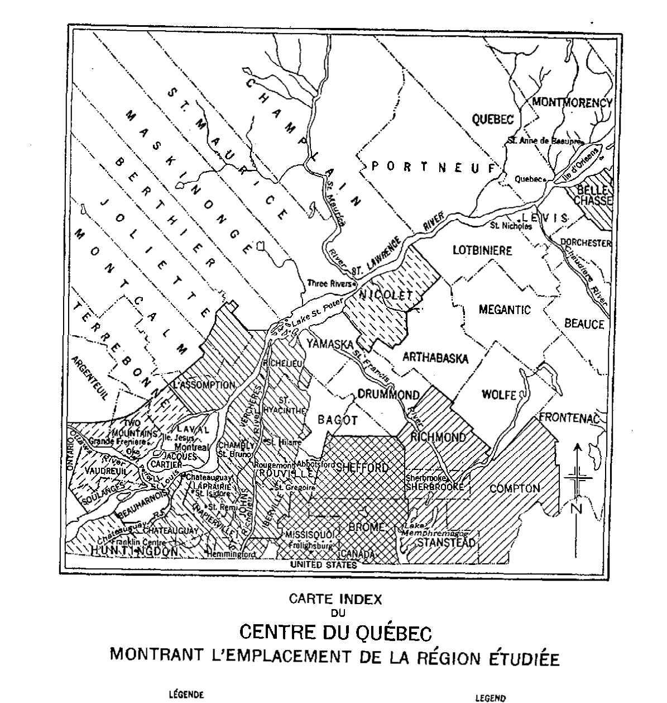
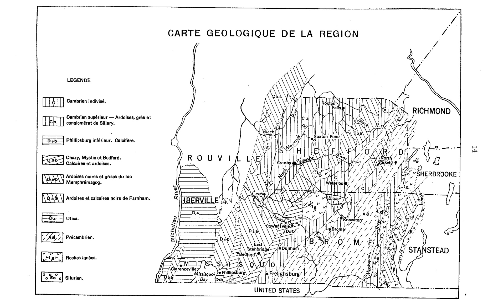
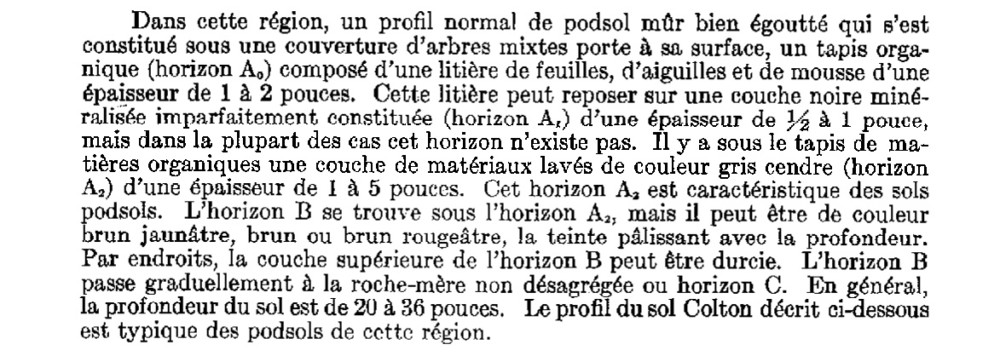
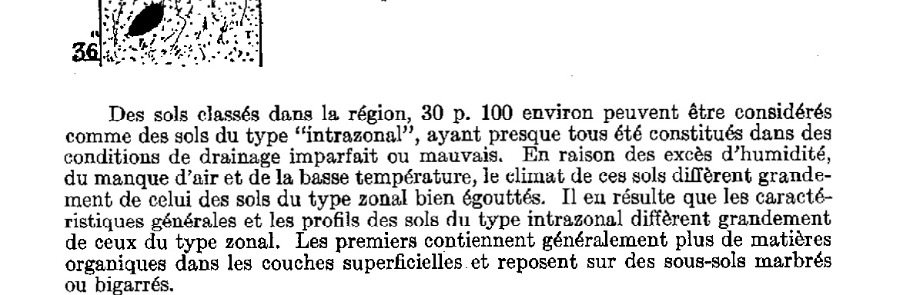

Levé pédologique des comtés de Shefford, Brome et Missisquoi
Agriculture et Agroalimentaire Canada (SISCan) — Transcription numérique haute fidélité
Table des matières (46 séries de sols répertoriées)
ÉTUDES DES SOLS
des
COMTÉS DE SHEFFORD, BROME et MISSISQUOI
dans la
PROVINCE DE QUÉBEC
par
D. B. CANN, P. LAJOIE et P. C. STOBBE
Service des fermes expérimentales, ministère fédéral de l'Agriculture, en collaboration avec le ministère de l'Agriculture de Québec et le collège Macdonald, Université McGill.
Publié d'ordre du très honorable JAMES G. GARDINER, Ministre de l'Agriculture, Ottawa.
OTTAWA
EDMOND CLOUTIER, C.M.G., B.A., L.PH., Imprimeur du Roi et Contrôleur de la papeterie. 1948
3M-10358-12-47
ÉTUDES DES SOLS
des
COMTÉS DE SHEFFORD, BROME et MISSISQUOI
dans la
PROVINCE DE QUÉBEC
par
D. B. CANN, P. LAJOIE et P. C. STOBBE
Service des fermes expérimentales, ministère fédéral de l'Agriculture, en collaboration avec le ministère de l'Agriculture de Québec et le collège Macdonald, Université McGill.
Publié d'ordre du très honorable JAMES G. GARDINER, Ministre de l'Agriculture, Ottawa.
OTTAWA
EDMOND CLOUTIER, C.M.G., B.A., L.Ph.,
Imprimeur du Roi et Contrôleur de la papeterie.
1948
3M-10358-12-47
REMERCIEMENTS
LES fonds nécessaires à la poursuite de l'étude des sols dans les comtés de Missisquoi, Brome et Shefford ont été fournis par le Service des fermes expérimentales du ministère fédéral de l'Agriculture. Le Collège Macdonald a fourni les bureaux et les laboratoires nécessaires pour effectuer les analyses chimiques et physiques des sols. Le ministère fédéral des Mines et Ressources a fourni les cartes topographiques de base.
Les auteurs du présent rapport désirent exprimer leur reconnaissance à tous ceux qui les ont aidés dans l'exécution de ce travail et notamment aux personnes suivantes :
M. D. McClintock, agronome du comté de Brome, qui a fourni des renseignements précieux sur l'évolution agricole de cette région.
Le professeur L.-C. Raymond du Collège Macdonald, qui a fourni les renseignements touchant l'amélioration des récoltes et les pâturages.
Le Dr W. A. DeLong du Collège Macdonald, qui a pris part aux travaux de laboratoire.
Le Dr R. T. D. Wickenden du ministère des Mines et Ressources, Ottawa, qui a fourni des renseignements sur la géologie de la région.
Le Dr A. Leahey de la Ferme expérimentale centrale, Ottawa, qui a donné des conseils précieux touchant la classification des sols et la préparation du présent rapport.
Les auteurs ont également contracté une dette de reconnaissance envers le personnel de la Division de l'horticulture, Ferme expérimentale centrale d'Ottawa, qui a fourni des renseignements sur les expériences relatives à l'application d'engrais chimiques dans les vergers de pommiers, région de Frelighsburg.
I. INTRODUCTION
Le présent rapport traite des sols des comtés de Shefford, Brome et Missisquoi qui sont situés dans les Cantons de l'Est du Québec et qui ont été étudiés en 1941 et 1942. Le présent rapport est le deuxième qui traite des sols dans la région des Cantons de l'Est, le précédent, qui couvrait les comtés de Stanstead, Richmond, Sherbrooke et Compton, ayant été publié en 1942.
La présente étude est divisée en deux parties générales. La première comporte une description générale de la région et étudie son emplacement, sa physiographie, son climat, l'historique et l'évolution de son agriculture. La seconde partie du rapport traite des sols, – leur origine, leur classification, leur description, leur productivité et leur entretien. Les sols sont provisoirement évalués selon leur adaptabilité aux récoltes ordinaires et groupés en cinq classes.
Trois cartes accompagnent le présent rapport, soit une pour chaque comté, montrant l'emplacement et l'étendue des divers types de sol. Les symboles appropriés sont donnés sur la carte pour indiquer le nom, la texture, la quantité de pierres et le relief du sol. Les cartes pédologiques ne sont pas suffisamment détaillées pour indiquer toutes les variations d'une ferme à l'autre; le groupement des sols selon leur utilisation n'indique pas leur valeur probable en espèces, car on a dû tenir compte d'un grand nombre d'autres facteurs, que nous discuterons au cours de la présente étude. Toutefois, le rapport peut servir de guide pour le choix du sol dans des régions assez vastes et il peut servir à identifier le type de sol où qu'il se trouve.
Le problème de l'érosion du sol prend une importance de plus en plus grande dans la région. Il se perd annuellement une quantité énorme de sol arable précieux et des façons culturales spéciales sont nécessaires pour certains types de sol. Le rapport entre l'érosion et les types de sol a été discuté à l'égard de tous les sols. Les principaux problèmes que suscite la production de récoltes générales de ferme dans la région, paraissent être la quantité de pierres, le relief, l'égouttement, la fertilité, l'acidité et la susceptibilité à l'érosion.

CARTE INDEX DU CENTRE DU QUÉBEC MONTRANT L'EMPLACEMENT DE LA RÉGION ÉTUDIÉE
Les comtés de Shefford, Brome et Missisquoi sont situés dans la partie centrale du sud de la province et forment les comtés ouest de la région connue sous le nom des Cantons de l'Est du Québec. Les régions étudiées s'étendent le long de la rivière Richelieu vers l'ouest du lac Memphremagog à l'est, — une distance de cinquante-trois milles, — et de la frontière internationale au sud jusqu'à la limite nord du comté de Shefford, — une distance de quarante et un milles. La région est irrégulière, les comtés de Brome et de Missisquoi se touchent et longent la frontière internationale, tandis que le comté de Shefford forme la limite nord du comté de Brome. La superficie globale de cette région est de 1,445 milles carrés ou 924,800 acres, répartie ainsi qu'il suit dans les trois comtés:
Comté
Superficie
Pourcentage du total
Milles carrés
Acres
Shefford
560.3
358,598.4
38.8
Brome
495.1
316,851.2
34.3
Missisquoi
389.6
249,350.4
26.9
Total
1,445.0
924,800.0
100.0
La région est bornée à l'ouest par la rivière Richelieu, les comtés d'Iberville, Rouville et Bagot; au nord par le comté de Bagot; à l'est par les comtés de Richmond, Sherbrooke et Stanstead (déjà étudiés et qui ont fourni la matière de la publication technique no 45 du ministère fédéral de l'Agriculture); au sud par la frontière internationale et les Etats du Vermont et de New-York. Les villes de Bedford, Cowansville et Granby sont situées à environ cinquante milles de Montréal; et Waterloo, qui occupe à peu près le centre de la région, est à quelque soixante milles de Montréal.
Physiographie.
Topographie — La région à l'étude est située, partie sur le plateau appalachien et partie dans la plaine du Saint-Laurent, de sorte que le relief en est très varié. Au point de vue du relief, cette étendue peut être divisée en trois sections. La section est est accidentée et montagneuse, la section centrale varie de très ondulée à fortement vallonnée et la section d'ouest, de plane à légèrement ondulée.
La section est de cette région est occupée par la chaîne du mont Sutton, prolongement des Montagnes Vertes du Vermont. Ce mont couvre la plus grande partie de l'est des comtés de Brome et de Shefford et s'étend dans une direction nord-est pour perdre de l'altitude à mesure qu'il s'allonge vers le nord. On y rencontre plusieurs pics célèbres, par exemple le Round-Top, le mont Foster, le mont Chagnon, le mont Orford, le Pain de Sucre et la Tête de Hibou, dont l'altitude varie de 1,800 à 3,000 pieds au-dessus du niveau de la mer. Cette chaîne est rompue à plusieurs endroits par des brèches et traversée par d'innombrables ruisseaux et quelques cours d'eau plus importants. L'altitude moyenne de la section orientale est d'environ 1,200 pieds au-dessus du niveau de la mer.
La section ouest de la région est occupée par les basses terres du Saint-Laurent, — une large plaine uniforme qui formait le lit de la mer post-glaciaire de Champlain. Les seuls accidents topographiques distincts de cette plaine sont les collines montérégiennes, — monts volcaniques isolés autour desquels la mer de Champlain a formé des grèves. Les faibles ondulations formées par les dépôts de till ou de délavage rompent le relief de cette plaine uniforme à tous autres égards, dont l'élévation moyenne est de 100 à 200 pieds au-dessus du niveau de la mer.
Entre ces deux extrêmes de relief, la section centrale de la région étudiée varie d'ondulée à vallonnée ou montagneuse, en allant de l'ouest à l'est. La partie sud de la section centrale est assez montagneuse, variant en altitude de 600 à 1,000 pieds et renfermant plusieurs collines isolées comme les monts Shefford, Gale et Brome qui dominent la contrée environnante. Vers le nord, la section centrale varie de légèrement ondulée à vallonnée et a une altitude de 400 à 600 pieds au-dessus du niveau de la mer. Plusieurs ruisseaux qui prennent naissance dans les hautes montagnes de l'est, traversent le pays et lui donne une apparence fortement irrégulière.
Les conditions topographiques moyennes de chaque étendue de sol sont indiquées sur les cartes au moyen de symboles.
Géologie — A l'exception d'une région de roches pré-cambriennes et de quelques intrusions éparpillées de roches ignées, les formations de roches à la base de la région à l'étude appartiennent à l'âge paléozoïque et comprennent des ardoises, des schistes argileux, des grès et des calcaires. Plusieurs types de roches y sont représentés comme on peut le voir ci-dessous et leur distribution est indiquée dans l'esquisse géologique ci-annexée :
Les roches dévoniennes et siluriennes sont confinées à une petite étendue le long de la rive ouest du lac Memphrémagog et comprennent des calcaires et des ardoises gris et noirs et un certain nombre de calcaires dolomitiques. Les roches dévoniennes renferment beaucoup de fossiles.
Les roches pré-cambriennes se limitent aux collines Sutton. On les a divisées en deux sections: (1) les roches de l'axe central, composées de schistes de mica et de quartz, et (2) celles du flanc, composées d'une série de schistes chloritiques verdâtres associés à des ardoises noires et des grès durs. Ces schistes se désagrègent facilement et une grande partie de ces matériaux se retrouvent dans le drift.
Les roches cambriennes se rencontrent de chaque côté et dans le voisinage des roches pré-cambriennes. Sur le versant est des collines, les roches sont disposées en une bande d'ardoises et de quartzites grises et noires d'une largeur de deux à trois milles, tandis que sur le versant ouest, ces roches se rencontrent sous forme d'ardoises verdâtres et noires et de dépôts locaux de grès de quartz, variant d'un à quatre milles de large. A Frelighsburg, les roches cambriennes renferment plus de sable et de mica que d'habitude et ressemblent aux roches cambriennes trouvées plus à l'est. Une couche distincte des roches cambriennes supérieures s'étend sur la moitié ouest du comté de Shefford et comprend des ardoises de Sillery rougeâtres et verdâtres et des grès verdâtre dur. La seule autre région de roches cambriennes se rencontre dans le canton de Saint-Armand. Les roches de cette région se composent de couches dolomitiques siliceuses blanches ou rougeâtres, entremêlées de bandes d'ardoises noires.
Les roches ordoviciennes sont représentées par à peu près chaque groupe de ce système. Par ordre d'importance croissante, ce sont les formations Potsdam, Calcifères, Chazy, Trenton et Black-River, Utica et Lorraine. Elles se composent d'ardoises, de grès et de calcaires et sont irrégulièrement distribuées à travers toute la région à l'ouest de la voûte des collines Sutton, comme on peut le voir sur la carte. Les roches de la formation Potsdam ne se rencontrent que comme fragments éparpillés de grès dur et aucun affleurement de cette formation ne se rencontre dans la région à l'étude. La plus grande partie de la région couverte par les roches ordoviciennes est représentée par les formations Trenton et Black-River, composées d'ardoises noires et interstratifiées de calcaires foncés. La formation Calcifères émarge sur de petites étendues près de Phillipsburg. La formation Chazy est caractérisée par des ardoises gris-bleu qui sont fréquemment dolomitiques. Les roches Utica se rencontrent dans la partie ouest du comté de Missisquoi entre la baie Missisquoi et la rivière Richelieu. Elles se composent d'ardoises brun noir et brunes rayées ici et là de calcaires dolomitiques.
Les roches ignées qui se trouvent dans la région sont éparpillées. Elles comprennent des syénites, des diorites, des dolérites et de la serpentine et se limitent aux masses ignées des monts Brome et Shefford. Là où les masses ignées sont venues en contact avec les ardoises, il s'est produit beaucoup de métamorphisme et les ardoises sont plissées et schisteuses.
Le tableau suivant résume les diverses formations de roches dans la région :
Âge
Formation
Composition
Distribution
Paléozoïque
Dévonienne
Calcaires et ardoises gris ou noirs; quelques calcaires dolomitiques
rive ouest du lac Memphrémagog.
Ordovicienne
Grès de Potsdam
fragments éparpillés dans l'ouest du comté de Missisquoi.
Ardoises et calcaires Trenton et Black-River; calcaires calcifères fossilifères; ardoises Chazy et calcaires dolomitiques; ardoises, schistes argileux et calcaires Utica et Lorraine;
Centre des comtés de Shefford et Missisquoi, Phillipsburg, ouest du comté de Brome et centre du comté de Shefford, ouest du comté de Missisquoi.
Cambrienne
ardoises, calcaires et quartzites;
Deux versants de la chaîne Sutton.
Pré-cambrien
Schistes micacés et chloritiques;
Mont Sutton.
Roches ignées
diorite, syénite, granit, serpentine;
Monts Brome et Shefford.
Géologie de la surface — Au cours de la période pléistocène, la région à l'étude était couverte d'une couche de glace de plusieurs centaines de pieds d'épaisseur. Les glaciers descendaient des collines et des vallées, emportant au passage des masses de sol et de roches, broyant, mélangeant et finalement redéposant ces matériaux en une couche de drift sur la roche de fond. Certains de ces matériaux broyés furent également déposés par les ruisseaux formés par la glace fondante. L'épaisseur de ce drift varie d'une couche mince jusqu'à plusieurs pieds et sa
composition est très variée. Depuis l'époque de déposition, les forces climatiques ont agi sur ces matériaux, en en changeant la couleur, la structure et la composition pour enfin nous donner les sols que nous avons aujourd'hui.
Les dépôts d'argile à blocaux (till) glaciaires varient quant à la composition, la texture, la profondeur et la compacité. Dans la plupart des endroits, ces dépôts contiennent une forte proportion de fragments provenant des roches sous-jacentes. Les dépôts dans la section est de la région proviennent surtout du schiste chloritique et micacé du mont Sutton. Ces dépôts ont une couleur vert olive à grise et une texture allant de la terre franche à la terre sablo-argileuse et en certains endroits, elles renferment beaucoup d'ardoise. Le relief varie d'accidenté à montagneux et l'égouttement superficiel est bon, mais l'égouttement interne peut varier de bon à mauvais, selon la porosité ou la compacité du dépôt d'argile à blocaux. Il y a généralement beaucoup de pierres à la surface de ces matériaux et le roc fait saillie ça et là.
Dans la partie centrale de la région, le till provient surtout d'ardoises et de grès. La texture varie de franche sableuse ou franche brun grisâtre à franche sablo-schisteuse. La topographie varie de ondulée à vallonnée et parfois accidentée, et l'égouttement superficiel est généralement bon, sauf dans les dépressions; l'égouttement interne est variable. Sur le terrain vallonné ou accidenté, l'égouttement est généralement bon, tandis que sur le terrain ondulé, il est généralement imparfait ou mauvais. Par endroits, le till est très poreux et a été modifié par l'eau; en d'autres endroits, il ressemble à des matériaux de délavage.
Les dépôts de till dans la partie ouest de la région proviennent surtout de roches argilo-schisteuses de l'époque ordovicienne, roches souvent très calcaires. La couleur de ces dépôts varie de grisâtre à brun grisâtre et ils passent de la terre franche à la terre franche argileuse. Le relief varie de légèrement ondulé à légèrement vallonné et l'égouttement superficiel varie de bon à imparfait. L'égouttement interne varie de bon à pauvre, selon la texture et le relief. Il y a généralement très peu de pierres à la surface de ce terrain.
On trouve des délavages glaciaires dans toute cette région sous forme de kames, d'eskers et de plaines de délavages. Ils se composent de sables et de graviers, parfois stratifiés, mais, en certains endroits, ils sont pêle-mêle et les cailloux abondent. Le matériel est surtout d'origine ignée et il s'y trouve de l'ardoise et du schiste argileux en petites quantités. Ces matériaux sont poreux et souvent excessivement égouttés mais, dans certains endroits, le sable est assez fin pour retenir une grande quantité d'humidité.
Le long des vallées des rivières des hautes terres des Appalaches, on rencontre d'épais dépôts de sable alluvionnaire sous forme de plaines de débordement ou de cône de déjection ainsi que des dépôts sablonneux peu profonds (2 à 5 pieds) recouvrant des limons et des argiles lacustres en forme de terrasses. En certains endroits, ces limons et argiles ne sont pas recouverts de sable et apparaissent sous forme de terrasses à texture lourde le long des ruisseaux. Dans la plaine du St-Laurent, section ouest de la région, les matériaux déposés par l'eau, autres que les délavages, se composent de dépôts de sable recouvrant l'argile, et dont l'épaisseur varie de quelques pouces à plusieurs pieds, de limons et d'argiles alluvionnaires et lacustres, ainsi que de lourdes argiles marines. L'égouttement varie de bon à excessif dans les sables profonds et d'imparfait à pauvre dans les argiles. Dans toute la région, on rencontre des dépressions où l'égouttement restreint et l'accumulation de matière organique ont provoqué la formation de terre noire et de tourbe.
Les principaux matériaux qui ont contribué à former les sols sont énumérés dans le tableau suivant:
Type de matériaux
Origine
Topographie
Situation
Till franc à franc argileux
schiste argileux et ardoise
ondulée
Centre, comté de Missisquoi.
Till franc à franc argileux
schiste argileux et ardoise calcaires
ondulée
Ouest, comté de Missisquoi.
Till franc sableux
ardoise et grès
unie à ondulée
Centre, comté de Shefford.
Till franc sableux à franc
ardoises
vallonnée à accidentée
Est, comté de Brome.
Till franc sableux à franc
matériaux schisteux
vallonnée à accidentée
Est de Shefford et ouest de Brome.
Till remanié franc sableux
ardoise et grès
ondulée à accidentée
Est et centre de Shefford.
Till franc schisteux à franc
schiste argileux et ardoise
ondulée à légèrement vallonnée
Sud-ouest de Shefford et est de Missisquoi.
Graviers et sable de délavages
d'origine mixte
ondulée à vallonnée
Comté de Brome.
Sables profonds de délavages
d'origine mixte
ondulée à vallonnée
Comté de Shefford et de Brome.
Matériaux graveleux de grèves
d'origine mixte
inclinée
Comtés de Brome et de Shefford.
Sables alluvionnaires sur terrasses argileuses de rivières
d'origine mixte
inclinée
Missisquoi.
Argiles lacustres sur terrasses de rivières
d'origine mixte
inclinée
Missisquoi.
Sables alluvionnaires profonds et minces sur argile, plaine du Saint-Laurent
d'origine mixte
légèrement ondulée à vallonnée
Comtés de Missisquoi et de Shefford.
Limons et argiles marins et alluvio-lacustres
……………………
unie à légèrement ondulée
Comtés de Missisquoi et de Shefford.
Matériaux alluvionnaires récents
……………………
unie en dépression
Dans toute la région.
Dépôts organiques
mousses, carex, et arbres
en dépression
Dans toute la région.
Égouttement — La région entière est bien égouttée grâce à un réseau de rivières assez important comprenant les rivières Yamaska, Missisquoi, Noire et Pike. La rivière Yamaska constitue le réseau le plus important et draine une grande partie de la section ouest de cette région. Elle a trois embranchements, un au nord, un au centre et un autre au sud.
CARTE GEOLOGIQUE DE LA REGION
LEGENDE
Cambrien indivisé.
C3Cambrien supérieur — Ardoises, grès et conglomérat de Sillery.
D1bPhillipsburg inférieur. Calcifère.
D2bChazy, Mystic et Bedford. Calcaires et ardoises.
D3bArdoises noires et grises du lac Memphrémagog.
D3aArdoises et calcaires noirs de Farnham.
D4Utica.
ABPrécambrien.
v v vRoches ignées.
°°°Silurien.

Carte géologique montrant la distribution des formations géologiques (Rouville, Iberville, Shefford, Brome, Richmond, Stanstead) et les cours d'eau (Rivière Richelieu, Yamaska, Black, Missisquoi).
La branche nord de la rivière Yamaska prend sa source à l'est de Granby, coule vers le sud-ouest, dans le comté de Shefford, pour se jeter dans le bras principal, qui draine le bassin des montagnes de Brome et de Shefford et coule vers l'ouest, à travers Shefford-Ouest et Adamsville. Le bras sud de la rivière Yamaska draine les hauts plateaux à l'est de Cowansville et coule en direction nord-ouest à travers Sweetsburg, Cowansville et Brookport pour se jeter dans la rivière principale près de Farnham, d'où la Yamaska coule vers le nord et vient se jeter dans le Saint-Laurent.
La rivière Noire, égoutte la partie nord de cette région. Elle reçoit la plupart de ses eaux des hauts plateaux du coin nord-est de la région et coule en direction nord-ouest à travers Roxton-Falls pour se diriger ensuite vers le sud-ouest en passant par le nord-ouest de la région et se jeter finalement dans la Yamaska. De nombreux petits ruisseaux contribuent également à la grossir le long de son parcours.
La rivière Pike draine le bassin dans le voisinage de Frelighsburg et de la frontière internationale et coule vers le nord-ouest à travers Stanbridge-Est et Bedford jusqu'à Notre-Dame-de-Stanbridge, où vient se jeter un petit affluent qui lui arrive du nord; de là elle coule vers le sud-ouest et se jette dans la baie Missisquoi. Plusieurs petits cours d'eau comme la rivière North Pike et la rivière Rock viennent grossir son volume.
La rivière Missisquoi reçoit ses eaux des deux côtés du bassin des monts Sutton. Du côté ouest elle coule vers le sud à travers Sutton et Abercorn pour se jeter dans la rivière principale au-delà de la frontière internationale. Du côté est, elle traverse un certain nombre de lacs dans le voisinage des monts Orford et Chagnon et coule vers l'Est, en passant par Potton et Mansonville, pour se jeter dans le bras principal à Highwater. La rivière coule ensuite vers l'ouest et vers le sud et forme une courbe qui la conduit dans l'Etat de Vermont d'où elle se jette à l'ouest dans le lac Champlain.
Plusieurs petites rivières égouttent l'ouest du comté de Missisquoi et se jettent dans la rivière Richelieu. La plus considérable est la rivière Sud. Presque toutes ces rivières coulent lentement et sont stabilisées. La Missisquoi sort souvent de son lit au printemps alors qu'elle reçoit d'énormes quantités d'eau des pentes abruptes des montagnes.
Végétation
Avant la colonisation, la végétation naturelle de la région à l'étude se composait de forêts d'essences à feuilles caduques et de conifères. Une bonne partie de la terre a été défrichée et mise en culture et la forêt a été en grande partie exploitée. A l'heure actuelle, les forêts des pentes élevées et bien égouttées sont recouvertes presque exclusivement d'arbres à feuilles caduques, notamment l'érable, le frêne, le bouleau gris et quelques ormes.
On rencontre parfois des noyers dans certaines parties de la région. Dans les endroits les plus mal égouttés de la section est, on rencontre des épinettes et de la pruche, tandis que dans la partie ouest se trouvent beaucoup de cèdres, de saules et d'aulnes dans les endroits humides. Dans les régions sablonneuses, le pin et le merisier sont les principaux arbres de couverture. L'arbuste le plus fréquent est la spirée (Spiraea tomentosa), qui se rencontre surtout dans le comté de Shefford où cet arbuste se répand dans bien des pâturages, tandis que dans d'autres pâturages, le saule, l'aulne et le bouleau rendent la paissance difficile.
Dans les meilleurs types de pâturage, l'agrostide stolonifère (Agrostis alba) est la graminée dominante et l'on rencontre beaucoup de pâturin des prés du Kentucky (Poa pratensis). Les autres graminées qu'on rencontre dans ces terri-
toires comprennent la fétuque rouge (Festuca rubra), la fléole des prés (Phleum pratense), le chiendent (Agropyren repens) et le pâturin comprimé (Poa compressa). La danthonie à épi (Danthonia spicata) se rencontre dans bien des pâturages mais surtout dans ceux de l'est. Le trèfle blanc (Trifolium repens) se rencontre dans les meilleurs pâturages, surtout dans la partie ouest de la région.
Les mauvaises herbes les plus répandues sont: la grande marguerite (Chrysanthemum leucanthemum), les laîches (Carex spp.), le chardon commun (Cirsium arvense), le fraisier des champs (Fragaria virginiana), l'épervière oranger (Hieracium aurantiacum), la petite oseille (Rumex acetosella) et le bouton d'or (Ranunculus acris).
Climat
Le climat est l'un des principaux facteurs qui, par son action sur les matériaux géologiques, donne le produit qu'on appelle sol. Il régit également dans une grande mesure les récoltes qu'on peut produire sur ces sols. Dans les régions de la province déjà étudiées, on peut dire que le climat est humide et tempéré. Les étés sont courts et les journées chaudes, suivis de longs hivers froids et de beaucoup de neige. La précipitation annuelle est d'à peu près quarante pouces en moyenne, dont environ la moitié tombe au cours de la saison de végétation.
Le climat de la région présente bien des variations locales, surtout en ce qui concerne la précipitation et la température mais, en général, la température et la durée de la saison de végétation décroissent pendant que la précipitation augmente de l'ouest à l'est. Pour nous faire une idée des conditions moyennes de température de cette région, nous prendrons le relevé de la température, de la précipitation et du gel pour deux stations, l'une dans l'est et l'autre dans l'ouest de la station de Farnham, aux confins des terres basses du Saint-Laurent dans la partie ouest de la région. Le tableau no 1 indique les relevés de température pour ces deux stations.
Renvoi: Tous les relevés météorologiques donnés dans cette section du rapport sont tirés des archives de la Division météorologique, ministère fédéral des Transports.
TABLEAU n° I
RELEVÉ DE LA TEMPÉRATURE À BROME ET À FARNHAM. MOYENNE DE 15 ANS. (1923-1937)
Mois
Brome (altitude : 678 pieds)
Farnham (altitude : 191 pieds)
Température quotidienne moyenne
maximum
mini- mum
Température quotidienne moyenne
maximum
mini- mum
décembre
17.5
65
−38
21
56
−35
janvier
15.5
57
−35
15
55
−40
février
14.0
51
−37
17
56
−38
hiver
15.6
17.6
mars
25.0
67
−36
26
67
−23
avril
38.1
80
0
40
80
0
mai
51.4
88
22
53
90
24
printemps
38.1
39.6
juin
61.0
92
31
63
94
31
juillet
65.4
92
36
67
91
37
août
62.5
92
33
65
92
34
été
62.9
65
septembre
56.7
88
21
58
89
24
octobre
44.7
78
11
46
84
15
novembre
33.2
68
−13
34
70
−10
automne
44.8
46
année
40.4
42
Les températures moyennes à Farnham sont légèrement supérieures à celles de Brome, mais Farnham a enregistré des minimums plus bas que Brome en décembre et janvier, pendant la période visée par les relevés du tableau n° I. A signaler que même pendant les mois d'été, les basses températures enregistrées indiquent un danger possible de gelée.
Les relevés de précipitation aux deux stations sont données au tableau n° II.
TABLEAU n° II
PRÉCIPITATION MOYENNE MENSUELLE À BROME ET À FARNHAM. 1923-1937.
Mois
Brome
Farnham
décembre...
3.11
2.80
janvier...
4.21
3.45
février...
2.77
2.33
hiver...
10.09
8.58
mars...
3.43
2.98
avril...
3.76
3.34
mai...
3.79
3.07
printemps...
10.98
9.39
juin...
4.32
3.18
juillet...
4.72
3.93
août...
3.31
2.72
été...
12.35
9.83
septembre...
4.71
3.58
octobre...
3.99
3.30
novembre...
4.00
3.70
automne...
12.65
10.58
Annuelle...
46.07
38.38
Saison de croissance...
20.85
16.48
Il est évident, d'après le tableau qui précède, que la partie est de la région reçoit plus de pluie que la partie ouest. Cela peut être attribuable en partie à l'effet qu'exercent les monts Sutton sur les conditions climatiques dans la section est de la région. Brome reçoit 20.85 pouces de pluie ou 45.2 p. 100 de la précipitation totale pendant la saison de végétation, tandis que Farnham ne reçoit que 16.48 pouces ou 43 p. 100 durant la même période. C'est en juillet que les deux stations reçoivent le plus de pluie et Farnham en reçoit un peu plus en automne qu'en été, bien que la différence ne soit pas prononcée entre les deux stations. La précipitation moyenne mensuelle est assez uniformément distribuée au cours de la saison de végétation. Août est le mois le plus sec de la saison de végétation et les sécheresses de la fin de l'été sont plus fréquentes dans l'ouest que dans l'est de la région.
Le tableau n° III indique la durée de la saison de végétation à ces deux stations.
TABLEAU n° III
DURÉE DE LA SAISON DE VÉGÉTATION SANS GELÉE. MOYENNE DE 15 ANS. (1923-1937)
Station
Dernière gelée en-registrée
Première gelée en-registrée
Dates moyennes
Période sans gelée (jours)
Dernière gelée
Première gelée
moyenne
la plus longue
la plus courte
Brome...
16 juin...
4 sept...
29 mai
17 sept.
111
140
90
Farnham
28 juin...
10 sept...
26 mai...
19 sept.
116
140
76
Il semble n'y avoir que peu de différence dans la saison de végétation entre ces deux stations. Farnham a une période un plus longue de jours sans gelée mais on a noté une période beaucoup plus courte que la plus courte à Brome. D'autre part, les deux stations enregistrent le même nombre de jours durant la plus longue période sans gelée.
Le fait que la partie ouest de la région reçoit moins de pluie et bénéficie d'une température un peu plus élevée (plus d'évaporation) que la partie est, est probable-ment un bienfait pour les agriculteurs. Les sols de la partie ouest ont en général une texture lourde et une topographie uniforme, de sorte que la pluie s'infiltre dans le sol plus lentement, tandis que les sols de l'est ont une texture plus ouverte et un relief plus prononcé, de sorte que l'égouttement superficiel et interne est plus facile. Si la partie ouest de la région recevait la même précipitation que la partie est, il est probable que beaucoup de ses sols seraient trop détrempés pour qu'on puisse les travailler. D'autre part, les sols de la section ouest ont une tendance à se dessécher et à devenir brûlants en été.
Historique et développement de l'agriculture
Avant l'année 1791, la région à l'étude était recouverte de forêts, et pour faciliter la colonisation, des terres furent offertes aux colons éventuels. Ces pionniers se groupaient généralement en compagnies et désignaient l'un de leurs membres pour servir d'agent en vue d'obtenir des concessions de terres et de faire effectuer les travaux d'arpentage nécessaires à l'établissement des colons. La plupart des colons vinrent des États-Unis; ils trouvèrent au Canada, un refuge contre les troubles qui suivirent la Révolution américaine. Ils étaient aussi poussés par le désir de demeurer loyaux à la couronne britannique. D'autres ne cherchaient qu'à acquérir des nouvelles terres fertiles et de se remettre à la culture dans un pays neuf. Les premiers colons éprouvèrent d'énormes difficultés, mais le sol était fertile, les ruisseaux gorgeaient de poissons et les forêts étaient un paradis de chasse. Ce fut une dure tâche que de défricher la terre et le ne put être question de songer à garder des animaux tant que le sol ne fut pas défriché et ensemencé. Les animaux amenés par les pionniers étaient nourris de graminées sauvages, de tiges de maïs et de feuilles.
Il semble que le maïs ait été la première plante cultivée par les colons. On le moulait à la main en attendant qu'y eût des meuneries. À mesure que la terre se défrichait, les cultures de maïs et d'avoine s'étendaient et l'on expédiait le surplus de grains à des marchés éloignés, à celui de Montréal, par exemple. Parmi les principales sources de revenus de l'époque, signalons l'exploitation de la potasse obtenue des cendres de bois des arbres calcinés. Le défrichage de la terre a permis d'introduire un plus grand nombre de bêtes à cornes sur les meilleurs terrains cultivés, ce qui permit à l'industrie laitière de prendre un essor.
rapide; les méthodes de culture s'améliorèrent, et l'on augmenta la quantité de céréales, de foin et de trèfle. Le premier véhicule sur roues à pénétrer dans la région (1807) fut une charrette tirée à bœufs, transportant les premiers ferrages nécessaires à l'érection du premier moulin à farine. Les cantons de Brome, de Bolton et de Potton dans le comté de Brome furent colonisés en 1797; les autres le furent après cette date. Le recensement de 1861 donne 3,136 habitants dans cette région. La population s'accrut rapidement comme en fait foi le tableau no IV suivant.
TABLEAU no IV
POPULATION DES COMTÉS DE SHEFFORD, BROME ET MISSISQUOI.
Comté
1921
1931
1941
Nombre de personnes sur les fermes, 1931
% sur les fermes, 1931
Nombre de personnes par ferme, 1931
Shefford
25,734
28,262
33,381
13,094
46.4
5.3
Brome
13,381
12,433
12,485
8,866
71.2
5.1
Missisquoi
17,709
19,636
21,442
10,042
53.1
5.7
Total
56,824
60,331
67,308
32,002
53.1
Le tableau no IV indique une tendance générale à l'augmentation de la population, particulièrement dans le comté de Shefford. Cela s'explique en partie par l'essor industriel qui se produit dans les villes de Granby et de Waterloo. Dans le comté de Brome, près des trois quarts de la population étaient sur les fermes en 1931, tandis que 53 p. 100 seulement de la population de toute la région à l'étude se trouvaient sur les fermes. Le pourcentage est plus faible dans le comté de Shefford où les deux grands centres de Granby et de Waterloo absorbent une grosse partie de la population engagée dans d'autres travaux que ceux de la ferme.
Le tableau no V indique l'utilisation de la terre dans la région. Il révèle que dans les comtés de Shefford et de Missisquoi, à peu près toute la terre est occupée, tandis que dans le comté de Brome, seulement 79 p. 100 de la terre est occupée. La cause en est qu'une grande partie de la terre dans le sud et l'est du comté de Brome est accidentée. Le comté de Shefford compte le plus grand nombre de fermes, la plus grande étendue en culture par ferme et la plus grande étendue de terre défrichée par ferme; viennent ensuite les comtés de Missisquoi et de Brome.
En moyenne les familles sur les fermes comptent de cinq à six personnes, mais dans le comté de Brome, la famille doit vivre sur 46 acres de terre améliorée par comparaison à 74 et 71 acres dans les comtés de Shefford et de Missisquoi respectivement. Toutefois, la moyenne des fermes dans le comté de Brome comptent une plus grande étendue en pâturage et en forêts que les fermes des deux autres comtés.
Le tableau no VI donne la superficie et la distribution des récoltes dans la région sur une période récente de dix ans. Les chiffres de 1940 forment un contraste avec ceux de 1931. En 1940, les étendues de blé, d'orge, de maïs fourrager, de grains mélangés, et de racines étaient beaucoup plus vastes qu'en 1931, tandis que les cultures d'avoine, de pommes de terre, de foin et de trèfle étaient moins considérables. Les cultures de blé, d'orge et de grains mélangés étaient plus étendues dans tous les comtés; celles du maïs l'emportaient dans le comté de Brome et les racines, dans le comté de Missisquoi.
TABLEAU no V Utilisation de la terre dans la région à l'étude. 1931*
Comté
Étendue totale de terre Acres
Terre occupée Acres
Pourcentage du total occupé
Nombre de fermes
Nombre moyen d'acres par ferme
Terre défrichée améliorée
Terre occupée non améliorée
Total
Moyenne par ferme
Pâturage naturel
Boisé
Marécage
Total
Shefford
358,598
348,097
97.0
2,258
154.1
168,118
74.4
102,668
71,381
5,930
179,979
Brome
316,852
251,072
79.2
1,724
145.6
79,359
46.0
91,118
76,592
4,003
171,713
Missisquoi
249,350
225,653
90.4
1,749
123.2
124,969
71.4
54,040
39,894
6,750
100,684
TOTAL
924,800
824,822
89.1
5,731
143.7
372,446
64.9
247,826
187,867
16,683
452,376
TABLEAU no VI Superficie en acres et répartition des récoltes*
Comté
Année
Blé
Avoine
Orge
Maïs fourrager
Grains mélangés
Foin et trèfle
Pommes de terre
Racines
Shefford
1931 1940 1941
80 260 56
26,224 22,630 28,747
1,172 2,730 1,951
1,069 1,000 2,008
1,452 2,090 2,003
92,575 87,450 89,168
1,881 2,510 1,861
553 920 1,019
Brome
1931 1940 1941
50 100 52
8,824 7,450 10,637
226 2,530 654
1,271 2,050 1,511
179 510 307
58,112 47,390 44,439
1,171 850 1,067
370 370 480
Missisquoi
1931 1940 1941
203 650 208
24,175 17,560 19,310
1,240 4,830 2,394
2,688 2,510 2,793
514 1,280 3,906
69,396 69,220 56,954
1,515 970 1,202
385 570 409
TOTAL
1931 1940 1941
333 1,010 316
59,223 47,640 58,694
2,638 10,090 4,999
5,018 5,560 6,312
2,145 3,880 6,216
220,083 204,060 190,561
4,567 4,330 4,130
1,308 1,860 1,908
* Compilé de l'Annuaire statistique, Québec 1934-1942.
En 1941, les cultures d'avoine, de maïs, de grains mélangés et de racines excédaient celles de 1940. Il y a eu diminution dans les cultures de blé, d'orge, de pommes de terre, de foin et de trèfle. Il est difficile de tirer des conclusions précises à la lumière de ces chiffres, étant donné qu'ils se ressentent dans une certaine mesure, des suites de la guerre. La tendance générale, d'après le tableau no VI, semble indiquer que les cultures de foin et de trèfle diminuent lentement et qu'on cultive maintenant plus de maïs, de grains mélangés et de racines. La culture de l'avoine est plus ou moins stable.
Le nombre et la qualité des vaches laitières dénotent une grande amélioration en ces dernières années et la production du beurre et du fromage est une importante source de revenu. En outre, d'autres produits comme le miel, le sucre et le sirop d'érable, les produits avicoles constituent une autre source de revenus. Dans le comté de Missisquoi, la fructiculture est une industrie importante et l'on y rencontre un grand nombre de grands vergers commerciaux. En général, les fermes de l'ouest des comtés de Missisquoi et de Shefford sont consacrés à l'industrie laitière; le centre et le sud du comté de Missisquoi est surtout consacré à la fructiculture et dans le reste de la région on s'adonne à la culture mixte. La valeur des produits agricoles par cent acres de terre occupée en 1939 variait de $1,000 à $1,499 et la valeur moyenne des produits laitiers par ferme dans la même année était de $500 à $600 dans Shefford et Brome et de $400 à $500 dans le comté de Missisquoi. De 5 à 14 p. 100 des fermes de la région étudiée avaient l'électricité et 35 à 45 p. 100 avaient des automobiles en 1941. Ces chiffres ont augmenté ces dernières années. (2).
Transport et marchés
La région à l'étude est bien pourvue de routes et de voies ferrées pour faciliter le transport des produits agricoles au marché. La route nº 1 qui relie Montréal à Sherbrooke traverse la section centrale de la région de l'ouest à l'est par Granby, Waterloo, Eastman et Magog. Elle se bifurque à Marieville et continue vers le sud-est jusqu'à Cowansville. (no 40). La route no 52 se dirige vers l'ouest et passe par Stanbridge et Bedford jusqu'à Pike-River où elle rejoint la route nº 7 qui va de Phillipsburg vers le nord à Saint-Jean et tourne au sud et à l'ouest pour traverser la partie ouest du comté de Missisquoi. Toutes ces routes sont en béton ou en macadam. De Knowlton, la route no 39 court vers l'est et le sud, passe par Bolton-Pass jusqu'à Mansonville et Highwater du côté est des monts Sutton. Sur le versant ouest des monts, la route no 13 va vers le sud en partant de la route no 52 près de Sweetsburg et aboutit à Sutton et à Abercorn. Les routes nos 39 et 52 sont reliées à la route no 1 par une route pavée vers le nord, de Knowlton à Waterloo.
De Waterloo, la route no 39 continue vers le nord et l'est du comté de Shefford jusqu'à Racine, tandis que la route nº 13 va vers le nord de Cowansville à Granby, Roxton-Pond, Roxton-Falls et Drummondville, traversant la partie ouest du comté de Shefford. Il y a, entre les routes mentionnées ci-dessus, tout un réseau de chemins secondaires qui sont, en général, en bon état.
Plusieurs lignes de chemin de fer traversent la région. La ligne principale de l'est du Pacifique-Canadien qui relie Montréal à Saint-Jean (N.-B.) traverse la région de l'ouest à l'est en passant par les villages de Brookport, Adamsville, Shefford-Ouest, Foster, Eastman et Magog. Un embranchement de cette ligne se dirige vers le sud de Foster à Sutton-Junction, Sutton et Abercorn, en passant par Knowlton. A Sutton-Junction, il rencontre un autre embranchement qui court vers l'est de Brookport à Cowansville. Un troisième embranchement de ce chemin de fer se dirige vers le nord le long de la vallée Missisquoi sur le versant est des monts Sutton depuis Highwater jusqu'à Eastman et au nord par Law-
renceville et Racine jusqu'à Richmond. Un quatrième embranchement va vers le nord en partant de Waterloo; il traverse Roxton-Falls et Actonvale et se dirige vers Drummondville.
Les chemins de fer Nationaux du Canada exploitent un embranchement entre Farnham, Granby et Waterloo. Un train électrique de la Montreal and Southern Counties Railway fait la navette entre Granby et Montréal.
Les plus gros marchés de la région sont Granby, Cowansville, Farnham, Bedford et Waterloo, mais il y a plusieurs centres secondaires qui constituent des marchés pour les produits de la ferme. Parmi ces derniers mentionnons Sutton, Abercorn, Mansonville, Roxton-Pond, Roxton-Falls, Knowlton, Dunham, Frelinghsburg et Phillipsburg. Certains de ces centres, et notamment Knowlton, bénéficient d'un bon commerce d'été.
Comme la partie ouest de la région se trouve à proximité de gros centres comme Saint-Hyacinthe, Drummondville et Montréal, il est possible d'y envoyer certains des produits locaux.
La plupart des plus grandes villes sont des centres industriels importants où l'on fabrique notamment des textiles, de la machinerie, des produits du bois, des tuiles et des matériaux de construction. En 1941, Granby avait 36 établissements employant un total de 3,852 personnes et produisait pour une valeur brute de $17,096,507. Farnham et Waterloo avaient respectivement 17 et 13 établissements produisant, pour une valeur de $4,292,601 et $3,446,017. (9) Certains des villages moins importants comptent des industries locales comme des scieries, des conserveries, des beurreries, qui rapportent beaucoup de revenus et procurent de l'emploi à bien des gens. Ces villages constituent un excellent marché pour les produits de la ferme.
III. MORPHOLOGIE ET GENÈSE DES SOLS
Les sols de la région à l'étude sont le produit de l'action des forces de désagrégation et de transformation sur les divers matériaux géologiques discutés au chapitre de la géologie de surface. Les caractéristiques du sol à quelque endroit que ce soit, sont influencées par (1) le climat et la végétation sous lesquels la roche-mère a existé, (2) la composition physique et minéralogique des matériaux, (3) le relief et l'égouttement des matériaux, (4) la vie animale dans et sur le sol, (5) la période au cours de laquelle les forces de transformation ont été à l'oeuvre et (6) les effets de la culture ou du travail de l'homme.
Dans certaines conditions climatiques et végétatives, les sols bien égouttés reposant sur les différentes roches-mères tendent à acquérir certaines caractéristiques qui leur sont communes. On qualifie ce type de sol de zonal. Dans les grandes étendues occupées par ces sols, des conditions locales telles qu'un égouttement lent ou excessif, des écarts extrêmes dans la nature des matériaux de base, causent la formation de sols qui diffèrent grandement du type zonal quant aux caractéristiques; c'est le type “interzonal.” Le terme “azonal” s'emploie à l'égard des sols qui n'ont pas de développement caractéristique.
La majorité des sols dans la région à l'étude appartiennent à deux groupes du type zonal, savoir: les “Podzols” et les “Podsoliques bruns”. Les podsols sont les plus communs et les mieux égouttés du comté de Shefford, tandis que les podsoliques bruns prédominent dans l'est du comté de Missisquoi et dans certaines parties du comté de Brome. Les sols de ces deux groupes diffèrent surtout entre eux par leur degré de lessivage visible dans les profils ou coupes transversales qui laissent voir les différentes couches ou horizons du sol. Les podsols ont une couche grisâtre prononcée (horizon A2) directement sous la litière de feuilles, tandis que dans les sols podsoliques bruns cet horizon n'existe généralement pas
ou n'est que faiblement développé. Le degré de développement de cet horizon donne une idée de l'ampleur du lessivage.
Dans cette région, un profil normal de podsol mûr bien égoutté qui s'est constitué sous une couverture d'arbres mixtes porte à sa surface, un tapis organique (horizon A0) composé d'une litière de feuilles, d'aiguilles et de mousse d'une épaisseur de 1 à 2 pouces. Cette litière peut reposer sur une couche noire minéralisée imparfaitement constituée (horizon A1) d'une épaisseur de ½ à 1 pouce, mais dans la plupart des cas cet horizon n'existe pas. Il y a sous le tapis de matières organiques une couche de matériaux lavés de couleur gris cendré (horizon A2) d'une épaisseur de 1 à 5 pouces. Cet horizon A2 est caractéristique des sols podsols. L'horizon B se trouve sous l'horizon A2, mais il peut être de couleur brun jaunâtre, brun ou brun rougeâtre, la teinte pâlissant avec la profondeur. Par endroits, la couche supérieure de l'horizon B peut être durcie. L'horizon B passe graduellement à la roche-mère non désagrégée ou horizon C. En général, la profondeur du sol est de 20 à 36 pouces. Le profil du sol Colton décrit ci-dessous est typique des sols podsols de cette région.
A0 aiguilles lâches; litière de feuilles, et matières organiques à demi décomposées
A2 terre franche sableuse grise à texture fine; structure faible lamellée; friable; quelques fragments de gravier; pH 5.4
B1 terre franche sableuse brun pâle; granuleuse; meuble et friable; contenant un peu de gravier fin; pH 5.6
B2 terre franche sableuse variant de jaunâtre à brun grisâtre; granuleuse, moyennement ferme; généralement assez grossière; un peu de gravier; pH 5.8
C sable et gravier grisâtres; devenant stratifiés dans les couches profondes; quelques cailloux de granit; pH 5.8

Profil de sol podsol (Colton)
Les sols podsoliques bruns bien égouttés de la région à l'étude se sont constitués sous la forêt de bois franc et on peut les considérer comme des podsols imparfaitement constitués. Ils se sont formés sous une forêt de bois franc et en raison d'un lessivage moins prononcé; plus que les podsols, ils ont gardé généralement dans toute leur masse, une plus grande quantité d'éléments nutritifs. Les sols podsoliques bruns bien égouttés ont, en forêt, une couche de matières organiques (horizon A0) de ½ à 1 pouce à leur surface; cette couverture comprend une couche de feuilles et de matières organiques à moitié décomposées. L'horizon A1 ou couche minéralisée foncée, ordinairement mieux développé dans ces sols que dans les podsols, est d'une épaisseur de ½ à 1 pouce. Il repose souvent sur une mince couche de matériaux lessivés dont l'épaisseur varie de très mince à environ 1 pouce, mais elle peut parfois exister en poches plus profondes. En bien des endroits cet horizon A1 n'existe pas ou est imperceptible. L'horizon B qu'on rencontre sous l'horizon A2, est de couleur brune et devient plus pâle à mesure
qu'on descend et passe graduellement à la couleur grise à vert olive de la roche-mère. L'épaisseur du solum varie de 20 à 30 pouces dans ces sols. L'horizon C est souvent ferme et compact et peut entraver l'égouttement. Les sols Blandford sont caractéristiques du groupe des podsoliques bruns et nous en décrivons le profil ci-dessous:

Profil du sol Blandford
A0 litière de feuilles; racines, etc.
A1 composition variant de la terre franche noire à la terre franche sableuse; structure granuleuse faible; friable; pH 5.0
A2 composition variant de la terre franche grise à la terre franche sableuse; sans structure; friable; généralement par poches ou absente; pH 5.2
B1 composition variant de la terre franche sableuse fine brun foncé à la terre franche; friable; structure granuleuse; pH 5.6
B2 terre franche sableuse d'un brun olive foncé; structure granuleuse faible; quelques pierres et cailloux; friable; pH 5.7
C terre franche sableuse variant du gris foncé au gris olive et till de terre franche; ferme, faiblement lamellée; contient des fragments anguleux de schistes et de grès; pH 5.8
Des sols classés dans la région, 30 p. 100 environ peuvent être considérés comme des sols du type “intrazonal”, ayant presque tous été constitués dans des conditions de drainage imparfait ou mauvais. En raison des excès d'humidité, du manque d'air et de la basse température, le climat de ces sols diffèrent grandement de celui des sols du type zonal bien égouttés. Il en résulte que les caractéristiques générales et les profils des sols du type intrazonal diffèrent grandement de ceux du type zonal. Les premiers contiennent généralement plus de matières organiques dans les couches superficielles et reposent sur des sous-sols marbrés ou bigarrés.
Les sols du type intrazonal de la région étudiée appartiennent aux quatre groupes ou types suivants:
Les sols “marécageux” (bog) formés des débris végétaux, des restes de plantes de marécage. Les sols de surface sont de terre noire ou de tourbe et le sous-sol est tourbeux.
Les sols “semi-marécageux” (half-bog) se sont constitués à même une forêt de marécage. Là où ils n'ont pas été dérangés, les sols de surface sont de terre noire ou de tourbe reposant sur une couche de sol minéral marbré et grisâtre.
Les sols “podsols mal égouttés” (groundwater podsols) de la région à l'étude se sont développés sur des dépôts sableux variant d'imparfaitement à mal égouttés. Ils portent une mince couche de matières organiques qui reposent sur une couche gris pâle de sable lavé qui à son tour repose sur une couche brun foncé ou très marbrée qui peut être irrégulièrement cimentée par des composés de fer et de matières organiques.
4. On a relevé la présence d'un quatrième groupe de sols du type intrazonal dans la région, lequel diffère quelque peu des groupes décrits plus haut.
Les sols de ce groupe sont imparfaitement égouttés et se sont formés sur des matériaux lourds. Ces sols portent une couche minéralisée granulée de couleur allant du gris foncé au gris brun sous une litière de feuilles et reposant sur un sous-sol de couleur variant de gris à gris brun ou sur un horizon B mal développé. Les sols de ce groupe sont parmi les plus fertiles et les plus intensivement cultivés de la région.
Un faible pourcentage des sols de la région appartiennent aux sols du type “azonal”, qui n'ont pas de profil bien défini à cause de leur jeunesse ou de la nature de la roche-mère et du relief qui empêche le développement des caractéristiques normales du profil du sol. Ce groupe comprend des sols reposant sur des alluvions récentes dans des vallées de rivières et des sols formés sur du gravier fraîchement désagrégé et des fragments de roche. Ces derniers sols s'appellent “Lithosols” et comprennent les graviers Iron-Hill et bien des sols de régions accidentées et pierreuses.
A signaler qu'il peut y avoir une grande variation entre les sols de l'un quelconque des groupes décrits ci-dessus et que les caractéristiques d'une catégorie quelconque peuvent se modifier graduellement pour ressembler à celles d'une autre catégorie. D'après leurs caractéristiques, certains sols peuvent appartenir à une classe transitoire, passant d'une grande à un autre, mais pour plus de commodité nous les avons assimilé aux groupes auxquels il ressemblent le plus.
IV. MÉTHODES D'ÉTUDE DES SOLS
Après une reconnaissance générale de la région faite en vue de préciser les caractéristiques des différents types de sol, la méthode de cartographie ordinaire a consisté à parcourir les chemins de la région en s'arrêtant fréquemment pour examiner les sols dans les champs, le long des chemins et en conditions vierges dans les forêts et pour délimiter les différents types de sols sur les cartes. Dans les régions où les routes sont éloignées les unes des autres, des levés par cheminement furent faits afin d'examiner les sols entre les routes.
La quantité de roches sur les sols, la variation dans les caractéristiques du profil, les renseignements quant à l'égouttement et aux problèmes agricoles furent consignés dans des cahiers de notes. Le long des routes, les limites entre les types de sol ont pu être déterminées assez exactement, mais dans les régions fortement boisées les lignes furent tirées au moyen d'observations faites à plusieurs points éloignés les uns des autres. Ces lignes ont été reportées sur les cartes du Service topographique à l'échelle d'un pouce au mile. La quantité de roches et la topographie sont indiquées sur la carte pour chaque unité du sol.
Une fois la carte complétée, chaque type de sol a été soigneusement échantillonnée dans une fosse profonde exposant un profil caractéristique du type de sol et permettant de prélever un échantillon de chaque couche génétique. Ces échantillons furent mis dans des bocaux de verre et apportés au laboratoire où ils ont été desséchés et analysés.
Les méthodes employées pour analyser les sols sont décrites dans les méthodes d'analyse de l'Association des chimistes agricoles officiels. Le phosphore et la potasse assimilables ont été déterminés au colorimètre d'après la méthode de Truog.
V. SOLS
Les sols de la région ont été classés en séries, types et phases. Une série comprend tous les sols provenant d'une même roche-mère dans les mêmes conditions.
tions de climat et ayant un profil formé des mêmes couches génétiques; c'est-à-dire que tous les sols d'une même série proviennent de la même roche-mère, ont la même succession et la même couleur de couches, la même structure, le même égouttement et les mêmes variations de relief. Chaque série de sols est désignée par le nom d'une ville ou d'une unité géographique importante située à proximité de l'endroit où l'on rencontre le sol.
Le type comprend tous les sols de la série dont la couche superficielle a la même texture. Le type de sol est la principale unité utilisée pour la cartographie. La phase d'un type de sol dénote une variation dans le relief, le caractère pierreux, l'égouttement ou l'érosion, facteur qui a une importance pratique dans la détermination de la valeur du sol.
Les conditions nommées ci-dessus sont indiquées sur les cartes par les symboles suivants: par exemple Chaque nom de sol est indiqué par une ou plusieurs lettres appropriées comme on peut le voir dans la légende au-dessous de la carte. Les différentes textures sont représentées par les lettres suivantes, c — argile, cl — terre franche argileuse, l — terre franche, sl — terre franche sableuse, gl — terre franche graveleuse, s — sable. Le caractère pierreux est indiqué par les numéros suivants: 0 — sans pierre, 1 — pierres ça et là, 2 — modérément pierreux, mais les pierres n'entravent pas gravement la culture, 3 — nombreux cailloux et pierres qui entravent fortement la culture, 4 — trop de pierres pour la culture. Les différentes conditions topographiques sont représentées comme suit: 0 — uni à légèrement ondulé, 1 — légèrement ondulé à ondulé, 2 — ondulé à vallonné, 2a — topographie en forme de kame (dite Kamey) (petits monticules arrondis ou irréguliers, ou mamelons d'apports stratifiés, séparés par des dépressions) 3 — vallonné à fortement vallonné. représente une terre franche argileuse de Bedford avec une quantité modérée de pierres et dont la topographie varie de légèrement ondulée à ondulée.
Dans la classification des sols de cette région, on a éprouvé quelque difficulté à déterminer l'origine ou même la méthode de dépôt de certaines roches-mères, et il est difficile de dire dans certains cas si les matériaux sont de nature marine, alluvionnaire ou lacustre. Cela est particulièrement vrai du sol trouvé dans la partie de cette région autrefois occupée par la mer Champlain, où certains des matériaux du sol ont subi l'action de deux méthodes de dépôt. Le tableau de différenciation présent ci-dessous vise à classifier ces sols aussi exactement que possible au moyen d'observations sur place. A mesure que nous obtiendrons plus de renseignements sur ces sols, il est possible que nous y apportions plusieurs changements.
DIFFÉRENCIATION DES SOLS
A. SOLS DES HAUTES TERRES APPALACHIENNES PROVENANT DE TILL (GLACIAIRE)
1. Till franc sableux à franc provenant d'ardoises
terre franche Farmington ................................................... BP
C. Sols de la région Appalachienne formés de matériaux déposés par l'eau
1. Sable et gravier de délavage dans les vallées des rivières
(a) égouttement variant de bon à excessif
terre franche sableuse Colton ................................................... P
2. Gros sable de délavage dans les vallées des rivières
(a) égouttement variant de bon à excessif
terre franche sableuse Saint-François ......................................... BP
3. Sable et gravier mal assortis en kames et eskers
(a) égouttement variant de bon à excessif
terre franche sablo-graveleuse Knowlton ......................................... BP
4. Matériaux graveleux stratifiés déposés en grèves
(a) bien égoutté
terre franche graveleuse Rougemont ............................................ BP
terre franche sablo-graveleuse Rougemont .................................... BP
5. Sables d'alluvions sur argile, le long des terrasses de rivières
(a) bien égoutté
terre franche sablonneuse Sheldon ............................................ P
6. Terre franche argileuse et terre franche limoneuse sur les terrasses de rivières
(a) bien égouttée
terre franche Suffield ........................................................ BP
terre franche argileuse Suffield ............................................. BP
7. Dépôts d'alluvions récents dans le fond des vallées
(a) bien égouttés
terre franche sableuse Milby ................................................... A
(b) imparfaitement égouttés
terre franche limoneuse Milby ................................................ A
(c) mal égouttés
sols alluvionnaires — non différenciés .......................................... A
D. SOLS DE LA PLAINE DU ST-LAURENT PROVENANT DE MATÉRIAUX DÉPOSÉS PAR L'EAU
1. Sables profonds reposant sur l'argile
(a) bien égouttés
Sainte-Sophie................................................... P
(b) imparfaitement égouttés
terre franche sableuse Rubicon................................... BP
terre franche de sable fin Rubicon............................... BP
2. Dépôts sableux minces reposant sur l'argile
(b) imparfaitement égouttés
terre franche sableuse Saint-Damase............................. I
3. Dépôts alluvio-lacustres francs argileux et francs limoneux
(b) imparfaitement égouttés
terre franche limoneuse Yamaska.................................. I
terre franche Yamaska............................................ I
terre franche de sable fin Yamaska............................... I
4. Dépôts alluvio-lacustres francs argilo-limoneux et dépôts d'argile
(b) imparfaitement égouttés
terre franche argileuse Richelieu................................ I
terre franche de sable fin Richelieu............................. I
(c) mal égouttés
terre franche argileuse Iberville.............................. H
5. Argiles marines ou lacustres
(b) imparfaitement égouttés
terre franche argileuse Sainte-Rosalie........................... I
terre franche argileuse lourde Sainte-Rosalie.................... I
terre franche Sainte-Rosalie..................................... I
terre franche argileuse Sainte-Rosalie; phase: calcaire........... I
E. SOLS DIVERS
1. Gravier mince provenant de la syénite
(a) bien égoutté
gravier Iron-Hill................................................ L
2. Sols minces, de composition et d'origine variables
(b) égouttement variable
terre rocheuse accidentée....................................... type de terrain
3. Dépôts de matières organiques bien décomposées
(c) mal égouttés
terre noire...................................................... B
terre noire mince................................................ B
4. Dépôts de matières organiques mal décomposées
(c) mal égouttés
tourbe......................................................... B
5. Minces accumulations de matières organiques sur un sol minéral
(c) mal égouttés
marécage...................................................... H
P — Podsol BP — Sol brun podsolique BF — Sol brun de forêt B — Marécageux I-H — Semi-marécageux GP — Podsols mal égouttés I — Intrazonal (groupe IV) A — Alluvion azonale L — Lithosol
A. SOLS DES HAUTES TERRES APPALACHIENNES PROVENANT DE TILL
Les sols des hautes terres appalachiennes comprennent des Podsols et des sols bruns podsoliques. Comme les matières glaciaires n'ont été transportées que sur une courte distance, les formations rocheuses sous-jacentes jouent un rôle important dans la distribution des matériaux qui ont servi à la formation des sols.
Les sols bien égouttés de la région se sont formés sous une végétation de bois franc mélangé comprenant surtout l'érable, le bouleau et le frêne, tandis que les sols imparfaitement et mal égouttés se sont développés sous une couverture mélangée de conifères et d'arbres à feuilles caduques, notamment l'érable rouge, le bouleau, le peuplier et l'épinette.
Les sols provenant de till et formés surtout d'ardoise sont les sols Ascot et Magog. Les sols Ascot sont bien égouttés et leur topographie varie de vallonnée à montueuse. Ce sont des sols acides fortement délavés et l'on y rencontre une grande quantité de pierres à la surface. Çà et là les sols sont peu profonds et par-semés d'affleurements rocheux. Ils ne sont pas soumis à une culture intensive et servent surtout aux pâturages. Les sols Magog sont associés aux sols Ascot et sont imparfaitement ou mal égouttés.
Les sols Berkshire, Blandford, Woodbridge et Peru sont formés de till provenant surtout de schiste micacé et choloritique et on les rencontre principalement le long des montagnes Sutton. Les sols Berkshire se rencontrent aux hautes altitudes; ils sont bien égouttés et leur topographie varie de vallonnée à montueuse. Ce sont les sols les plus élevés de la région et ils sont généralement minces et pierreux. Une très faible étendue de ce sol est défrichée et en culture. Les sols Brandford sont bien égouttés et leur topographie varie de vallonnée à montueuse; on les trouve à une altitude plus basse que les sols Berkshire. Le relief est généralement plus uni que celui des sols Berkshire et il porte moins de pierres.
de surface. Les sols Blandford sont à peu près entièrement défrichés et cultivés et conviennent bien à la culture mixte. Les sols Woodbridge se rencontrent sur des pentes assez abruptes plus basses que les sols Blandford et proviennent de matériaux semblables. Ils sont imparfaitement égouttés à cause de la compacité du sous-sol. La partie supérieure du profil est généralement bien égoutté, mais l'eau coule le long de la couche compacte pendant les périodes humides de l'année, ce qui cause du suintement. Cela rend les sols Woodbridge impropres à la culture des plantes à longues racines, bien que de vastes régions de ce type de sol aient été plantées en vergers. Tout comme les sols Blandford et Woodbridge, ceux de Peru sont mal égouttés. On les rencontre sur une longue pente située dans des régions basses et ils sont généralement très pierreux. Seulement quelques petites régions locales de ces sols ont été mises en culture et on les affecte principalement aux pâturages. Tous les sols provenant de matériaux schisteux sont acides surtout dans la couche superficielle.
Les sols Roxton, Racine, Mawcook et Brompton proviennent de till franc sableux, d'ardoise et de grès. Les sols Roxton et Racine sont bien égouttés et leur relief varie de ondulé à vallonné. Les sols Roxton contiennent beaucoup de gravier d'ardoise et forment de larges terrasses, tandis que les sols Racine sont graveleux, contiennent plus de grès et le till a été fortement remanié par l'eau. Ce sont des sols acides qui n'ont qu'une faible capacité de rétention d'eau. Les sols Racine sont généralement très pierreux et il n'y en a pas beaucoup qui soient cultivés. Les sols Roxton sont généralement très pierreux, mais quelques régions ont été plantées en vergers. Les sols Mawcook et Brompton sont respectivement associés aux sols Roxton et Racine et sont imparfaitement ou mal égouttés. De vastes étendues de ces sols ont été défrichées et servent aux pâturages. Certaines des régions les mieux égouttées ont été mises en culture.
Les sols Shefford et Milton proviennent de till franc schisteux formés de schiste argileux et d'ardoise friables. Les sols Shefford sont bien égouttés et leur topographie varie d'ondulée à légèrement vallonnée. Ils sont généralement libres de pierres à la surface et faciles à cultiver. La plupart des sols Shefford sont défrichés et s'adaptent parfaitement à la culture des vergers. Les sols Milton sont associés aux sols Shefford et ils sont mal égouttés et se rencontrent dans les dépressions. La plupart des sols Milton sont défrichés et affectés principalement aux pâturages, mais on y cultive du foin et du grain sur les parties les mieux égouttées.
Les sols Ascot, Roxton, Berkshire et Racine appartiennent au groupe Podsol, tandis que les sols Shefford, Blandford et Woodbridge appartiennent au groupe des sols podsoliques bruns. Les sols Peru et Milton peuvent être classés parmi les sols semi-marécageux, tandis que ceux de Mawcook et Brompton sont des podsol sols mal égouttés. Les sols provenant de till dans les hautes terres appalachiennes sont décrits ci-dessous.
Terre franche sableuse Ascot
La terre franche sableuse Ascot se rencontre dans l'est du comté de Brome, où elle couvre une superficie de 6,842 acres. Il provient de till grisâtre franc sableux à franc provenant d'ardoise non calcaire. Le relief varie de vallonné à montueux. Sur les pentes basses et dans les dépressions les sols Ascot sont associés à ceux de Magog; tous deux sont formés sur une même roche-mère. La terre franche sableuse Ascot est bien égouttée et sa surface est souvent très pierreuse, sous forme de cailloux. Le roc affleure aussi en maints endroits. La végétation naturelle se compose surtout d'érables, de bouleaux et d'épinettes.
Suit une description d'un profil typique intact de la terre franche sableuse Ascot.
Horizon
Profondeur (en pouces)
Description
A0
0–½
litière de feuilles et matières organiques à demi décomposées.
A1
½–1
sol franc sableux noir; structure en miettes; friable; quelques fragments d'ardoise; pH 5.0.
A2
1–3
sol franc sableux à franc gris; structure faiblement lamellée; souvent sans structure; friable; pH 5.3.
B1
3–10
sol franc sableux brun rougeâtre; structure granuleuse; friable; de nombreuses racines; fragments d'ardoise; pH 5.6.
B2
10–18
sol franc sableux brun jaunâtre foncé; friable; nombreuses racines, quelques fragments d'ardoise; pH 6.0.
C
Au-dessous de 18–20 pouces
sol franc sableux grisâtre; ferme à compact; nombreux fragments d'ardoise et quelques morceaux de grès; pH 6.4.
L'horizon A0 de ce sol est généralement très mince et l'horizon A1 est souvent absent ou très faiblement développé. L'horizon A2 peut varier en profondeur depuis 1 jusqu'à 4 ou 5 pouces sur une petite distance. Le brun rougeâtre de l'horizon B1 est très caractéristique de ce sol et les matériaux du sol sont grossiers et graveleux au toucher. Le profil est acide dans toute la masse et l'est souvent plus (pH 4.7-5.8) que nous l'indique la description donnée ci-dessus. La couche superficielle cultivée est franche sableuse d'un brun grisâtre dans toute la profondeur labourée.
Agriculture.—Très peu de sol franc sableux Ascot est en culture. Le défrichement est généralement non profitable à cause des pierres à la surface. En conséquence, la plus grande partie des étendues défrichées servent de pâturage. La fertilité naturelle des sols Ascot est faible. Sur les parties cultivées, on récolte du foin, des céréales et du maïs, mais les rendements sont faibles si l'on n'a pas recours aux engrais. Les engrais phosphatés donnent de bons résultats sur ce type de sol.
La plupart des pâturages sont en bon état et les tertres mousseux, les touffes de spirée et de bouleau sont fréquents. Là où la puissance a été assez bien maintenue et les broussailles rasées, les pâturages sont assez bons. Le pâturage bleu du Kentucky est la graminée dominante dans les meilleurs prés, tandis que dans les prés négligés, l'herbe de pauvreté est la principale espèce qu'on rencontre.
Terre franche sableuse Ascot — Phase mince
La phase mince du sol franc sableux Ascot occupe une superficie de 5,000 acres. On la rencontre sur le relief le plus montueux des sols Ascot. Ce sol mince est généralement bien égoutté, sauf en quelques endroits où le roc retient l'eau. Les affleurements rocheux sont très fréquents dans le sol mince et l'on rencontre çà et là des cailloux à la surface. La végétation naturelle est la même que celle de la terre franche sableuse plus profonde.
Le profil est semblable à celui du sol plus profond Ascot quant à la couleur et à la structure, mais les horizons B2 et C sont généralement très minces et contiennent beaucoup d'ardoise. La profondeur moyenne du sol qui recouvre le roc varie de 15 à 20 pouces. Le sol mince Ascot n'est à peu près pas cultivé et les régions défrichées ne servent que de pâturage naturel.
Terre franche Magog
La terre franche Magog se rencontre dans les comtés de Brome où elle occupe au total 2,750 acres de superficie. Elle provient des mêmes matériaux que
le sol Ascot avec lequel elle est associée. On la rencontre généralement sur les versants inférieurs et dans les dépressions en association avec les sols Ascot et sur un relief presque uni à vallonné. Environ les deux-tiers de ce type de sol ont une topographie vallonnée. L'égouttement est généralement pauvre, mais la variation dans le relief contribue aux différentes conditions locales d'égouttement qui sont meilleurs sur une topographie vallonnée.
La surface est généralement pierreuse et l'on rencontre des gros cailloux. Il y a également une grande quantité de pierres dans le sol. La végétation naturelle comprend surtout l'érable rouge, le bouleau à feuilles de peuplier, l'épinette et le peuplier. Suit une description du profil typique de la terre franche Magog.
Horizon
Profondeur
Description
A0–A1
0″–2″
sol franc noir contenant beaucoup de matériaux organiques à demi décomposés; friable à l'état sec; mais tourbeux à l'état humide; pH 5.1.
A2
2″–8″
sol franc gris; variant de ferme à compact; nombreux fragments d'ardoise et petits cailloux anguleux; pH 5.1.
B1 (G)
8″–20″
sol franc à franc sableux gris foncé; ferme; rayé de veines bleues et jaunes; quelques fragments d'ardoise et petits cailloux; pH 5.4.
B2
20″–40″
sol franc gris jaunâtre foncé à olive; ferme; massif; marbré; contient des fragments d'ardoise et des cailloux de grès; pH 6.0.
C
Au-dessous de 40″–45″
till franc gris foncé; ferme à compact; marbré; beaucoup d'ardoise et quelques cailloux de grès; pH 6.8.
En certains endroits la surface a une texture franche sableuse et la partie supérieure du profil est un peu plus sableuse et mieux égouttée que le profil décrit ci-dessus. L'horizon A2 de ce sol est très caractéristique. Il est généralement très ferme ou compact et très pierreux. La plupart des pierres du profil semblent s'être concentrées dans cette couche. L'horizon C est fréquemment à une bonne profondeur et il n'apparaît qu'en coupe ou fossé profond. Le profil est acide dans toute sa masse, mais généralement pas autant que les sols Ascot. Une fois cultivée la surface du sol a une apparence blanc grisâtre terne parce que l'horizon A2 s'y mêle avec la couche de surface.
Agriculture.—Environ 200 acres seulement de la terre franche de Magog sont défrichés dans cette région. La présence de pierres à la surface et de grandes quantités de pierres dans le profil, jointes aux conditions d'égouttement généralement mauvaises, rend le défrichage pénible et coûteux. Dans d'autres comtés, cependant, de vastes étendues de ce sol ont été défrichées et cultivées. (1)
Une fois défrichée et cultivée, la terre franche de Magog tend à devenir compacte après que les pierres en ont été enlevées, et il faut briser la croute à peu près tous les deux ou trois ans si l'on veut obtenir de bons résultats. La fertilité naturelle des sols de Magog est passable et ces sols sont un peu mieux pourvus de phosphore et de potasse que ceux d'Ascot. Les principales récoltes cultivées sont le foin, l'avoine et un peu de racines. Sur les champs les mieux égouttés le foin rend 1-1½ tonnes par acre et l'avoine de 30 à 40 boisseaux selon les façons culturales employées. La plupart des régions défrichées, mais non cultivées, servent de pâturages. A cause de meilleures conditions d'humidité, ces sols fournissent une meilleure pousse d'herbe que les sols Ascot. Toutefois, la puissance insuffisante a provoqué la formation de tertres de mousse et de touffes de bouleau qui diminuent vite la valeur du pâturage.
Terre franche Berkshire
La terre franche Berkshire se rencontre dans les deux comtés de Brome et Shefford où elle couvre une superficie de 2,208 et 2,176 acres respectivement. Elle s'est formée sur un till franc à franc sableux dérivé surtout de schiste micacé
et chloritique. La topographie varie de fortement vallonnée à montueuse. Il y a des pentes raides et l'élévation générale de ce sol dépasse celle de tout autre type de sols dans la région. On le trouve généralement associé avec les sols Blandford et Woodbridge qui proviennent de même roche-mère à des élévations plus faibles. L'égouttement est bon et le ruissellement superficiel est généralement rapide à cause de la nature des pentes. Les gros cailloux à la surface sont très fréquents sur ce type de sol. La végétation naturelle se compose presque entièrement d'essences dures mélangées comme l'érable, le bouleau gris, le merisier, le hêtre et quelques ormes. Suit une description du profil vierge typique de la terre franche Berkshire.
Horizon
Profondeur
Description
A0
0″-½″
litière de feuilles, matières organiques à demi décomposés, etc.
A1
½″-1″
sol franc sableux noir; structure granuleuse; friable; pH 5.4.
A2
1″-2″
sol franc sableux fin gris; souvent absent; structure faiblement lamellée; friable; pH 5.2.
B1
2″-3″
sol franc brun café; souvent absent; meuble; friable; pH 5.8.
B2
3″-12″
sol franc brun jaunâtre foncé à brun; meuble; léger; quelques pierres; pH 6.3.
B3
12″-20″
sol franc brun jaunâtre; un peu plus ferme que B2; quelques pierres; pH 6.3.
C1
20″-28″
sol franc gris jaunâtre; till altéré; compact; pH 6.5.
C2
Au-dessous de 28″-36″
till franc gris foncé; compact; contient une grande quantité de fragments schisteux et quelques gros cailloux; pH 6.8.
Le profil décrit plus haut ne se rencontre que sur les pentes élevées couvertes de forêts vierges où le sol est resté intact depuis longtemps. Souvent les minces couches A1 et B1 sont absentes ou très faiblement développées, de sorte que les horizons B1 et B2 apparaissent comme une seule couche. L'horizon A2 lavé est généralement très mince et se rencontre par poches. Dans le comté de Brome la profondeur du profil jusqu'à la roche-mère varie, mais en général elle ne dépasse pas 36 pouces. La couche superficielle est fortement acide tandis que le sous-sol l'est légèrement. Le sol cultivé est une terre franche brune et meuble sur toute l'épaisseur labourée.
Agriculture. — La terre franche Berkshire n'a pas été cultivée intensivement et il y a très peu d'étendue qui serve à la production des récoltes. La raison est la nature pierreuse et aussi son élévation et son inaccessibilité. En conséquence, on a l'habitude de couper les arbres et d'affecter les étendues défrichées aux pâturages. Le défrichement des pentes abruptes les expose à subir une forte érosion par l'eau. La fertilité naturelle des sols Berkshire n'est que passable. Là où ils ont été cultivés, le foin et le grain sont les principales récoltes cultivées, mais on rencontre de petites étendues de pommes de terre et de maïs. Le foin rend d'une tonne à une tonne et demie à l'acre et l'avoine de 25 à 30 boisneaux à l'acre. En général, ce type de sol est surtout affecté aux pâturages des jeunes bêtes pour compléter les pâturages de ferme des versants inférieurs.
Terre franche Berkshire — Phase mince
La plus grande partie de la terre franche Berkshire se présente sous la phase mince de celle décrite plus haut. Cette phase se limite au comté de Brome, où l'on rencontre ce sol le long des versants supérieurs des monts Sutton; il couvre une superficie de 10,758 acres. La topographie varie de montueux à montagneux. Le sol est bien égoutté, les pentes raides drainent rapidement la surface. La surface est très pierreuse et l'on rencontre beaucoup de gros cailloux. L'on rencontre également des affleurements rocheux. La grande partie de la phase mince est couverte de forêts qui renferment les mêmes espèces d'arbres que la terre franche Berkshire.
Le profil de la terre franche mince Berkshire est semblable quant à la couleur et à la texture à celui de la terre franche plus profonde, mais les divers horizons ne sont pas aussi épais et aussi bien développés. Il y a une grande quantité de fragments de schiste dans tout le profil et quelques gros cailloux ou blocs de schiste se trouvent dans le profil lui-même. Les petites régions de till défrichées servent de pacage et cette phase n'est à peu près pas cultivée sauf qu'il s'y trouve quelques jardins potagers.
Terre franche Blandford
La terre franche Blandford est l'un des types de sol les plus répandus dans la région à l'étude. On le rencontre surtout dans les comtés de Brome et de Shefford et aussi dans certaines petites étendues du comté de Missisquoi; il couvre une superficie totale de 56,659 acres. Ce type de sol est formé sur un till franc, ferme, de couleur variant du gris au gris olive et provenant surtout du schiste précambrien et d'un peu de grès. La topographie est surtout vallonnée et comporte des collines assez élevées et des vallées profondes, mais quelques étendues sont légèrement vallonnées ou ondulées. Le drainage extérieur de la terre franche Blandford varie de modéré à rapide, tandis que l'égouttement intérieur varie de bon à imparfait. Sur certaines des plus longues pentes, il se produit du suintement au-dessus de la roche-mère ferme. La quantité de pierres à la surface varie de quelques-unes sur les étendues les plus unies à une grande quantité sur le terrain vallonné. La végétation naturelle comprend surtout le bois dur, — érable, bouleau gris et hêtre. Nous décrivons ci-après le profil vierge d'une terre franche typique de Blandford.
Horizon
Profondeur
Description
A0
0''-½''
litière de feuilles; racines, etc.
A1
½''-1''
terre franche noire à terre franche sableuse; structure faible granuleuse; friable; petits fragments de schiste et de grès; pH 5.0.
A2
1''-2''
terre franche à terre franche sableuse grise; sans structure; friable; généralement absent; pH 5.2.
B1
2''-8''
terre franche sableuse à terre franche brun foncé; structure en miettes; friable; généralement sans pierre; pH 5.6.
B2
8''-22''
terre franche sableuse à tranche brun olive foncé; structure fine granuleuse faiblement développée; friable; quelques pierres et gros cailloux; friable; marbré de taches plus foncées; pH 5.7.
C
Au-dessous de 22''-26''
till franc à franc sableux, gris foncé à gris olive; ferme; structure faiblement laminée qui s'écrase facilement entre les doigts; contient des fragments anguleux de schiste et de grès; pH 5.8.
La composition de l'horizon gris A2 varie considérablement. On ne le rencontre généralement pas comme couche continue, comme cela se produit dans tous les profils, mais plus fréquemment par petites poches ou sous forme de veines grises très minces qu'on peut apercevoir lorsque le sol est sec. La terre franche Blandford varie de modérément à fortement acide dans toute la masse du profil, les couches superficielles étant très acides dans certains cas. Le sol cultivé est une terre franche, meuble, de couleur brune dans toute la profondeur de la couche labourée.
Agriculture. — Comme la plupart des sols de cette région, l'usage de la terre franche de Blandford est limité par la quantité de pierres à la surface. Les étendues défrichées les plus vastes se trouvent près de Lawrenceville, North-Stukely et Racine; elles varient de vallonnées à montueuses. La plupart des régions désignées comme 3.3 et 3.4 sur la carte ont été laissées en broussailles, mais de petites étendues dans toute la région ont été défrichées.
Bien cultivée, la terre franche Blandford est productive, mais il faut tenir compte de son acidité lorsqu'on l'ensemence. Lorsqu'on y applique de la chaux, le trèfle et la luzerne viennent bien, mais la luzerne n'a pas été assez cultivée pour permettre de déterminer quelles façons culturales sont nécessaire pour donner les meilleurs résultats. L'avoine, le maïs et les pommes de terre se cultivent sur ce type de sol et les rendements dépassent la moyenne obtenue sur les autres sols des plateaux appalachiens. Les cultivateurs emploient l'engrais 4-8-10 pour les pommes de terre et 2-12-6 pour le grain, et les rendements sont fort encourageants. On a fertilisé certains pâturages au moyen de l'engrais 2-12-10 et les résultats obtenus sont très encourageants. Sur les pentes les plus raides l'érosion ravage les champs cultivés, mais comme la plupart de ces pentes sont boisées ou en herbe, l'érosion ne fait pas de dégâts.
Terre franche Blandford — Phase mince
Dans l'étendue couverte par la terre franche Blandford, la phase mince couvre une superficie totale de 101,804 acres dans les comtés de Brome, de Shefford et de Missisquoi. Ce sol est composé des mêmes matériaux que la terre franche Blandford, mais sa profondeur moyenne au-dessus du roc est plus mince et dans certains endroits elle n'est que de 10 à 15 pouces. La topographie varie généralement de très vallonnée à montueuse ou même montagneuse. L'égouttement interne et externe est généralement bon, mais dans certains endroits le roc sous-jacent retient l'eau. La surface a généralement plus de pierres et de gros cailloux que n'en a la terre franche plus unie. Çà et là on voit des affleurements rocheux, mais en général le roc n'affleure pas. La végétation se compose surtout d'érables, de bouleaux gris, de hêtres et d'ormes.
Cette phase de la terre franche Blandford peut varier considérablement en profondeur sur une courte distance et, en conséquence, le développement du profil varie. En général, la phase mince est plus acide que le sol profond, mais en dépit de cela elle semble très productive. La surface cultivée est de même apparence que le sol plus profond.
Agriculture.— D'assez grandes étendues de phase mince ont été défrichées. Le caractère pierreux et la profondeur du sol limitent l'emploi de ce type dans la plupart des cas, mais il y a certains endroits où le sol est peu profond et ne compte pas beaucoup de pierres à la surface; ce sont ces étendues qui peuvent être cultivées. Là où l'on cultive ce sol, les principales récoltes sont le foin et l'avoine qui donnent des rendements égaux à celui qu'on obtient sur les sols plus profonds, tandis que le maïs et les pommes de terre ne semblent pas aussi productifs que sur des sols plus profonds.
La plupart des régions accidentées défrichées servent de pâturages qui sont bons et s'améliorent beaucoup à la suite d'une application d'engrais 0-16-6. Le fumier de ferme est un apport précieux pour ce sol et il devrait être employé partout où il y a des pentes raides et où l'érosion du sol tend à charrier la couche superficielle qui est riche en matières organiques. Les champs sont généralement laissés en foin pendant longtemps et deviennent très maigres. L'application de fumier de ferme améliore beaucoup la productivité de ces champs. Sans aucun doute les longues périodes de culture de foin ont protégé les pentes raides contre les graves érosions qui causent beaucoup de dégâts lorsque la terre est mise en plantes sarclées.
Sol franc sableux Blandford
Ce type de sol se rencontre dans de petites étendues éparpillées dans le nord du comté de Shefford et couvre une superficie totale de 3,948 acres. Il provient
de matériaux sablo-schisteux et est associé à la terre franche Blandford. On le rencontre sur une topographie généralement onduleuse et il y est généralement parfaitement égoutté. Il n'est pas aussi pierreux que les autres sols Blandford. Une grande partie de ce type de sol est boisée.
Le profil ressemble à celui du sol franc Blandford, mais il est plus sableux dans les horizons de surface. L'horizon B est quelque peu marbré et révèle un égouttement défectueux, mais l'égouttement n'est pas un problème sérieux sur ce type de sol. Presque toutes les régions défrichées servent au pâturage. Le rendement des récoltes est plus faible que sur le sol franc Blandford.
Sol franc graveleux Blandford
On a classé dans cette catégorie quelques petites régions des pentes des montagnes de Brome et de Shefford. Ces régions occupent un total de 467 acres. Ce sol provient principalement de schiste, mais il a une certaine quantité de gravier d'origine ignée dans son profil. La topographie est inclinée et l'égouttement externe ou interne est généralement bon. La surface est très pierreuse et couverte de grosses pierres et il n'y a qu'une très petite partie de ce type de sol qui est défrichée et en culture. De petites régions ont servi à la plantation de vergers qui semblent prospérer sur ce type de sol. La végétation naturelle se compose de bouleau, d'érables et de hêtres.
La couche superficielle est un sol franc graveleux brun foncé allant à une profondeur d'environ deux pouces sous lequel se trouve un sol brun franc graveleux allant à une profondeur de 20 à 24 pouces et qui passe ensuite d'un sol franc graveleux brun jaunâtre, légèrement marbré à un till assez compact allant à une profondeur de 24 à 36 pouces de la surface. Le profil est assez acide dans toute la masse (pH 5.0-5.6) et l'on trouve parfois de grosses pierres ignées.
Terre franche Woodbridge
La terre franche Woodbridge se rencontre dans les trois comtés et occupe une étendue totale de 21,376 acres. On la trouve généralement sur les pentes inférieures, au-dessous des sols Blandford avec lesquels elle s'associe, et elle est formée de matériaux de même origine. La topographie se compose généralement de pentes longues et accentuées. L'égouttement externe varie de bon à imparfait tandis que l'égouttement interne est imparfait. La terre franche Woodbridge est d'ordinaire très pierreuse à la surface et la plupart des pierres sont grosses. La végétation naturelle se compose d'érables, de bouleau gris, de hêtres, de tilleuls d'Amérique et de quelques pins. Voici une description d'un profil vierge de terre franche Woodbridge.
Horizon
Profondeur
Description
A0
0 à 1½ pouce
litière de feuilles, etc.;
A1
1½ à 2 pouces
sol franc noir à brun foncé; structure en miettes; friable; pH 4.8.
A2
généralement absent ou une faible proportion de terre franche grise
B1
2 à 8 pouces
sol franc brun; faible structure granuleuse; friable; quelques pierres; à des taches brunes plus foncées le long des galeries occupées par les racines; pH 5.0
B2
8 à 22 pouces
sol franc brun pâle à brun jaunâtre; friable; fragments de schiste et petites pierres de grès; peut être légèrement marbrée; pH 5.1
C
au-dessous de 22 à 26 pouces
till franc gris foncé à gris jaunâtre; compact; marbré; structure laminée; pH 5.8.
Une caractéristique importante de ce sol est la compacité de l'horizon C qui empêche la pénétration de l'eau et des racines. Les horizons supérieurs sont
généralement bien égouttés et friables, mais l'eau se faufile dans tout le sous-sol et endommage les racines des plantes, particulièrement pendant les saisons humides. L'horizon B est souvent brun jusqu'au sous-sol gris jaunâtre et semble être un sol de nature différente superposé au till compact. On a fréquemment remarqué que ce sous-sol compact s'amollit au printemps, mais devient compact une fois que le sol a séché. Tout le profil est de réaction acide, plus que les sols Blandford. Lorsque le sol est cultivé, la couche arable est une terre franche brune pâle sur toute la profondeur du sillon.
Agriculture. — A cause de leur état pierreux, les sols Woodbridge sont difficiles et coûteux à défricher, mais malgré cela, le défrichement s'accomplit sur une assez grande échelle. La fertilité naturelle des sols Woodbridge est à peu près la même que celle des sols Blandford, mais les sols Woodbridge contiennent une bonne quantité de potasse.
Dans le district de Frelighsburg, une grande partie de ce type de sol a servi à la plantation de vergers. Là où le profil est assez profond, les arbres poussent bien, mais le drainage est généralement nécessaire pour obtenir les meilleurs résultats. Comme nous l'indiquerons plus loin, les pommiers sur ces sols ont une tendance à souffrir d'un manque de magnésium et il faut y remédier par des engrais. Les régions défrichées ne semblent pas servir à la culture d'autres récoltes en aucune façon.
Les pentes plus abruptes sont sujettes à une forte érosion, particulièrement lorsqu'elles sont labourées ou lorsqu'on établit de nouveaux vergers. En certains endroits, on a remarqué une forte érosion en rigoles là où l'on avait labouré la pente de haut en bas. Il serait recommandable de labourer la pente en travers ou de laisser des bandes de gazon entre les endroits labourés pour amoindrir l'érosion. Une certaine partie de la terre accidentée qui a été défrichée sert au pâturage qui est assez bon et contient une bonne proportion d'agrostide, de pâturin bleu du Kentucky et de trèfle blanc sauvage. L'application de phosphate à ces pâturages donne d'excellents résultats.
Terre franche Woodbridge — Phase mince
Cette phase du sol franc Woodbridge se rencontre dans le comté de Missisquoi, où environ 950 acres ont été cartographiées. Elle diffère du sol franc Woodbridge par la profondeur au sous-sol compact. La surface est généralement très pierreuse et l'égouttement n'est pas tout à fait aussi bon que dans le sol plus profond.
L'horizon A contient plus de matières organiques et le profil révèle beaucoup de marbrures dans les horizons B par comparaison au sol plus profond Woodbridge, mais la couleur demeure brun foncé jusqu'à l'horizon C compact, dont la couleur est plus pâle. Le sous-sol compact étant situé près de la surface empêche la pénétration des racines des arbres dont les racines sont superficielles.
A Frelighsburg, ce type de sol est utilisé pour les vergers, mais le drainage du sous-sol est nécessaire pour en assurer le succès.
Terre franche Peru
La terre franche Peru se rencontre dans les comtés de Brome et de Missisquoi et occupe une étendue totale de 6,290 acres. Elle est formée sur une roche-mère semblable à celle des sols Blandford et Woodbridge et se rencontre associée à ces types de sols. On la rencontre d'ordinaire sur les pentes longues et douces ou dans les régions déprimées. L'égouttement externe n'est que passable ou mauvais à cause d'un ruissellement superficiel lent et d'un mauvais égouttement.
interne. Il y a généralement une quantité considérable de pierres à la surface qui est quelque peu semblable à celle des sols peu profonds Woodbridge. La végétation forestière se compose principalement d'érables, de bouleau, de hêtres, d'épinettes et de pruches. Voici une description d'un profil vierge de terre franche Peru.
Horizon
Profondeur
Description
A0–A1
0 à 6 pouces
sol franc noir brunâtre; quelque matière organique à demi décomposée; faible structure granuleuse; friable lorsqu'il est sec; nombreuses pierres; pH 5.0
B1
6 à 11 pouces
sol franc brun rouillé; granuleux; marbré; quelques pierres de grès; pH 5.2
B2
11 à 26 pouces
sol franc sableux à franc sablonneux brun jaunâtre à gris jaunâtre; marbré; ferme à compact; beaucoup de fragments de schiste et d'ardoise; pH 5.8
C
au-dessous de 26 à 30 pouces
till franc sableux gris jaunâtre; compact; marbré; beaucoup de schiste; pH 6.0
La couche de surface de ce sol contient beaucoup de matière organique et elle a une apparence spongieuse dans les endroits mal égouttés. L'horizon B1 est ordinairement très marbré, mais dans certains endroits mieux égouttés il est d'une riche couleur brune. L'horizon A2 ne se rencontre que rarement sur ce type de sol. Le sous-sol compact fait obstacle à la descente de l'eau et les longues pentes rendent très lent le mouvement latéral de l'eau. Certains champs qui semblent être secs à la surface sont souvent remplis d'humidité et la présence de scirpes et de laiches indiquent la condition humide du sol. Le profil est assez acide dans toute la masse. Le sol cultivé de la surface est un sol franc noir à brun foncé.
Agriculture
La nature pierreuse du sol et le mauvais égouttement ont découragé les tentatives de défrichement sur ce type de sol, de sorte que l'on ne trouve que très peu de régions défrichées. Ces régions servent principalement au pâturage qui semble devenir monticuleux à cause du piétinement du bétail sur la surface organique. Ces pâturages cependant fournissent une assez bonne nourriture et les principales graminées sont l'agrostide traçante, le pâturin bleu du Kentucky, la fétuque rouge et la danthonie ou herbe de pauvreté. Plusieurs pâturages ne sont que peu broutés et la spirée, l'aune et autres arbustes croissent sans restriction aucune. Aux endroits où le sol a été bien égoutté et cultivé, on a vu se produire d'excellentes récoltes de mil rendant deux tonnes à l'acre. Il est probable que l'égouttement et la rotation de récoltes feraient de ce sol une terre agricole de valeur dans les endroits où l'enlèvement des pierres de surface n'est pas trop coûteux.
Sol franc sableux, à gravier d'ardoise, Roxton
Ce type de sol se rencontre principalement dans le comté de Shefford et il occupe une étendue totale de 24,921 acres ou 2.66 p. 100 du total de la région étudiée. Les sols de Roxton sont formés sur un till franc sablo-argileux provenant d'ardoise et de grès. Dans certains endroits, il semble que le till ait été travaillé considérablement par l'eau, étant donné que l'on ne trouve que peu de matériaux désagrégés. Ce type de sol occupe de larges terrasses qui ont un relief variant de légèrement ondulé à vallonné. Dans les basses régions, les sols de Roxton se rencontrent avec les sols mal égouttés Mawcook. L'égouttement, interne ou externe, est bon et il peut être excessif dans certains cas. La plus grande proportion de ce type de sol est assez pierreuse et il se rencontre quelques affleurements, mais dans quelques régions il n'y a que peu de pierres à la surface. L'érable, le hêtre et le bouleau forment en grande partie la végétation. Voici une description du sol franc sablo-graveleux Roxton.
Horizon
Profondeur
Description
A0–A1
0 à 1½ pouce
litière de feuilles; quelque matière organique à demi décomposée et sol franc sablonneux noir; généralement très mince et contenant plusieurs fragments d'ardoise; pH 4.0
A2
1½ à 3 pouces
sol franc sablonneux à franc gris ou gris rosâtre; sans structure; plusieurs fragments d'ardoise; pH 4.2
B1
3 à 8 pouces
sol franc sablo-graveleux brun pâle à brun; granuleux; friable; beaucoup d'ardoise et quelques cailloux de grès; pH 4.6
B2
8 à 18 pouces
sol franc sablonneux brun jaunâtre; contenant beaucoup de gravier d'ardoise avec très peu de matériaux fins; quelques blocs ou plaques d'ardoise; pH 5.0
C
au-dessous de 18 à 20 pouces
till franc sablonneux gris; contenant beaucoup de gravier d'ardoise sur roc ardoiseux; très peu de matériaux fins; pH 5.4
L'épaisseur de la couche superficielle varie beaucoup, mais elle est généralement de 1 à 2 pouces. Dans la plupart des endroits, il est difficile de distinguer l'horizon B1 de l'horizon B2. L'épaisseur du sol au-dessus du roc varie considérablement dans toute la région. En certains endroits, le roc est à une profondeur de 20 à 40 pouces sous la surface. Le sol est très acide à cause de la nature des matériaux dont il tire son origine et à cause du lavage rapide, mais malgré cela l'horizon A2 est très plaqué et mal formé à certains endroits. Lorsqu'il est cultivé, le sol de surface est un sol franc sablo-ardoiseux brun.
Agriculture. — Une assez grande étendue du sol de Roxton a été défrichée, mais on n'en a mis en culture qu'une très petite partie. La fertilité naturelle de ce sol est assez bonne, mais les conditions d'humidité ont tendance à limiter la production des récoltes. On cultive des pommes de terre et des récoltes maraîchères dans les endroits les plus favorables. On cultive aussi du grain et du foin, mais les rendements sont généralement faibles à cause des conditions d'humidité qui font que le sol a tendance à s'assécher rapidement. Dans quelques-unes des basses régions, les conditions d'humidité sont meilleures, probablement à cause de la présence du roc à une assez faible profondeur. Quelques régions du sol franc sablo-ardoiseux de Roxton, en particulier le 2.1 et le 2.2, ont été utilisées pour des vergers et ces derniers semblent en voie de prospérer. Les régions plus pierreuses (3.2, 3.3) servent seulement de pâturage et ne fournissent qu'un piètre broutage à cause du manque d'humidité.
Terre franche sableuse Mawcook
On rencontre le sol sableux Mawcook dans les parties ouest et nord-ouest du comté de Shefford où il occupe une superficie totale de 22,954 acres, soit 2.4 pour cent de la région étudiée. Il se rencontre avec les sols de Roxton, étant formé de matériaux semblables d'origine commune. On le trouve sur une topographie variant de plane à ondulée. L'égouttement superficiel et l'égouttement interne sont mauvais et il y a généralement beaucoup de pierres à la surface du sol. Les principaux arbres qui croissent sur ce type de sol sont le peuplier et le bouleau à feuilles de peuplier. Voici un profil typique des sols de Mawcook.
Horizon
Profondeur
Description
A0–A1
0 à 2 pouces
sol franc sableux noir; quelque matière organique semi-décomposée; friable lorsqu'il est sec; quelques fragments d'ardoise et cailloux de grès; pH 4.5
A2
2 à 6 pouces
sol franc sableux à franc grisâtre; à une teinte rosée; sans structure; fragments d'ardoise et de grès; pH 4.4
B
6 à 20 pouces
sol franc sableux à franc sableux fin brun jaunâtre pâle; teinte rosée; ferme; marbré; fragments d'ardoise et de grès; pH 5.8
C
au-dessous de 20 à 22 pouces
till franc sableux fin brun pâle; marbré; ferme; nombreux fragments d'ardoise et de grès; pH 6.3
Il y a une variation considérable dans la texture des horizons B et C et l'on rencontre souvent un sol franc de texture lourde dans ces horizons. L'ardoise rouge dont les sols Mawcook et Roxton tirent leur origine donne une teinte
rosée aux horizons et des taches marbrées rouges apparaissent parfois. Sous ce rapport, les sols Mawcook ressemblent quelque peu aux sols Milton décrits plus loin, sauf que dans les sols de Milton les taches rouges apparaissent plus fréquemment et se mêlent étroitement à diverses autres couleurs. Les horizons de surface du sol franc sableux Mawcook sont très acides, mais l'acidité diminue en raison de la profondeur, l'horizon C n'étant que peu acide. Une fois cultivé, le sol franc sableux Mawcook a une surface brun grisâtre à noire qui contient une assez grande quantité de matière organique
Agriculture. — On rencontre les plus grandes régions défrichées de ce type de sol au sud-ouest de Granby, où la topographie du sol est assez plane. La nature pierreuse du sol est le principal obstacle au défrichement et là où une grande partie des pierres sont trop grosses, il n'est pas avantageux de tenter le défrichement. Plusieurs monceaux de pierres dans la région témoignent du travail qui est nécessaire pour défricher ce sol. La plus grande partie du sol défriché sert à la culture du foin ou du grain ou comme pâturage. Le foin rend de ¾ à 1 tonne à l'acre et l'avoine de 25 à 30 boisseaux à l'acre. Le sarrasin est souvent cultivé seul ou mélangé avec de l'avoine sur ce type de sol. Probablement à cause de l'acidité du sol et de son mauvais égouttement, le pâturage sur ce type de sol a tendance à être pauvre.
Terre franche sablo-graveleuse Mawcook
Une petite étendue (150 acres) de ce sol a été cartographiée dans l'ouest du comté de Shefford. Il ressemble aux autres sols de Mawcook, mais il contient une certaine quantité de gravier et de sable grossier dans tout le profil. Il a tendance à être mal égoutté et occupe des régions variant de planes à déprimées. En certains endroits, on rencontre de l'argile à une profondeur de 3½ à 4 pieds sous la surface.
Ce sol a à peu près la même valeur agricole le sol sableux et lorsque ces deux types de sol se trouvent intimement mêlés, on les cultive comme une seule unité.
Terre franche sableuse Racine
On trouve le sol franc sableuse Racine dans les comtés de Brome et de Shefford où il occupe une étendue de 47,080 acres. Il est formé d'un till franc sableux qui tire son origine d'ardoises cambriennes et de grès. Le till a été beaucoup travaillé par l'eau et en certains endroits, il ressemble quelque peu aux délavages fluvio-glaciaires (outwash). La topographie varie d'ondulée à fortement vallonnée et le nombre de pierres du sol est sujet à d'assez grandes variations dans les différentes parties de la région. Dans les régions variant de légèrement ondulées à ondulées, on rencontre les sols Racine avec les sols mal égouttés Brompton décrits ci-après. L'égouttement, interne ou externe, des sols Racine est modéré et parfois rapide. Les régions non défrichées sont peuplées d'érables, de bouleaux, de sapins et de quelques pins. Voici un profil du sol franc sableux Racine qui donne une idée générale de ce type.
Horizon
Profondeur
Description
A0-A1
0 à 1½ pouce
sol franc sableux noir et litière semi décomposée; faible structure granuleuse; quelques fragments d'ardoise; pH 4.1
A2
1½ à 2½ pouces
sol franc sableux blanc grisâtre; sans structure; meuble et poreux; ordinairement très plaqué; fragments d'ardoise et de grès; pH 4.7
B1
2½ à 8 pouces
sol franc à franc sableux brun rougeâtre; granuleuse; friable; fragments d'ardoise et quelques galets de grès; pH 4.4
B2
8 à 22 pouces
sol franc sableux brun jaunâtre; granuleuse; assez ferme; souvent très sableux par plaques; galets de grès et d'ardoise; quelques grosses pierres; pH 4.7
C
au-dessous de 22 à 24 pouces
till franc sableux gris; légèrement marbré; généralement graveleux contient des grosses pierres de grès; pH 4.8
En certains endroits, l'horizon A2 gris a une teinte rosée, mais cela ne se rencontre pas souvent. Dans certains endroits il y a assez de gravier dans le profil pour rendre ce type de sol utilisable dans la construction des routes, et l'action de l'eau sur les matériaux dont ce sol est formé est évidente. Ce type de sol varie probablement plus dans la texture de ses horizons que tout autre type de sol dans la région. Le profil est très acide dans toute sa profondeur et l'un des plus acides de la région étudiée. Aux endroits où le sol a été cultivé, toute la couche labourée est une terre franche sableuse brune.
Agriculture. — L'emploi du sol franc sableux Racine semble dépendre de la quantité de pierres que l'on doit enlever de la terre avant d'en commencer la culture. Environ 10,000 acres de ce type de sol sont partiellement défrichées et cultivées et sur ce total, environ 1,000 acres sont en culture et fournissent des récoltes. Les régions que l'on désigne sur la carte par les chiffres 2.1, 2.2, 2.3 et 2.4 peuvent être défrichées rapidement et certaines parties sont déjà utilisées. Le sol franc sableux Racine avec ses pierres nombreuses et une topographie variant d'ondulée à vallonnée que l'on désigne sur la carte par le chiffre 3.2 constitue la phase la plus commune de cette série. Cette phase occupe une superficie d'environ 38,000 acres, dont une partie est défrichée et dont certaines parties défrichées sont en culture.
Les principales récoltes que l'on cultive comprennent le foin, le grain, le maïs et les pommes de terre. Le foin rend de ¾ à 1 tonne à l'acre et le maïs d'ensilage de 10 à 12 tonnes à l'acre, quoiqu'en certains endroits les rendements de maïs soient très faibles. Si l'on se sert d'engrais chimiques et de fumier, l'avoine donne de 35 à 40 boisseaux à l'acre. Les pommes de terre poussent bien et l'on a enregistré des récoltes de 200 à 300 boisseaux à l'acre, bien que la moyenne générale soit beaucoup plus faible. On laisse généralement la terre en foin pendant de longues périodes de temps et les champs finissent par s'épuiser. Le sol franc sableux Racine réagit bien à l'emploi d'engrais phosphatés et il a besoin de matières organiques si l'on veut obtenir de meilleurs résultats. Les régions 2.1 ne sont pas aussi bien égouttées que le reste des phases et pour cette raison, on la laisse généralement à l'état de pâturages. La plupart des régions 3.2, qui sont défrichées, servent également au pâturage. Les pâturages sur ce type de sol sont généralement assez bons et le trèfle blanc sauvage y pousse assez abondamment.
Terre franche sableuse Racine — Phase mince
On a classé dans cette catégorie environ 33,000 acres de ce type de sol qu'on rencontre avec le sol franc sableux Racine sur une topographie variant de vallonnée à montueuse. Cette phase peu profonde diffère du sol franc sableux ordinaire Racine par une moindre épaisseur du sol au-dessus du roc et par une surface beaucoup plus pierreuse. L'égouttement, interne ou externe, est bon sur la phase peu profonde.
Le profil est semblable à celui du sol franc sableux ordinaire en couleur et en texture, mais il contient généralement un plus grand nombre de galets de grès et de gros cailloux. A cause de leur nature pierreuse, il n'y a que de très petites régions de cette phase qui ont été défrichées et elles servent au pâturage, particulièrement pour les moutons. Environ 22,000 acres de la phase peu profonde sont assez pierreuses pour rendre le défrichement peu pratique ou impossible.
Terre franche sableuse Brompton
Le sol franc sableux Brompton se rencontre dans tous les trois comtés de la région étudiée et il occupe une étendue totale de 48,569 acres. Il est formé d'un till semblable à celui des sols Racine et il se rencontre avec ces sols. Ce till n'a
pas été soumis autant à l'action de l'eau que la roche-mère des sols Racine et il contient moins de gravier et de cailloux. La topographie varie de doucement ondulée à ondulée et à vallonnée en certains cas. L'égouttement est généralement mauvais et il y a généralement assez de pierres à la surface pour qu'il soit nécessaire de les enlever avant de commencer la culture. L'érable rouge, le bouleau, le peuplier et quelques épinettes composent la principale végétation naturelle. Voici une description du sol franc sableux Brompton.
Horizon
Profondeur
Description
A0–A1
0 à 6 pouces
sol franc sableux à franc noir à brun foncé, généralement mélangé avec une litière de feuilles et des matières organiques semi décomposées; plusieurs racines; structure granuleuse; friable lorsqu'il est sec; spongieux lorsqu'il est humide; pH 5.2
A2
6 à 10 pouces
sol franc sableux gris; marbré; de ferme à compact lorsqu'il est sec; plusieurs petites pierres d'ardoise et de grès; pH 6.4
B
10 à 20 pouces
sol franc sablonneux gris jaunâtre; ferme; marbré; horizons indistincts; quelques galets de grès et quelques grosses pierres; pH 6.4
C
au-dessous de 20 pouces
till franc sableux gris jaunâtre; de ferme à compact; fragments d'ardoise et quelques grosses pierres de grès; pH 6.6
Il y a une variation considérable dans l'épaisseur des matières organiques à la surface sous la végétation forestière et, après le défrichement, il semble se produire une diminution rapide des matières organiques. L'épaisseur de la couche lavée varie assez, mais elle ne contient pas la quantité de pierres que l'on trouve dans l'horizon A2 des sols Magog. Il n'y a pas de ligne de démarcation précise entre les horizons B et C, bien qu'en certains endroits qui sont mieux égouttés l'horizon B accuse une faible couleur brune. Le sol est acide, mais moins que les sols Racine. Lorsqu'elle est cultivée, la couche superficielle est une terre franche ou franche sableuse, brun grisâtre.
Agriculture
Le sol Brompton, de même que les sols Racine, a généralement une surface assez pierreuse, mais il y a de grandes étendues de terre variant de plane à ondulée qui encouragent le défrichement, même au prix d'un labeur long et fastidieux. Ces sols sont semblables aux sols Magog par le travail qu'il faut fournir pour les défricher. Une fois qu'ils ont été défrichés et que l'on a enlevé la plupart des pierres de la surface, ces sols peuvent s'adapter à plusieurs sortes de récoltes. La région que l'on a désignée par le chiffre 3.2 est de beaucoup la plus grande région de ce type et c'est sur cette phase que l'on pratique principalement la culture des sols Brompton. Comme pour les sols Magog, le sol franc Brompton exige un labourage fréquent pour obtenir les meilleurs résultats.
Les principales récoltes sont le foin et le grain. Le foin rend environ 1 à 1½ tonne à l'acre et on le récolte généralement pendant plusieurs années de suite. L'avoine rend de 30 à 35 boisseaux à l'acre et on la cultive souvent mélangée avec l'orge ou le blé. A cause des conditions d'égouttement, le maïs ne vient pas bien, mais dans les régions mieux égouttées, les racines et les pommes de terre semblent donner un bon rendement. Le sol répond bien aux applications d'engrais chimiques, particulièrement à ceux qui contiennent du phosphate et l'on a des preuves que l'azote peut être avantageux, malgré la quantité de matières organiques à la surface.
Les pâturages de ce type de sol sont généralement mauvais, mais avec un peu d'engrais 0-16-6, on peut les améliorer beaucoup. Quelques-unes des régions encore boisées servent au pâturage des jeunes bestiaux, mais il faut une très grande étendue pour nourrir un petit nombre de bêtes à cornes.
Sol franc graveleux Brompton
Ce type de sol couvre une petite étendue de 333 acres le long de la pente orientale du mont Pine dans le comté de Brome. Le profil contient une certaine quantité de gravier dans toute la masse, ce qui le rend différent du sol franc Brompton décrit plus haut. Les conditions d'égouttement sont aussi un peu meilleures. L'horizon C est plus compact que dans le sol franc, mais il s'effrite aisément entre les doigts en un sol franc sablo-graveleux grossier. On rencontre plusieurs gros cailloux à la surface de ce type de sol qui sert principalement au pâturage.
Sol franc schisteux Shefford
On rencontre le sol franc schisteux Shefford dans tous les trois comtés de la région étudiée où il occupe une superficie totale de 38,624 acres. Il est formé d'un till franc sableux qui tire son origine principalement de schistes ordoviciens et d'un peu de grès. La topographie varie de légèrement ondulée à vallonnée et l'égouttement interne ou externe, est bon. Sur la topographie légèrement ondulée à ondulée, les sols Shefford s'associent aux sols mal égouttés Milton. Il n'y a relativement pas de pierres à la surface, quoique l'on rencontre parfois quelques grosses pierres ou quelques plaques d'ardoise dans certaines régions. La couverture d'arbres consiste principalement en érables, ormes et bouleau à feuilles de peupliers. Voici une description d'un profil vierge du sol franc schisteux Shefford.
Horizon
Profondeur
Description
A0
0 à ½ pouce
litière de feuilles; racines, etc.
A1
½ à 1 pouce
sol franc noir à brun foncé; structure granuleuse peu développée; quelques fragments mous de schiste argileux; pH 4.9
A2
négligeable
sol franc sableux gris; sans structure; souvent absent
B1
1 à 8 pouces
sol franc schisteux brun pâle; meuble et poreux; friable; pH 5.1
B2
8 à 22 pouces
sol franc schisteux brun jaunâtre; friable; proportion variable de schiste argileux; quelques cailloux de grès; pH 5.2
C
au-dessous de 22 à 24 pouces
till franc très schisteux brun grisâtre, passe graduellement au roc schisteux; ferme; poreux; pH 5.3
La profondeur du profil varie considérablement. L'horizon A2 gris est souvent absent ou il peut se rencontrer en poches dans le profil. La quantité de matériel schisteux dans le profil varie considérablement et le sol est très acide dans toute la masse. Il y a quelques endroits où la roche-mère sous-jacente fait effervescence avec l'acide, tandis que le sol surjacent donne une réaction acide. Il existe une petite superficie près d'East-Stanbridge où tout le profil contient une certaine quantité de petites coquilles, mais ce n'est là qu'une région isolée et l'on n'en a pas trouvé d'autres. La couche arable du sol franc schisteux Shefford est un sol franc d'un brun foncé qui contient souvent beaucoup de fragments schisteux.
Agriculture. — La plus grande partie du sol franc schisteux Shefford est défrichée et une grande partie sert à la culture et particulièrement les régions désignées par les chiffres 1.1, 1.2, 1.3, 2.2 et 2.3. Les principales récoltes sont le foin, le grain et les pommes de terre. Le foin et le grain donnent des rendements variant de bons à passables et les pommes de terre constituent une récolte populaire sur ce type de sol, donnant de 200 à 300 boisseaux à l'acre. Le sol schisteux Shefford est très employé pour la plantation de vergers et il semble être éminemment approprié à ce genre d'agriculture. On peut voir plusieurs vergers prospères dans le voisinage de Dunham, Meigs, Corners, Farnham-Centre et St-Armand et l'on est à faire plusieurs nouvelles plantations dans d'autres sections. Même aux endroits où le lit de roche est assez près de la surface, les racines de l'arbre peuvent pénétrer à travers les schistes mous. On éprouve quelque difficulté à faire pousser les plantes au pied des pentes où l'eau d'égouttement s'accumule et l'on devrait éviter de planter des arbres dans ces endroits.
Sol franc schisteux Shefford — Phase mince
On a cartographié environ 9,728 acres de sol franc schisteux Shefford, phase mince. On le rencontre mêlé au sol plus profond, mais sa topographie varie généralement de vallonnée à montueuse. En certains endroits, on rencontre des affleurements du roc qui rendent ces endroits impropres à la culture. Il y a un peu plus de pierres à la surface de la phase mince mais on les enlever rapidement sans grande difficulté. Le profil diffère de la phase profonde principalement par la profondeur du solum et la quantité de schiste dans le profil. Sur une courte distance il peut varier d'une terre franche schisteuse à un schiste argileux désagrégé mais très peu modifié pédologiquement. Ce sol possède certaines caractéristiques des sols résiduels. Tout le profil est assez acide. On affecte la plus grande partie de cette phase au pâturage, mais dans certaines régions plus planes, on a planté des vergers et les arbres semblent venir bien.
Terre franche sableuse Milton
Le sol franc sableux Milton se rencontre avec les sols Shefford et il est formé des mêmes matériaux, mais il contient de l'ardoise rouge. Il couvre une région de 28,620 acres, dont la plus grande partie se trouve dans le comté de Missisquoi. Sa topographie varie de plane à doucement ondulée, sauf pour quelques régions dont le relief est vallonné. En général la terre franche sableuse Milton n'est pas très pierreuse, mais certaines régions sont assez pierreuses pour décourager le défrichage. La végétation naturelle se compose principalement d'érables rouges, de peupliers et de bouleaux à feuilles de peupliers. Voici un profil typique du sol franc sableux intact Milton.
Horizon
Profondeur
Description
A0–A1
0 à 1½ pouce
litière de feuilles; matières organiques semi décomposées et sol franc sableux noir; d'apparence souvent spongieuse; quelques fragments d'ardoise; pH 4.6
A2
1½ à 6 pouces
sol franc sableux grisâtre foncé; a souvent une teinte rosée; marbré de plaques rouges et jaunes; quelques fragments d'ardoise; pH 4.2
B1
6 à 12 pouces
sol franc brun jaunâtre à grisâtre; très marbré; ferme; quelques fragments d'ardoise rouge et noire; pH 5.0
B2
12 à 20 pouces
sol franc sableux marbré gris et jaune; plaqué de rouge clair et jaune; pH 5.4
C
au-dessous de 20 à 22 pouces
till franc sableux grossier à franc sablo-graveleux gris; très marbré; ferme; contient de gros morceaux anguleux d'ardoise rouge et noire; pH 6.5
En certains endroits, les sols Milton ressemblent aux sols Mawcook décrits plus haut. Les sols Milton cependant ont une marbrure caractéristique et leur texture a tendance à être un peu plus lourde que celle des sols Mawcook. Cette marbrure comprend de petites nodules et des plaques plus grandes d'ardoise désagrégée qui, à cause des mauvaises conditions d'égouttement, produisent un mélange de couleurs rouge, jaune et bleue dans toute la masse du profil. Dans les endroits mieux égouttés, l'horizon B1 peut avoir une couleur assez brune et ne révéler aucune marbrure, particulièrement là où le profil se trouve près des sols Shefford. Il est généralement difficile de reconnaître un horizon B2 et le sol passe graduellement du B à la roche-mère. Tout le profil est acide mais plus particulièrement dans les couches superficielles. Lorsqu'ils sont cultivés, les sols Milton ont une surface franche sableuse brune grisâtre.
Agriculture. — La plus grande partie du sol franc sableux Milton n'est pas très pierreuse et la plupart de ces régions sont défrichées et servent à la culture. Les régions plus pierreuses (3.1, 3.2 et 4.3) servent au pâturage. Les principales récoltes que l'on cultive sont le foin et le grain et le sol semble être bien approprié.
à la culture de ces récoltes. Comme dans le cas du sol franc schisteux Shefford, les rendements des récoltes sur ce type de sol dépendent de l'exploitation du sol. S'il est cultivé de la bonne manière, le sol franc sablonneux Milton peut produire de 1 à 1½ tonne de foin et environ 35 boisseaux d'avoine à l'acre sans l'emploi d'engrais chimiques et ces récoltes donnent généralement de meilleurs rendements pendant les années sèches. Le maïs ne donne qu'un rendement assez bon et semble exiger de l'azote et un bon égouttement. On obtient de bons rendements de racines. L'application de fumier et une bonne rotation des récoltes favorisent beaucoup la production agricole sur ce type de sol. Les régions servant au pâturage sont généralement pauvres et infestées de mauvaises herbes, mais elles peuvent s'améliorer en employant de l'engrais chimique.
B. SOLS DE LA PLAINE DU SAINT-LAURENT PROVENANT DE TILL
Les tills de la plaine du Saint-Laurent sont des matériaux limoneux et argileux dérivés surtout d'ardoises, de schistes argileux et de calcaires. Les sols de ce groupe sont ceux de Saint-Sébastien, Henryville, Bedford, Sainte-Brigide et Farmington.
Les sols Saint-Sébastien proviennent de till variant de franc à franc argileux formés de schistes argileux et d'ardoises. Ils sont bien égouttés, ont un relief ondulé et il n'y a pas de pierres à la surface. Ces sols sont très acides. Ils sont presque entièrement défrichés et en culture.
Les sols Henryville proviennent de till variant de franc à franc argileux tirés surtout d'ardoises et de calcaires. Ils ont une tendance à être très minces à certains endroits, mais ils sont bien égouttés et très fertiles. Ils conviennent particulièrement à la culture du trèfle et de la luzerne et les régions où la couche est la plus mince fournissent un bon pâturage.
Les sols Bedford sont associés aux sols Saint-Sébastien et Henryville, et sont mal égouttés. Leur relief est légèrement ondulé et n'y a à peu près pas de pierres à la surface. Les sols Bedford ne sont pas très acides à cause de la nature calcaire de leur roche-mère. Certaines des régions les mieux égouttées sont défrichées et en culture.
Les sols Sainte-Brigide proviennent de till dérivé de matière calcaire et très remanié par l'eau. Ils ont une topographie variant d'unie à ondulée et n'ont pas de pierres à la surface; leur égouttement est généralement imparfait. En certains endroits, les sols Sainte-Brigide touchent à certains sols à texture lourde déposés par les eaux sur le même type de topographie et il est difficile de les distinguer. Les sols Sainte-Brigide conviennent à la culture maraîchère et à celle du tabac et la grande partie de ce type de sol a été développée.
Les sols Farmington sont développés de till peu profond reposant sur un roc calcaire. Ils sont généralement très minces et pierreux et servent surtout au pâturage. Nous donnons ci-après la description des sols développés sur till dans la plaine du Saint-Laurent.
Terre franche schisteuse et terre franche argilo-schisteuse St-Sébastien
Ces types de sol se rencontrent dans le sud-ouest du comté de Missisquoi et occupent une superficie de 7,668 acres. Ils se sont formés sur du till variant de franc à franc argileux, provenant surtout de schistes argileux et d'ardoises. La topographie varie de légèrement ondulée à ondulée et l'égouttement extérieur et interne est bon. Les sols Saint-Sébastien sont associés aux sols Henryville et aux sols Bedford mal égouttés que nous décrivons plus loin. Il y a a très peu de pierres à la surface des sols Saint-Sébastien. La végétation naturelle com-
prend surtout des érables, des bouleaux et des hêtres. Suit la description d'un profil typique de la terre franche schisteuse Saint-Sébastien.
Horizon
Profondeur
Description
A0
0 à 1½ pouces
litière de feuilles; racines, etc.
A1
1½ à 2½ pouces
terre franche noire grisâtre; structure bien développée; friable; petits fragments de schiste argileux; pH 5.0
A2
2½ à 4 pouces
sol franc sableux blanc grisâtre; généralement absent; pH 4.9
B1
4 à 15 pouces
sol franc sablo-schisteux brun jaunâtre; meuble et poreux; nombreux fragments de schiste argileux en décomposition; pH 5.2
B2
15 à 26 pouces
sol franc sablo-schisteux jaune grisâtre; meuble et poreux; beaucoup de fragments de schiste argileux et d'ardoise pH 5.3
C
au-dessous de 26 à 36 pouces
till franc sablo-schisteux à argilo-schisteux gris foncé; ferme; poreux; nombreux fragments de schiste argileux et d'ardoise; gros morceaux anguleux de schiste et quelques cailloux; pH 5.2
L'horizon A2 délavé ne se rencontre généralement pas dans ce type de sol. La quantité de schiste dans le profil varie beaucoup et il y a de petites étendues qui contiennent très peu de fragments de schiste dans leur profil. Ces étendues ont généralement une texture franche argileuse et le profil est plutôt lourd dans toute sa profondeur. Les sols Saint-Sébastien sont très acides, sauf là où ils rencontrent les sols Henryville. La surface cultivée est une terre franche schisteuse à argilo-schisteuse d'un brun pâle.
Agriculture.— Une grande partie des sols Saint-Sébastien est défrichée et en culture. Le foin et le grain sont les principales récoltes cultivées, mais il y a de vastes étendues en maïs et en pommes de terre. Les rendements ne sont pas élevés et ils sont un peu plus faibles que sur les sols Shefford. Le foin rend de ½ à 1 tonne par acre, l'avoine de 25 à 35 boisceaux et les pommes de terre de 100 à 150 boisceaux par acre. On cultive un peu le sarrasin sur les sols Saint-Sébastien et cette plante vient micux sur le sol franc argileux que sur la terre franche. En général, le maïs ne donne pas un bon rendement. Le trèfle semble donner un bon rendement, mais on cultive très peu la luzerne. On a planté quelques petits vergers sur la terre franche schisteuse, mais ils ne semblent pas venir aussi bien que sur la terre franche schisteuse Shefford. Les pâturages sur ce type de sol sont généralement très pauvres, mais on peut les améliorer avec apport d'engrais.
Terre franche Henryville
La terre franche Henryville se rencontre dans le comté de Missisquoi en association avec les sols Saint-Sébastien et Bedford. Elle occupe une superficie de 2,688 acres à l'ouest de la Baie Missisquoi. Le sol Henryville s'est formé sur un till franc à franc argileux provenant des calcaires schisteux et ardoiseux sous-jacents et ressemble quelque peu aux sols Saint-Sébastien. Le relief est généralement ondulé à vallonné et ces sols sont bien égouttés à l'intérieur et à l'extérieur. Il y a généralement plus de pierres de surface que sur les sols Saint-Sébastien, mais il n'y en a pas assez pour entraver la culture. Les étendues non défrichées sont couvertes d'érables, de bouleaux et de hêtres.
Le sol de surface est franc schisteux de couleur brun grisâtre jusqu'à une profondeur de 4 à 6 pouces, meuble et friable et de réaction à peu près neutre. Sous la surface la couleur devient plus pâle (pH 7.5) et le sol contient de nombreux fragments d'ardoise et de pierre à chaux jusqu'au roc calcaire à une profondeur de 12 à 20 pouces de la surface. En général, le sol fait effervescence au contact de l'acide à quelques pouces au-dessous de la surface. Cà et là le roc affleure. Tout le profil est ouvert et poreux et l'eau pénètre facilement. Près de Clarenceville, les sols Henryville sont si mélangés avec ceux de Bedford qu'il est difficile de les cartographier.
(1) Profil d'un sol brun podsolique. Remarquer l'absence d'une couche grise près de la surface.
(2) Profil d'un sol podsolique formé sur un sous-sol sableux bien égoutté.
(3) Profil de la terre franche Woodbridge. Remarquer le sous-sol grisâtre compact.
(4) Profil de la terre franche sablo-ardoiseuse Roxton. C'est un sol pauvre et sec renfermant de nombreux fragments d'ardoise et de cailloux de grès.
(1) Verger situé dans une terre franche Woodbridge, près de Frelighsburg. (2) Terre franche sableuse Milton. C'est un sol mal égoutté qui se rencontre avec les sols Shefford. (3) La terre franche sableuse Racine provient d'un till retravaillé. Elle est très acide et sa texture présente de grandes variations dans tout le profil. (4) Une partie du terrain excessivement pierreux qu'on rencontre dans la région étudiée.
(1) Terre franche argileuse Sainte-Rosalie. Remarquer la topographie régulière et l'uniformité de la pousse de l'avoine. Le champ a un mille de long. (2) Complexe Saint-Sébastien — Sainte-Rosalie. Remarquer l'apparence inégale de la récolte due à la variabilité du sol. (3) Terre franche argileuse Suffield à l'avant-plan. Les taches pâles (dans le champ de droite) sont dues à l'érosion superficielle.
(1) Profil de la terre franche schisteuse Saint-Sébastien. Remarquer les fragments schisteux et l'absence d'une couche grise près de la surface. (2) Topographie de la terre franche Henryville. Le sol des buttes forme une couche très mince reposant sur des ardoises et des calcaires Trenton; la luzerne y pousse bien cependant. (3) Pâturage sur terre franche pierreuse Farmington. Le roc calcaire est près de la surface et émerge par endroits.
Agriculture.
Une grande partie de la terre franche Henryville est défrichée. Bien que le sol soit peu profond, il est facile à labourer même lorsque le roc est près de la surface, car ce roc semble tendre et facile à briser. Généralement, les principaux obstacles à la culture sont les saillies de roc. Les principales plantes cultivées sont le foin, les céréales et le maïs. A cause de la teneur en chaux du sol et son bon égouttement, la luzerne et le trèfle viennent exceptionnellement bien sur la terre franche d'Henryville. Ces récoltes viennent mieux sur ce type de sol que sur tout autre de la région. La luzerne peut être coupée deux fois au cours de la première année et elle rend environ une tonne par acre à chaque coupe. Le maïs ne semble pas donner de bons rendements, probablement à cause de l'humidité. Une grande partie de la terre franche Henryville, surtout le sol le plus mince sert aux pâturages qui sont très bons et meilleurs que dans les sols de Saint-Sébastien. On emploie très peu d'engrais chimiques sur ce sol, mais il devrait répondre très bien à la fertilisation.
Terre franche sablo-argileuse Bedford
Le sol franc sablo-argileux Bedford se rencontre surtout dans le comté de Missisquoi et couvre une superficie de 7,372 acres. Cela n'inclut pas des petites étendues où les sols de Bedford sont si intimement mêlés avec ceux d'Henryville ou de Saint-Sébastien qu'ils ont été cartographiés comme complexes. Les sols Bedford se sont formés de till franc à franc argileux calcaire semblable aux matériaux des sols d'Henryville. La topographie varie de légèrement ondulée à ondulée et quelques petites régions ont un relief vallonné. En général, l'égouttement est mauvais, mais l'égouttement de surface est un peu meilleur dans les régions à relief vallonné. Il n'y a généralement pas assez de pierres à la surface pour entraver la culture. La végétation naturelle consiste surtout en érables rouges, ormes et bouleaux sur les étendues les mieux égouttées et du cèdre dans les dépressions mal égouttées. Suit la description d'un profil intact du sol franc sablo-argileux Bedford:
Horizon
Profondeur
Description
A0–A1
0 à 7 pouces
sol franc argileux à sablo-argileux brun foncé à noir; apparence tourbeuse dans les étendues mal égouttées; fragments d'ardoise; quelques gros cailloux de pierres à chaux; pH 5.6
B1
7 à 20 pouces
sol franc sablo-argileux gris jaunâtre; marbré; ferme; quelques gros cailloux; fait parfois effervescence par l'acide; pH 5.9
B2
20 à 34 pouces
sol franc argileux jaune grisâtre; marbré; nombreux fragments d'ardoise et petits cailloux de pierres à chaux et de grès; fait souvent effervescence par l'acide; quelques gros cailloux de pierres à chaux; pH 6.4
C
au-dessous de 34 à 36 pouces
till franc argileux gris jaunâtre; marbré; fragments d'ardoise et de calcaire et quelques gros cailloux; pH 6.8.
Le profil varie considérablement quant à la teneur en pierres. L'horizon A2 est généralement absent et si faiblement développé qu'il est imperceptible. Le profil ressemble un peu au sol Brompton tant qu'à la couleur, mais il a une texture plus lourde et est développé de matériaux différents. En général, le sol est gonflé par l'acide à 20 à 25 pouces sous la surface. La surface du sol a une réaction acide, mais le sol devient presque neutre en profondeur. Une fois cultivé, le sol de surface devient une terre franche sablo-argileuse brun grisâtre.
Agriculture.— Une grande partie des sols Bedford ont été défrichés, mais dans certains endroits, notamment dans les régions 3.2, il y a suffisamment de pierres à la surface pour entraver le défrichement, de sorte que ces régions sont surtout en broussailles. Les principales récoltes cultivées sont le foin, les céréales, le maïs et les pommes de terre. Là où l'égouttement de surface est assez bon, le foin et l'avoine donnent des rendements très satisfaisants, mais le maïs et les pommes de terre ne conviennent pas pour ce type de sol. Les pommes de terre sont souvent galeuses à cause de la teneur en chaux du sol. On a relevé de très
beaux champs de blé sur ce type de sol et là où le superphosphate a été employé sur l'avoine, une forte augmentation dans le rendement a été obtenue. Dans la plupart des cas, les régions cultivées sont laissées en foin pendant de longues périodes pour être remises en pâturage pour être ensuite labourées et mises en grain ou en maïs pendant deux ans. Les pâturages sur ce type de sol sont remplis de mauvaises herbes et contiennent beaucoup de spirées, mais il renferme également beaucoup de pâturin bleu du Canada et du fétuque rouge.
Terre franche argileuse Bedford
Ce type de sol est associé avec le sol franc sablo-argileux de Bedford et occupe 1,292 acres. La topographie varie de légèrement ondulante à ondulante et l'égouttement est mauvais. Il n'y a pas beaucoup de pierres à la surface du sol franc argileux et la plus grande partie de la terre est couverte par une végétation qui consiste en érables rouges, bouleaux et hêtres.
Le profil est semblable à celui du sol franc sablo-argileux, mais la couche de surface a une texture plus lourde. Le sol est gonflé par l'acide à une profondeur de 20 à 26 pouces. Ce type de sol n'est à peu près pas cultivé et les étendues défrichées servent surtout aux pâturages. Toutes les étendues locales en foin et en grain rendent à peu près la même quantité que le sol franc sablo-argileux.
Terre franche argileuse Sainte-Brigide
Le sol franc argilo-sableux Sainte-Brigide couvre une superficie de 5,120 acres dans l'ouest du comté de Missisquoi. Il s'est formé de till très sableux à argileux provenant d'ardoises calcaires de la formation de Trenton et aussi d'une certaine quantité d'ardoises rouges cambriennes. Le till a été fortement remanié par l'eau et, en certains endroits, il y a très peu de pierres dans le profil ou sur la surface. La topographie unie à ondulante ressemble à celle des sols déposés par les eaux et il est souvent difficile de distinguer les limites de ce type de sol. L'égouttement de surface est assez bon, mais l'égouttement interne est imparfait. La végétation naturelle consiste en érables, hêtres, boulcaux et quelques ormes. Le profil décrit ci-dessous est très typique des sols intacts Sainte-Brigide (du type franc argileux):
Horizon
Profondeur
Description
A1-A1
0 à 3 pouces
sol franc argileux noir à brun foncé; structure en miettes à l'état sec; tourbeux à l'état humide; contient des matières organiques semi-décomposées pH 5.2
A2
souvent absent
B1
3 à 15 pouces
sol franc sablo-argileux gris jaunâtre; marbré; ferme; certains fragments d'ardoise; peut prendre une teinte rosâtre; pH 6.2
B2
15 à 22 pouces
sol franc sablo-argileux grisâtre et marbré de brun rouille; ferme; souvent gonflé par l'acide; quelques plaques d'ardoise et de grès; pH 6.8
C
au-dessous de 22 à 25 pouces
sol franc limono-argileux gris foncé à brun grisâtre; structure nueiforme faible; marbré; peut prendre une teinte rosâtre; souvent gonflé par l'acide; pH 7.0
Le profil du sol ne contient pas beaucoup de pierres et il est souvent difficile de le distinguer des sols lourds déposés par l'eau et auxquels il est souvent mêlé. La surface du sol tend à devenir quelque peu acide, mais le sous-sol n'est que légèrement acide à neutre. Le sol cultivé est une terre franche sablo-argileuse à argileuse brun grisâtre sur toute la profondeur du sillon. En quelques endroits la surface du sol a une texture franche.
Agriculture.—A peu près tout ce type de sol a été défriché et mis en culture. Le sol franc argileux Sainte-Brigide convient à toute une variété de récoltes et on cultive souvent des récoltes maraîchères et du tabac. Le foin et le grain semblent
donner un bon rendement sur ce type de sol. Le foin rend de 1 à 1½ tonnes par acre, l'avoine de 30 à 35 boisseaux et le maïs de 12 à 15 tonnes par acre, et si le sol est engraissé, ces rendements peuvent être considérablement accrus, car le sol répond très bien à un traitement d'engrais.
L'assolement employé sur ce type de sol varie avec le type de culture, mais généralement il consiste en grain ou maïs une année suivi du foin pendant plusieurs années. Les engrais employés sont 5-8-10 pour le tabac, pour le maïs et les pommes de terre 4-8-10 et le grain 2-12-6. Là où l'on cultive le tabac, on épand tout le fumier de ferme dont on peut disposer sur la culture de tabac. Récemment ce sol a été trouvé propre à la culture de betteraves sucrières. Les pâturages sur ce type de sol sont assez bons et contiennent beaucoup de trèfle blanc. Les étendues à topographie fortement ondulée sont susceptibles d'être érodées par les eaux lorsqu'elles sont en récoltes sarclées.
Terre franche sableuse Sainte-Brigide
Environ 3,136 acres de la moitié ouest du comté de Missisquoi ont été cartographiés comme terre franche sableuse Sainte-Brigide. Le sol a une topographie unie à légèrement ondulée, et l'égouttement de surface est généralement passable, tandis que l'égouttement intérieur est mauvais. La terre franche sablonneuse se trouve généralement près des bords des fondrières et les roches-mères semblent avoir été répétées par les eaux dans des petits lacs glaciaires. Voilà pourquoi le sol et notamment le sous-sol a une texture très variable. Des poches d'argile et de sol franc argileux se rencontrent dans les sous-sols plus sableux et toute la masse varie de sol franc sableux à sol franc sablo-argileux. Une fois cultivée, la surface est généralement de la terre franche sableuse.
Agriculture. — La plus grande partie de la terre franche sableuse Sainte-Brigide est défrichée et en foin ou en pâturage. On y cultive du grain et du maïs sur les étendues les mieux égouttées, les rendements égalent ceux qu'on obtient sur la terre franche argileuse. Dans les parties mal égouttées, les plantes ne croissent que par plaques à cause des variations locales de texture et d'égouttement et ressemblent quelque peu à ce que produisent les sols Rubicon que nous décrirons plus tard.
Terre franche Farmington
Le sol franc Farmington se rencontre dans le voisinage de Phillipsburg dans le comté de Missisquoi et couvre une superficie de 640 acres. Il s'est formé de till calcaire franc qui recouvre un roc calcaire. La topographie varie d'unie à accidentée et l'égouttement est généralement bon. La surface est habituellement très pierreuse et rocheuse et les affleurements rocheux sont fréquents. Le profil est très mince et consiste en quatre à cinq pouces de terre franche brune, friable et meuble qui repose sur une terre franche pierreuse brun jaunâtre contenant beaucoup de fragments calcaires. A une profondeur de 20 à 26 pouces, le sol repose sur un roc calcaire, mais dans bien des régions, il n'y a qu'une épaisseur de quatre à cinq pouces de sol qui recouvre le roc sous-jacent.
La couche de terre franche Farmington est généralement trop mince pour produire des récoltes et on l'emploie surtout pour les pâturages. Ces prés fournissent une bonne puissance pendant les saisons humides, mais au cours des mois secs de l'été, les pâturages souffrent de sécheresse.
C. Sols de la région apalachienne provenant de matériaux déposés par les eaux.
Les sols de la région apalachienne développés de matériaux déposés par les eaux incluent les sols Colton, Saint-François, Knowlton, Rougemont, Sheldon,
Suffield, Milby, et des sols alluvionnaires non différenciés. Ils sont tous bien égouttés sauf les deux derniers types et il en est (ceux de Colton, Saint-François et Knowlton) qui peuvent être égouttés à l'excès.
Les sols Colton se sont formés de délavages sableux et graveleux reposant sur de vastes terrasses dont le relief va d'ondulant à vallonné. Ils contiennent beaucoup de graviers et les dépôts sont généralement stratifiés. La plupart des sols Colton sont défrichés. Ils ont une faible fertilité naturelle et retiennent peu l'humidité, de sorte qu'ils ont besoin de matières organiques et d'engrais pour donner de bonnes récoltes.
Les sols Saint-François se sont formés de sable sur de vastes plaines d'alluvions fluvio-glaciaires et contiennent peu de graviers. Ils ont une capacité de rétention d'eau un peu meilleure que les sols Colton et sont un peu plus fertiles mais ils exigent également l'apport d'engrais et de matières organiques pour produire des récoltes. Ils ont été affectés à la culture des pommes de terre avec de bons résultats.
Les sols Knowlton proviennent de matières fluvio-glaciaires grossières mal assorties sableuses, graveleuses et rocheuses sous forme de kamès et d'eskers. Ils sont égouttés à l'excès et peu propres à l'agriculture. Les régions défrichées servent surtout de pâturage mais de petites étendues bien situées ont donné de bons résultats avec des plantes sarclées moyennant l'application de matières organiques et d'engrais chimiques.
Les sols Rougemont ont été développés sur des grèves et des terrasses graveleuses de la mer Champlain. Ils ont une capacité passable de rétention d'eau et conviennent tout spécialement à la fructiculture et l'on s'en sert beaucoup à cette fin.
Les sols Sheldon se rencontrent sur des terrasses le long des vallées des rivières où les sables alluvionnaires ont été déposés sur des argiles lacustres. La profondeur de la couche de sable sur l'argile varie de 20 pouces à 5 pieds et il en résulte une variation dans les conditions d'humidité. Les sols Sheldon retiennent généralement suffisamment d'humidité pour la production des récoltes et la plus grande partie de la terre est défrichée et cultivée. Le foin et le grain sont les principales récoltes cultivées. Les sols Sheldon sont sujets à être gravement érodés surtout si l'on y cultive des plantes sarclées sur des pentes raides.
Les sols Suffield proviennent de limons et d'argiles lacustres sur des terrasses de rivières. Ils sont très fertiles et intensivement cultivés mais ils sont facilement charriés par l'eau à moins que des mesures rigoureuses de répression ne soient mises en oeuvre.
Les sols Milby se rencontrent le long des fonds des vallées et proviennent de dépôts alluvionnaires récents. Ils sont généralement bien égouttés mais il y a des régions dont l'égouttement est variable à cause de la variation dans la profondeur de la table d'eau. Bien égouttés, les sols Milby sont propres à la culture de la plupart des récoltes adaptées à cette région, mais ils sont souvent inondés au printemps et sujets aux gelées tardives et hâtives.
Les régions cartographiées comme sols alluvionnaires non différenciés incluent les dépôts alluvionnaires récents de sable, de graviers et de matériaux caillouteux le long des ruisseaux. Ils sont généralement mal égouttés et ne conviennent pas du tout à la culture.
Les sols déposés par les eaux sont décrits en détail dans les pages suivantes:
Terre franche sablonneuse Colton
Le sol franc sablonneux Colton se rencontre surtout le long de la vallée de la rivière Missisquoi dans l'Est du comté de Brôme et couvre une superficie de 2,800 acres. Il s'est formé de sables et de graviers déposés par les eaux, d'origine surtout granitique et gneissique. La topographie va de passablement unie à ondulante ou vallonnée là où les terrasses ont été rongées par les eaux. A cause de leur nature ouverte et poreuse, les sols Colton s'égouttent rapidement, voir même souvent à l'excès. En général, les sols Colton sont absolument libres de pierres de surface et ont une végétation naturelle qui consiste surtout en bouleaux et en pins. Le profil du sol franc sableux vierge Colton est décrit comme suit:
Horizon
Profondeur
Description
A0
0 à ½ pouce
aiguilles; litières de feuilles, etc.
A1
½ à 1 pouce
sol franc sableux, noir; structure granuleuse; parfois pulvérulente; pH 5.5
A2
1 à 5 pouces
sol franc sableux fin gris; structure faible par plaques; friable; un peu de gravier pH 5.4
B1
5 à 18 pouces
sol franc sableux brun pale, meuble et friable; un peu de gravier fin pH 5.6
B2
18 à 30 pouces
sol franc sableux brun jaunâtre à grisâtre parfois grossier; granuleux; modérément ferme; un peu de gravier; pH 5.8
C
au-dessous de 30 à 35 pouces
sable et gravier grisâtre; devient stratifié en profondeur; quelques petits cailloux de granit et de gneiss; pH 5.8
La couche A2 lavée est par plaques et on ne la rencontre pas dans tous les profils, probablement parce qu'une grande partie de ce type de sol a été défrichée ou travaillée à une époque ou à une autre. Il y a parfois beaucoup de gravier dans les horizons B et de tels sols ont une très faible capacité de rétention d'eau. Une fois cultivée, la surface devient un sol franc sableux brun, friable, sur toute l'épaisseur du sillon.
Agriculture. — Les sols Colton peuvent être facilement défrichés, cultivés, mais le principal inconvénient à la production des récoltes est le manque d'humidité car ces sols se dessèchent rapidement et leur fertilité est très faible. En conséquence, seulement de petites étendues de type de sol ont été ensemencées. Lorsqu'on emploie du fumier de ferme et des engrais, le sol est capable de produire des pommes de terre, du maïs, des petits fruits et des produits maraîchers, mais sans engrais, les rendements sont très faibles. La réserve de matières organiques doit être maintenue si on veut avoir de bonnes récoltes, car cette matière contribue à garder l'humidité et les engrais qu'on applique. A cause de la nature ouverte de ces sols, les effets des engrais disparaissent tôt et il faut tenir compte de ces défauts lorsqu'on projette d'ensemencer. Certaines régions du sol franc sableux Colton, sur le relief vallonné ne convient pas à la production des récoltes à cause de la forte érosion par les vents qui se produit lorsque le sol est défriché. Il est possible que l'emploi des brise-vent permettrait d'utiliser ces étendues.
Terre franche sablonneuse Saint-François
Le sol franc sablonneux Saint-François occupe une superficie totale de 14,611 acres et on le rencontre dans les trois comtés à l'étude, mais la plus vaste superficie se trouve dans le comté de Shefford. Il s'est formé de sables, de délavage dérivés d'une variété de matériaux et on le rencontre surtout sur de larges terrasses assez unies, mais certaines étendues ont une topographie ondulante à légèrement vallonnée. Dans le comté de Brome, il est mêlé avec les sols Knowlton décrits plus loin. L'égouttement varie de bon à excessif, bien que ces sols tendent à mieux retenir l'humidité que ceux de Colton. Il y a quelques étendues autour de Roxton-Falls, où l'on rencontre de gros cailloux à la surface, mais en général
le sol franc sableux Saint-François est libre de pierres. Sur les terres non défrichées, la végétation naturelle consiste surtout en érables, bouleau, pins et un peu de peupliers. Le profil décrit ci-dessous est assez typique des sols vierges Saint-François.
Horizon
Profondeur
Description
A0–A1
0 à 2 pouces
sol franc sableux noir; mélangé avec une litière de feuilles, aiguilles et matières organiques semi-décomposées; meuble; friable; pH 4.1
A2
2 à 4 pouces
sable fin gris; sans structure; généralement très clair ou par taches pH 4.6
B1
4 à 12 pouces
sable limoneux grossier brun foncé à brun rougeâtre; meuble; un peu de gravier; pH 4.8
B2
12 à 30 pouces
sable brun jaunâtre; meuble; un peu de gravier; pH 5.1
C
au-dessous de 30 à 32 pouces
gros sable gris, ferme, un peu dé gravier; pH 4.7
D
gros sable et gravier jusqu'à une profondeur de 10 à 30 pieds; généralement non stratifié.
Ce type de sol semble être moins bien développé que ceux de Colton et l'horizon A2 est parfois difficile à trouver. Dans le voisinage de Brôme et de Cowansville, le sol de surface approche un sol franc sableux fin et a une meilleure capacité de rétention que les sols Saint-François situés plus au nord autour de Roxton-Falls et Lawrenceville. Il y a très peu de gravier dans le profil et le sable est souvent très épais. Le profil est extrêmement acide dans toute la masse et l'acidité ne paraît pas diminuer avec la profondeur comme cela se produit pour les autres sols de la région. Une fois cultivé, le sol de surface devient un sol franc sableux léger brun clair sur toute la profondeur du sillon.
Agriculture
D'assez grandes étendues de sol franc sableux Saint-François sont défrichées, mais seulement quelques étendues éparpillées sont en culture. Les principales récoltes cultivées sont le foin, le maïs, et les pommes de terre. Le rendement des récoltes est généralement faible. Le foin rend ½–¾ tonne et l'avoine environ 25 boisseaux à l'acre si l'on emploie ni fumier ni engrais chimique. Ces rendements peuvent être grandement augmentés par une bonne fertilisation. Les pommes de terre semblent bien convenir à ce type de sol, surtout sur la terre franche sableuse fine qui retient plus l'humidité que le sol franc-sableux moyen. D'excellents rendements ont été notés sur ce type de sol, surtout lorsque, l'engrais 4-8-10 est employé. En moyenne, le maïs donne de 8 à 10 tonnes à l'acre sur le même sol. En général, on laisse les champs en foin pendant de longues périodes, après quoi, on les sème en grains ou en pommes de terre. Tout assolement qui permet d'employer du fumier de ferme ou des engrais verts, additionnés d'engrais chimiques rendront ce sol très productif. Il faut prendre certaines précautions pour éviter l'érosion par le vent sur les cultures sarclées. Il semble y avoir un peu d'érosion par les eaux sur ce type de sol.
Terre franche sablo-graveleuse Knowlton
Ce type de sol se rencontre surtout dans le comté de Brome et dans une moindre mesure dans les comtés de Shefford et Missisquoi et il couvre une superficie totale de 11,545 acres. Il s'est formé de gravier de délavage mal assorti provenant d'un mélange d'ardoises, de schistes, de grès et de roches ignées. La topographie va de vallonnée à "kamée", les formes prédominantes étant les kames et les eskers, mais il y a quelques étendues qui ont un relief ondulé. L'égouttement est généralement très rapide et varie de bon à excessif, mais les petites étendues mal égouttées dans les bas-fonds entre les mamelons graveleux sont incluse. Les arbres qui croissent sur ce type de sol consistent en bouleaux, pins et épinettes. Le sol franc sablo-graveleux Knowlton est décrit comme suit:
Horizon
Profondeur
Description
A0–A1
0 à 1 ½ pouces
sol franc sableux noir et matières organiques semi-décomposées; un peu de fragments de gravier; pH 5.0
A2
1 ½ à 2 pouces
sable franc sableux blanc grisâtre; se rencontre par poches, souvent absent; sans structure; lâche et poreux; un peu de gravier; pH 5.1
B1
2 à 8 pouces
sol franc sablo-graveleux brun; meuble; poreux; fragments de schistes d'ardoises et de grès; pH 5.3
B2
8 à 22 pouces
sol franc sablo-graveleux brun grisâtre; meuble; ouvert et poreux; quelques galets de grès; pH 5.2
C
au-dessous de 22 à 26 pouces
sol franc sablo-graveleux grisâtre; meuble et poreux; galets d'ardoise et de grès; quelques matières ignées; pH 5.5
D
mélange de gravier et de sable gris jusqu'à une profondeur de 10 à 30 pieds; quelques gros cailloux.
L'horizon A2 de ce sol est variable et on le rencontre généralement en poches. Le profil est très ouvert et poreux et ne retient pas très bien l'eau. Il y a du gravier dans tous les horizons et la quantité augmente avec la profondeur. Là où il a été cultivé, le sol de surface devient franc sablo-graveleux brun clair sur toute la profondeur du sillon.
Agriculture. — La plus grande partie du sol franc sablo-graveleux Knowlton est défrichée mais en général, son égouttement rapide, combiné avec la topographie cameuse le rend impropre à la culture. Dans quelques endroits, notamment près de Sweetsburg, on a obtenu de bonnes récoltes de luzerne, de maïs, d'avoine et de pommes de terre sur ce type de sol, lorsqu'on emploie du fumier de ferme et des engrais chimiques. Sur la terre non traitée, le foin rend à peu près ½ tonne à l'acre et l'avoine 20 à 25 boisseaux à l'acre en moyenne. La plus grande partie de ce type de sol sert au pâturage qui est très maigre. L'emploi du fumier ou d'engrais verts, pour augmenter la matière organique et la capacité de rétention d'eau est une nécessité pratique dans les sols Knowlton.
Terre franche graveleuse Rougemont
Le sol franc graveleuse Rougemont se rencontre dans les trois comtés de la région à l'étude et occupe une superficie totale de 2,970 acres. Il provient d'une variété de matériaux déposés sous forme de grèves par l'eau de l'ancienne mer Champlain. Ces grèves ont été déposées généralement le long des pentes des collines, mais l'érosion qui suivit leur a donné un relief ondulant à vallonné. L'égouttement varie de bon à excessif sur ce type de sol. Dans quelques endroits, il y a beaucoup de pierres à la surface, généralement sous forme de gros cailloux, mais en général il n'y a pas assez de pierres pour entraver sérieusement les opérations de culture. La végétation consiste surtout en érables, hêtres, boules aux et pins. Le profil du sol franc graveleux est décrit ci-après:
Horizon
Profondeur
Description
A0–A1
0 à 2 pouces
sol franc graveleux brun foncé à noir; un peu de matières organiques semi-décomposées; quelques gros fragments de grès; pH 4.5
B1
2 à 8 pouces
sol franc graveleux brun rougeâtre; meuble et poreux; gravier composé de fragments d'ardoises, de grès et de roches ignées; qui ont été arrondies par l'eau; quelques gros cailloux; pH 5.1
B2
8 à 28 pouces
sol franc graveleux brun jaunâtre foncé; ouvert; poreux; gravier plus gros que dans B1; quelques gros cailloux; pH 5.4
C
au-dessous de 28 à 30 pouces
gravier brun jaunâtre; galets et gros cailloux de roches ignées; ouvert et poreux; pH 6.0.
Il est généralement difficile de trouver un horizon A2 dans ce type de sol, mais on peut le rencontrer par poches. La profondeur du profil varie beaucoup et toute la masse est très acide, bien que pas autant que certains sols de la région. La surface cultivée donne un sol franc graveleux brun foncé sur toute l'épaisseur du sillon.
Agriculture.— Une grande partie de ce type de sol a été défrichée. Il convient très bien à la culture des fruits et plusieurs des meilleurs vergers de la province sont situés sur ce type de sol. Cependant, dans la région à l'étude, une très petite partie des sols Rougemont ont été plantés en vergers et la presque totalité est en pâturage ou consacrée à la culture ordinaire de ferme. Le sol non fertilisé donne de très faibles rendements de foin et de grain. Un cultivateur a constaté qu'une application de fumier tous les deux ans augmentait les rendements de foin de 2 à 2½ tonnes à l'acre. Un engrais phosphaté produira de 10 à 12 tonnes de maïs à l'acre et de 40 à 45 boisceaux d'avoine à l'acre. Des rendements de pomme de terre de 250 à 300 boisceaux à l'acre ne sont pas rares lorsqu'on emploie l'engrais. En certains endroits, on a eu beaucoup de succès avec la luzerne et le trèfle et ces plantes semblent très bien résister au froid de l'hiver.
Terre franche sablo-graveleuse Rougemont
Ce type de sol est mélangé avec la terre franche dans les comtés de Brome et de Missisquoi. Il couvre une superficie totale de 1,235 acres et a un relief ondulant. Il y a très peu de pierre à la surface de la terre sablo-graveleuse, mais l'égouttement se fait généralement plus vite que sur la terre franche. Le profil diffère de celui de la terre franche, étant plus sableux et contenant moins de gravier dans toute la masse.
Le sol franc sableux ne convient pas aussi bien à la production des récoltes que le sol franc, à cause de sa texture plus légère et de l'égouttement rapide qui le fait sécher tôt. De petites superficies sont cultivées en grain et en pommes de terre sur ce type de sol, mais les rendements sont faibles, à moins qu'on emploie du fumier de ferme et des engrais chimiques.
Terre franche sableuse Sheldon
La terre franche sableuse Sheldon se rencontre peu fréquemment dans les comtés de Brome et de Missisquoi, où elle couvre une superficie de 1,645 et 812 acres respectivement. Elle est formée de sables d'alluvions déposés sur l'argile lacustre au dessus des terrasses le long des vallées de rivières. Elle a généralement une topographie inclinée et les pierres et les cailloux n'existent pas ou sont très rares. L'égouttement interne et l'égouttement externe sont bons, mais le sol peut retenir assez d'humidité pour produire des récoltes. La végétation naturelle consiste en érables, bouleaux, épinettes et peupliers. Voici une description d'un profil intact typique de la terre franche sableuse Sheldon.
argile ou argile limoneuse grise; structure nuciforme faible; plastique lorsque l'est humide; souvent calcaire à de grandes profondeurs; pH 6.5
La texture du sol de surface varie souvent sur de courtes distance depuis un sol franc sableux à un sol franc sableux fin ou à un sol franc léger fin, mais le sol franc sableux est le plus répandu. La profondeur du dépôt sableux sur argile varie considérablement. En moyenne, la profondeur est d'environ 24 pouces, mais dans certains cas elle peut n'être que de 12 à 15 pouces et dans d'autres cas, elle peut aller jusqu'à 3 à 4 pieds. L'épaisseur du dépôt argileux sous-jacent peut
également varier beaucoup. Les coupes naturelles dans le voisinage de Frelighsburg indiquent que l'épaisseur de la couche argileuse dans cette région varie de 10 à 30 pieds. Le sous-sol argileux est généralement gonflé par l'acide à une profondeur de 4 à 6 pieds de la surface. Tout le profil est très acide, mais pas autant que celui des sols Colton ou St-François. Une fois cultivée, la surface devient un sol franc sableux brun clair.
Agriculture.—A peu près tout le sol franc sableux Sheldon a été défriché et sa couverture de forêt vierge enlevée. A cause d'un excès de défrichement et de culture sur les surfaces inclinées, l'érosion a enlevé du sol de surface et creusé des ravins, causant ainsi de grands dégâts. La plus grande étendue de sol Sheldon gravement érodée se voit près de Highwater dans le comté de Brome où seulement 10 p. 100 environ du sol Sheldon est maintenant propre à la culture. Sur le sol à topographie légèrement ondulante, l'érosion a été moins grave et la terre est plus cultivée à l'heure actuelle. De bonnes pratiques d'entretien et de culture sont nécessaires sur ce type de sol si l'on veut réduire au minimum les dégâts causés par l'érosion et même les empêcher complètement.
Les sols Sheldon ont une meilleure capacité de rétention d'eau et une meilleure fertilité que ceux de Colton ou de Saint-François, surtout si l'on empêche un ruissellement excessivement rapide.
Dans l'assolement ordinaire de la ferme sans l'emploi d'engrais chimiques, le foin rend de ¾ à une tonne à l'acre et l'avoine de 25 à 30 bois-seaux à l'acre. Le maïs et les pommes de terre sont bien adaptées aux phases les plus unies de ce type de sol. L'addition de chaux et de matières organiques sous forme de fumier de ferme ou de fumier vert améliorera grandement la productivité de ce sol. Ces sols se comportent bien après l'application d'engrais chimiques.
Terre franche argileuse Suffield
La terre franche argileuse Suffield se rencontre dans les trois comtés de la région étudiée et occupe un total de 22,310 acres. Elle s'est développée de matériel franc argileux à franc limoneux déposé par l'eau en forme de terrasses le long des vallées de rivières. La topographie s'incline généralement vers le fond de la vallée et varie de plane à ondulée le long des contours de la vallée. L'égouttement externe est bon, mais l'égouttement interne varie de bon à légèrement défectueux. La surface est pratiquement libre de pierre, excepté dans quelques petites régions du comté de Shefford. La végétation naturelle consiste principalement en érables. Voici une description d'un profil de la terre franche argileuse Suffield.
Horizon
Profondeur
Description
Ao
0 à 2 pouces
terre franche argileuse gris brunâtre; structure granuleuse faible, collante lorsqu'elle est humide; friable quand elle est sèche; pH 4.5
argile gris brunâtre, structure massive à faiblement nuciforme; plastique lorsqu'humide; friable lorsque sèche; pH 5.9
Le profil varie d'ordinaire considérablement dans sa teneur en limon dans les horizons et consiste très souvent d'une terre franche limoneuse à une terre franche argilo-limoneuse. Dans certains cas, la structure est plus développée qu'en d'autres, mais cela semble dépendre de la matière organique et des conditions d'égouttement. Le sol de surface est assez acide, mais l'acidité diminue dans les horizons inférieurs en raison de la profondeur. La surface du sol cultivé est de couleur brun grisâtre et devient presque grise après avoir séché.
Agriculture.—Presque toute la terre franche argileuse Suffield est défrichée et sert à des fins agricoles. Les régions plus planes sont propres à la culture de plusieurs récoltes et on y cultive du foin, du grain, du maïs, des pommes de terre et des récoltes maraîchères. Le foin rend de 1 à 1½ tonne à l'acre et l'avoine de 35 à 40 boisseaux à l'acre, tandis que le maïs donne de 12 à 15 tonnes à l'acre. Les pommes de terre ont un bon rendement, mais pas aussi bon que sur les sols Shefford. Les engrais chimiques dont on se sert sur ce type de sol comprennent les 4-8-10, 2-12-10 et 2-12-6. Le fumier augmente beaucoup les rendements de foin et il semble que l'emploi d'azote et de matière organique soit indiqué. Lorsque l'on se sert de chaux, on obtient de bonnes pousses de trèfle, mais on ne peut cultiver beaucoup de luzerne sur ce type de sol. Les cultivateurs qui cultivent ce type de sol semblent être en faveur d'une courte rotation d'un an de grain, un an de racines et deux ans de foin. Dans certains cas, on omet les racines. Les pâturages sont généralement bons et les sols de topographie ondulante semblent être plus appropriés au broutage. L'érosion constitue l'un des principaux problèmes de ce sol. Sur des pentes de plus de 5 p. 100, l'érosion est ordinairement forte si l'on cultive des récoltes sarclées. Comme l'érosion de surface et en ravins qui se produit sur la topographie plus vallonnée est considérable, l'emploi de cette phase pour le pâturage est une sage pratique. Sur les phases à pente plus douce il se produit une légère érosion de surface, mais l'on peut y remédier par l'agencement des récoltes.
Terre franche Suffield
Associé à la terre franche argileuse Suffield, il existe près de Cowansville une région à peu près plane de 730 acres dont le sol de surface est une terre de texture franche. Elle diffère de la terre franche argileuse en couleur et en texture et elle n'est généralement pas aussi bien égouttée. La surface est presque entièrement libre de pierre et les régions non défrichées sont couvertes d'érables, de pins et de mélèzes.
Agriculture.—La terre franche Suffield est très peu défrichée et les régions défrichées servent principalement au pâturage. Le broutage semble y être bon. Bien que l'égouttement ne soit pas aussi bon que dans la terre franche argileuse, la terre franche Suffield donne à peu près les mêmes récoltes et il serait possible que l'on en fasse un plus grand emploi à cette fin.
Terre franche sableuse Milby
La terre franche sableuse Milby couvre une superficie de 4,845 acres dont la plus grande partie est située dans les comtés de Brome et Missisquoi. Elle est formée d'alluvions récemment déposés au fond des vallées et sa topographie est de plane à légèrement ondulée. Le sol est généralement bien égoutté, mais il se rencontre des régions où l'égouttement est défectueux à cause du niveau élevé de la table d'eau. Cette terre est associée à la terre franche limoneuse Milby où l'égouttement est de défectueux à insuffisant. La surface ne contient pas de pierre. La végétation naturelle consiste en pins, saules, sapins, peupliers et érables rouges.
La surface se compose de 5 à 8 pouces de terre franche sableuse brune avec une couche sous-jacente de terre franche sableuse brun pâle, grossière et légèrement marbrée à une profondeur de 26 à 30 pouces. On rencontre parfois une couche de terre franche sableuse lessivée à 2 à 3 pouces de la surface. À une profondeur variant de 26 à 30 pouces de la surface, le sol devient un sable gris et grossier, marbré de brun rouillé, très ferme à certains endroits. Parfois cette couche est fortement cimentée et imperméable à l'eau, ce qui fait que le sol est mal égoutté. Il y a quelques endroits où le sol contient une certaine quantité de gravier. L'on a inclus à ce type de sol de petites régions où le sol de surface est une terre franche en texture et le sous-sol, une terre franche sableuse fine.
Agriculture. — La plus grande partie de la terre franche sableuse Milby est défrichée et une certaine partie est cultivée. Le foin rend de 1 à 1½ tonne à l'acre et l'avoine de 30 à 35 boisceaux à l'acre. Les régions mieux égouttées sont propices à la culture du maïs, des pommes de terre et des récoltes maraîchères destinées à la vente. Dans certains endroits, ce type de sol est sujet à l'inondation au printemps ou chaque fois que la rivière monte assez haut pour déborder ses rives. La plupart de ces régions servent encore à la culture du foin.
Terre franche limoneuse Milby
La terre franche limoneuse Milby est associée à la terre franche sableuse et se rencontre dans les trois comtés où elle occupe un total de 11,731 acres. Elle est formée de matières limoneuses et sablonneuses fines déposées par les rivières sur le fond de la vallée. Sa topographie varie de plane à légèrement ondulée et l'égouttement y est de défectueux à pauvre. On ne trouve pratiquement pas de pierre à la surface. Les régions non défrichées sont couvertes d'érables rouges, de cèdres, de saules et de peupliers. Voici une description du profil de la terre franche limoneuse Milby.
Horizon
Profondeur
Description
A
0 à 8 pouces
terre franche limoneuse brun foncé à noir; contient des matières organiques à demi-décomposées; souvent spongieuse lorsqu'elle est humide; pH 4.8
B
8 à 20 pouces
terre franche à franche limoneuse grise fréquemment marbrée; quelques plaques de sable; pH 5.4
C
Moins de 20 à 26 pouces
terre franche limoneuse gris foncé; marbrée, massive; pas de pierres; pH 4.5.
En certains endroits ce sol ressemble aux phases planes de la terre franche argileuse Suffield, mais il n'est pas aussi bien égoutté.
Agriculture. — Des grandes étendues de la terre franche limoneuse Milby sont défrichées et le défrichement se fait aisément. Les principales récoltes que l'on tire des régions cultivées de ce type de sol comprennent le foin, le grain et une certaine proportion de maïs. Sur les régions mieux égouttées, le foin rend de 1 à 1½ tonne à l'acre, l'avoine de 35 à 40 boisceaux et le maïs de 8 à 10 tonnes à l'acre. Sur la plus grande partie de ce type de sol, l'humidité est généralement trop forte pour que l'on puisse cultiver avec succès le maïs, les pommes de terre ou les racines. On ne s'est que très peu servi d'engrais chimiques, mais en certains endroits le fumier de ferme a été employé. Le foin occupe la plus grande superficie et les régions défrichées servent généralement à la culture du foin pendant de longues périodes.
Sols alluvionnaires — Non différenciés
On rencontre ces sols dans les trois comtés où ils couvrent une superficie totale de 7,609 acres. Ils occupent des régions de planes à déprimées le long des cours d'eau et sont généralement mal égouttés. Il y a très peu de pierre sur la surface, mais l'on y voit parfois de gros cailloux. L'épinette, l'aune, le saule et quelques cèdres constituent la végétation naturelle. La couche de surface est généralement une terre franche noire, spongieuse qui recouvre d'une épaisseur de 8 à 10 pouces une couche de sable grossier. Ce sable est généralement mêlé à du gravier, des cailloux et des pierres à une profondeur de 10 à 20 pouces, mais en certains endroits le sous-sol contient beaucoup de limon et des poches d'argile mélangés avec du gravier et des galets. Il ne se forme pas de profil bien déterminé dans ce type de sol et il n'est pratiquement pas cultivé dans la région étudiée, à l'exception de certains petits jardins potagers.
D. SOLS DE LA PLAINE DU SAINT-LAURENT PROVENANT DE MATÉRIAUX DÉPOSÉS PAR LES EAUX
Un fort pourcentage des sols de la plaine du Saint-Laurent provient des sables des limons et des argiles déposés par les eaux dans le lit de l'ancienne mer Champlain. Les sols de cette catégorie comprennent les séries Ste-Sophie, Rubicon, St-Damase, Yamaska, Richelieu, Iberville et Ste-Rosalie.
Les sols Ste-Sophie, Rubicon et St-Damase proviennent de matériaux sableux qui ont été déposés sur l'argile Champlain. Les sols Ste-Sophie et Rubicon s'associent généralement de façon étroite. On trouve généralement les premiers qui sont bien égouttés sur de faibles monticules, tandis que l'on rencontre les sols Rubicon sur une topographie plus plane dans l'ensemble et qui contient beaucoup de microrelief, c'est-à-dire de faibles dépressions et de faibles monticules. L'égouttement de ces derniers sols est généralement entravé, bien que dans les faibles dépressions il soit insuffisant et assez bon sur les petits monticules. L'épaisseur du sable recouvrant l'argile varie considérablement, mais elle est quelque peu plus grande dans les sols Ste-Sophie (épaisseur moyenne d'environ cinq pieds) que dans ceux de Rubicon (épaisseur moyenne de 3 à 4 pieds.) Dans le cas des sols Ste-Sophie, l'on rencontre souvent certains indices qui laissent croire que le sable a été apporté par le vent dans une proportion considérable. Les sols St-Damase proviennent de dépôts peu profonds de sable sur l'argile et dont l'épaisseur peut varier de quelques pouces à un ou deux pieds. La topographie est généralement ondulée et l'égouttement défectueux. Presque tous les sols Ste-Sophie, Rubicon et St-Damase sont défrichés. Les rendements de récoltes sont faibles à moins que l'on ne se serve d'engrais chimiques et les récoltes sur les sols Rubicon et St-Damase ont une pousse irrégulière à cause de l'égouttement variable.
Les sols Yamaska, Richelieu et Iberville varient de terre franche argileuse alluvio-lacustre à des dépôts de terre argilo-limoneuse. Les deux premiers se rencontrent sur une topographie de plane à légèrement ondulée, et leur égouttement est défectueux, tandis que l'on trouve généralement les sols Iberville, dont l'égouttement est insuffisant, dans les régions déprimées. Les sols Yamaska et Richelieu sont très fertiles et presqu'entièrement défrichés et en culture. Les sols Iberville exigent l'égouttement pour la production de bonnes récoltes. Les sols Ste-Rosalie proviennent de dépôts d'argile de la mer Champlain. Leur topographie est de plane légèrement ondulée et l'égouttement est défectueux. Ce sont des sols très productifs et propices à la culture d'une grande variété de récoltes et qui sont presque tous défrichés et en culture.
Les sols déposés par les eaux dans la plaine du Saint-Laurent font l'objet d'une étude détaillée dans les pages suivantes.
Sable Ste-Sophie
On rencontre le sable Ste-Sophie dans des régions dispersées dans les trois comtés sur une superficie de 7,970 acres. La plus grande partie se trouve dans le comté de Shefford. Ce sable provient de matériaux sableux meubles, d'origine hétéroclite, qui ont été déposés sur l'argile Champlain en épaisseur variables. Généralement la profondeur du sable est d'environ cinq pieds, mais l'on peut voir parfois des sablonnières de vingt pieds de profond. Il y a certaines régions où la profondeur du sable est de moins de cinq pieds.
La topographie est généralement ondulée avec des dépressions irrégulières et des monticules à contours arrondis. Parfois ce type de sol a une topographie brisée, en forme de dune ce qui indique qu'une partie du sable a été charriée par le vent après avoir été premièrement déposée. A cause de sa porosité, le sable Ste-Sophie a un égouttement interne rapide qui provoque une certaine sécheresse
du sol. Dans certaines régions déprimées cependant où le sable est peu épais par-dessus le substratum argileux, l'égouttement est restreint et la table d'eau peut être élevée dans ces positions. Dans une étude détaillée, de telles régions seraient cartographiées comme sable Rubicon. Voici un profil typique Ste-Sophie.
Horizon
Profondeur
Description
A0
0 à 1 pouce
terre franche sableuse noire et matière organique semi-décomposée; terre meuble et friable; pH 4.5
A2
1 à 4 pouces
sable gris fin; fragments de gravier ici et là; sans structure; meuble et poreux; pH 4.3
B1
4 à 10 pouces
sable brun rougeâtre; structure à grain simple; gravier occasionnel; forme parfois une couche cimentée; pH 5.0
B2
10 à 25 pouces
sable brun jaunâtre pâle; meuble et sans structure; un peu de gravier; pH 5.4
C
Moins de 25 à 30 pouces
sable gris grossier; un peu de gravier; parfois faiblement stratifié; pH 5.8.
Le degré de lavage et la profondeur de l'horizon A2 varient considérablement dans le sable Ste-Sophie. Sur les monticules plus secs et particulièrement dans les régions de dunes, l'horizon A2 est très mince, tandis que dans les régions plus douces et déprimées, il est généralement plus profond. La quantité de matière organique sur la surface varie aussi considérablement en raison des positions topographiques; elle est moins grande sur les monticules secs et plus grande dans les régions déprimées.
En certains endroits, où l'horizon A2 est épais, l'horizon devient induré et tend à former une couche compacte. Le sol est très acide de haut en bas du profil.
Agriculture. — La grande partie du sable Ste-Sophie est défrichée. De même que les sols Colton, il est généralement trop sec pour une bonne culture des récoltes cultivées. L'humidité pénètre le sol rapidement et la nature ouverte et meuble du sol le rend sujet à l'érosion éolienne. De la matière organique sous forme de fumier de ferme peut beaucoup améliorer ce sol et l'on devrait y ajouter des engrais chimiques pour avoir une bonne production de récoltes.
Lorsqu'on l'emploie bien, le sable Ste-Sophie peut produire des récoltes de maïs, de pommes de terre, de tabac et des récoltes maraîchères. L'on voit souvent de petits vergers sur ce type de sol, mais les arbres poussent très lentement et exigent beaucoup de soins pendant les premières années de pousse, mais ils se développent bien une fois qu'ils sont partis.
Terre franche sableuse Rubicon (ou St-Amable)
On rencontre la terre franche sableuse Rubicon dans les trois comtés où elle occupe une superficie de 39,646 acres. Ce sol se rencontre aussi dans un certain nombre d'autres comtés sur la plaine laurentienne où il a été cartographié "Série St-Amable". Il se rencontre associé aux sols Ste-Sophie et occupe les positions plus unies et quelque peu plus basses de la plaine du Saint-Laurent. Les sols Rubicon sont formés de matières sableuses déposées par les eaux sur l'argile Champlain de façon semblable aux sables Ste-Sophie. L'épaisseur du sable est légèrement inférieure à celle des sols Ste-Sophie et elle varie généralement de trois à cinq pieds. La topographie générale des sols Rubicon est presque plane, mais on rencontre de petites dépressions et des monticules à de petits intervalles de distance, qui donnent au sol un microrelief légèrement ondulé.
L'égouttement de surface et l'égouttement interne de la terre franche sableuse Rubicon varient considérablement. L'égouttement de surface est bon sur les monticules mais insuffisant dans les dépressions. L'égouttement interne est généralement lent, à cause de l'influence de l'argile sous-jacente. De façon générale, le niveau de la table d'eau se trouve au dessus de l'argile durant les périodes plu-
vieuses de l'année. Les sols Rubicon ne contiennent que très peu de pierres à la surface ou dans le profil. La végétation naturelle se compose principalement d'épinettes, de bouleaux, et parfois de pins. Voici un profil typique de la terre sableuse intacte Rubicon.
Horizon
Profondeur
Description
A0-A1
0 à 2 pouces
terre franche sableuse noire; un peu de matière organique semi-décomposée; meuble; friable; spongieuse lorsqu'elle est humide; pH 4.2
A2
2 à 5 pouces
terre franche sableuse grise; sans structure, meuble et poreuse; pH 5.5
B1
5 à 12 pouces
terre franche sableuse grossière de brun jaunâtre à brun foncé; ferme; pH 6.2
B2
12 à 22 pouces
terre franche sableuse grise et jaune; marbrée; ferme; pH 6.5
La profondeur de l'horizon A2 varie considérablement. Le degré de marbrure dans le sous-sol varie avec l'égouttement interne du sol. Sur les petits monticules, on ne remarque que peu de marbrure dans le sous-sol, tandis que dans les dépressions, la marbrure est plus accentuée et se montre plus près de la surface. En certains endroits, l'horizon B1 peut être induré. Le sol est généralement très acide à la surface, mais il devient presque neutre avec la profondeur. Le sol cultivé de la surface sur les monticules est de couleur brun grisâtre à brun jaunâtre, tandis que dans les dépressions où l'horizon A2 est généralement plus épais, le sol cultivé de la surface est nettement gris et dans certains endroits humides il est de couleur noire. Ce mélange de couleurs, de la surface cultivée caractérise la terre franche sableuse Rubicon.
Agriculture
De grandes étendues des sols Rubicon ont été défrichées. La terre franche sableuse Rubicon est en général un sol froid, mais les régions mieux égouttées sont propices à des fins agricoles. La valeur du sol est diminuée considérablement par un égouttement inégal causé par son relief et ce défaut se reflète dans les récoltes à pousse très irrégulière. Malgré cet inconvénient, on cultive de grandes étendues de grain et de foin, mais les rendements sont faibles si l'on ne se sert pas d'engrais chimiques. Le foin rend environ ¾ de tonne à l'acre, l'avoine de 25 à 30 boisseaux et le maïs de 10 à 12 tonnes à l'acre. Sur les régions plus sèches, les pommes de terre rendent de 250 à 300 boisseaux à l'acre, mais les racines ne semblent pas donner de bons rendements.
L'application de chaux et d'engrais chimiques donne des résultats favorables dans la terre franche sableuse Rubicon. L'emploi d'engrais chimiques complets tels que le 4-8-10 ou le 2-12-10 dont on se sert souvent sur les sols Rubicon augmente considérablement le rendement des récoltes. On laisse généralement les champs en foin pendant de longues périodes et les rendements deviennent très faibles, d'où l'opportunité d'une rotation plus courte pour ce type de sol. Il y a une certaine érosion en plaques sur les monticules, mais on peut la réduire par une conduite soigneuse et un bon agencement des récoltes. Les pâturages sur ce type de sol sont pauvres et pleins de mauvaises herbes et ne fournissent que peu de nourriture.
Terre franche sableuse fine Rubicon
Il existe une région cartographiée "terre franche sableuse fine Rubicon" qui s'associe à la terre franche sableuse Rubicon des comtés de Shefford et Missisquoi. Elle occupe une superficie totale de 9,568 acres. La topographie est presque plane et il n'y a pas de monticules et de dépressions tels que l'on en trouve dans la terre franche sableuse. Par conséquent, les conditions d'égouttement sont plus uniformes sur une grande étendue, mais l'égouttement général est défectueux.
Le profil est quelque peu semblable à celui de la terre franche sableuse Rubicon, mais le sable est plus fin. On rencontre de la marbrure dans le sous-sol, mais on en trouve dans tous les profils étudiés et elle ne varie pas comme dans la terre franche sableuse.
Grâce aux conditions d'égouttement plus uniforme, on peut cultiver les récoltes plus égales et conséquemment on obtient de plus forts rendements sur ces sols que sur la terre sableuse Rubicon. Le maïs, le foin et le grain donnent de meilleurs rendements sur la terre franche sableuse fine que sur la terre franche sableuse.
Terre franche sableuse St-Damase
Ce type de sol se rencontre dans le comté de Missisquoi et couvre une superficie de 3,738 acres. Il s'est formé de sables, semblables aux sols Rubicon, qui ont été déposés par les eaux en une couche mince sur l'argile Champlain. L'épaisseur du sable est beaucoup moindre que dans les sols Rubicon et varie généralement de 4 à 30 pouces avec une moyenne de 10 à 15 pouces. La topographie des sols St-Damase ressemble à celle des sols Rubicon, mais les monticules et les dépressions ne sont pas aussi prononcés et prennent la forme de petites ondulations sur la topographie presque plane. L'égouttement de surface est généralement assez bon, mais l'égouttement interne est lent et défectueux. Il n'y a à peu près pas de pierres à la surface ou dans le profil. La végétation naturelle se compose d'érable, de hêtre, de pruche et de bouleaux. Voici une description d'un profil typique de la terre sableuse St-Damase.
Horizon
Profondeur
Description
A0–A1
0 à 2½ pouces
terre franche sableuse noire grisâtre; meuble; friable; un peu de matière organique semi-décomposée; spongieuse lorsqu'elle est humide; pH 4.3
A2
2½ à 4 pouces
sable gris; originaire en plaques et parfois absent; pH 4.7
B
4 à 12 pouces
terre franche sableuse à sablo-argileuse brun grisâtre; devient plus lourde en profondeur; marbrée; pH 5.2
C
au-dessous de 12 à 14 pouces
terre franche argileuse à argile brun foncé devenant de l'argile grise à une profondeur variable; marbrée; pH 5.7.
La couche de surface dans les dépressions légères est souvent d'apparence spongieuse et l'horizon A2 est plus épais ici aussi. Sur les endroits mieux égouttés cependant, l'A2 n'est que faiblement développé. L'épaisseur et la texture du profil varie et dans plusieurs cas l'horizon B a une texture sablo-argileuse directement sous la surface. Le sol de surface est acide, mais le sous-sol argileux est de neutre à alcalin. La surface cultivée est une terre franche sableuse brun grisâtre. Une grande partie de la terre franche sableuse St-Damase est défrichée et la culture de ce sol est relativement facile. Les récoltes principales sont le foin et le grain, mais les rendements ne sont pas suffisants. A cause de la nature variable de la texture et de l'égouttement, les rendements de récoltes sont inégaux, mais moins que sur la terre franche sableuse Rubicon. Le foin (d'ordinaire le mil et l'agrostide) rend de ¾ à 1 tonne à l'acre et l'avoine de 25 à 30 boisseaux à l'acre. Le maïs se cultive mal sur ce type de sol à cause des conditions d'égouttement. Dans les régions mieux égouttées, l'on cultive les pommes de terre sur une assez grande échelle avec beaucoup de succès et l'on obtient d'assez bons rendements. La terre franche sableuse St-Damase réagit bien à des applications de chaux et l'on a remarqué que l'emploi d'engrais chimiques 2-12-6 produisait une maturation plus précoce. Une grande partie de ce type de sol a été laissée en foin pendant plusieurs années et les champs sont épuisés. L'égouttement, la rotation des récoltes et de bonnes pratiques d'engrais chimiques peuvent faire de ce type de sol un bon sol de récoltes. Les pâturages sont généralement pauvres, mais réagissent bien à l'emploi d'engrais chimiques.
Terre franche limoneuse Yamaska
On trouve la terre franche limoneuse Yamaska dans les trois comtés où elle occupe une superficie totale de 17,632 acres. Elle est formée de dépôts francs argileux ou limoneux d'origine alluvio-lacustre et ressemble quelque peu aux sols Richelieu avec lesquels elle est associée parfois. La topographie de la terre franche limoneuse Yamaska varie de presque plane à doucement ondulée et elle se rencontre généralement le long des cours d'eau actuels de la plaine du Saint-Laurent. L'égouttement de surface est assez bon d'ordinaire, mais l'égouttement interne est défectueux et dans certaines dépressions, il est insuffisant. Il n'y a pas de pierres sur ce type de sol. La végétation naturelle se compose d'érables, de frênes et d'ormes, mais ces arbres sont généralement clairsemés et l'on ne rencontre pas de peuplements épais sur ce type de sol. Voici un profil de la terre franche limoneuse Yamaska intacte.
Horizon
Profondeur
Description
A0–A1
0 à 2 pouces
terre franche limoneuse noire à gris foncé; structure granuleuse faible; pas de pierres; pH 4.0
terre franche argileuse grisâtre et jaunâtre; marbrée; ferme; pH 6.0
A l'exception de quelques endroits où si se forme une faible structure nuciforme dans les horizons inférieurs, le profil ne révèle ordinairement aucunes caractéristiques de structure. Dans les dépressions peu profondes, la couche de surface est plus épaisse et d'apparence vraiment spongieuse et l'horizon A2 est également plus épais. Le profil est assez acide, particulièrement à la surface. Une fois cultivé, le sol de surface devient une terre franche limoneuse, noir grisâtre à brun grisâtre jusqu'à profondeur de labour.
Agriculture.—Presque toute la terre franche limoneuse Yamaska est défrichée et sert à des fins agricoles. Elle est propice à la culture d'une grande variété de récoltes, particulièrement des légumes, du lin et de la betterave à sucre; mais le foin et le grain occupent la plus grande étendue. Le foin rend de 1 à 2 tonnes à l'acre, l'avoine de 35 à 40 boisseaux, le maïs de 10 à 12 tonnes et les pommes de terre de 200 à 250 boisseaux sur ce type de sol. La terre franche limoneuse Yamaska est plus souvent labourée dans le comté de Shefford que dans les autres comtés. La rotation des récoltes consiste généralement d'un an de grain, un an de racines et de deux à cinq ans de foin. L'emploi de fumier de ferme fait augmenter les rendements et favorise l'émiettement du sol et les conditions d'humidité. Les engrais chimiques dont on se sert sur ce type de sol comprennent le 4-8-10 pour les récoltes sarclées et le 2-12-16 pour le grain. Il se produit une légère érosion en plaques sur ce type de sol et une forte érosion en ravinage près des rivières. Les récoltes sarclées sur ce sol exigent beaucoup de soins afin de prévenir une trop grande érosion en plaques du sol de surface.
Terre franche et terre franche sableuse fine Yamaska
Il existe une petite étendue de 128 acres dans le comté de Missisquoi qui s'associe à la terre franche limoneuse Yamaska et dont le sol de surface est une terre franche à une terre franche sableuse fine. Cette étendue est mieux égouttée que la terre franche limoneuse, mais le profil est semblable, sauf quant à la texture du sol de surface. La terre franche et la terre franche sableuse fine Yamaska donnent à peu près les mêmes récoltes que la terre franche limoneuse.
Terre franche argileuse Richelieu
La terre franche argileuse Richelieu se rencontre principalement dans l'ouest du comté de Missisquoi et elle occupe une étendue de 6,566 acres. Elle s'est formée sur des dépôts francs limono-argileux ou sur de l'argile d'origine alluvio-lacustre et rappelle quelque peu les sols Yamaska. Sa topographie est généralement plane ou doucement ondulée et s'incline doucement vers la rivière Richelieu. Comme pour les sols Yamaska, l'égouttement de surface varie avec la topographie, mais l'égouttement interne est défectueux et généralement insuffisant dans les régions déprimées. Il n'y a généralement pas de pierres à la surface, quoiqu'en certains endroits l'on puisse rencontrer ici et là quelques grosses pierres. Il n'y a pas de gros peuplements d'arbres sur ce type de sol et la végétation naturelle se compose de quelques ormes et érables claisemés. Voici un profil typique d'une terre franche argileuse intacte Richelieu.
argile grise; marbrée avec plaques brun rouillé; massive; pH 7.1
On ne rencontre que peu fréquemment un horizon A2 sur ce type de sol. On en trouve seulement dans les profils mieux égouttés, bien formés et presque intacts. En plusieurs endroits, les sols Richelieu ressemblent aux sols Yamaska, mais leurs horizons sont mieux formés, sont moins acides et la texture en est généralement plus lourde. Le sol est acide à la surface, mais le sous-sol réagit de neutre à légèrement alcalin. La surface cultivée est une terre brun foncé grisâtre jusqu'à profondeur de labour. Une petite étendue a été cartographiée “terre franche sableuse fine Richelieu.” La texture de surface de ce sol est quelque peu plus légère que celle de la terre franche argileuse et l'égouttement interne est légèrement meilleur, mais à tout autre égard le profil est le même.
Agriculture. — Presque toute la terre franche argileuse Richelieu dans la région étudiée est défrichée et en culture. Elle est propice à la culture de plusieurs récoltes telles que le foin, le grain, le maïs, les pommes de terre, le lin et la betterave à sucre. Le foin rend de 1 à 1½ tonne à l'acre et l'avoine environ 35 à 40 boisceaux à l'acre. Le maïs, les racines et les pommes de terre donnent également de bons rendements sur ce type de sol. On emploie généralement sur ce type de sol une rotation d'un an de récoltes sarclées, un an de grain et deux ou trois ans de foin. Lorsqu'on se sert d'engrais, on emploie généralement le 2-12-6 pour le grain et le 4-8-10 pour les récoltes sarclées. Dans presque tous les cas, il est nécessaire de faire des application de chaux sur ce type de sol pour avoir de meilleurs résultats et particulièrement pour la culture des légumineuses. Il semble que la terre franche sableuse fine Richelieu soit plus propice à la culture des pommes de terre et des racines que la terre franche argileuse. Les pâturages ne sont que passables et ont tendance à devenir très secs pendant les mois de l'été.
Terre franche argileuse Iberville
On rencontre ce type de sol dans des régions de plane à déprimées qui s'associent aux sols Richelieu et Ste-Rosalie. Il occupe une région de 2,012 acres dans l'ouest du comté de Missisquoi. L'égouttement externe varie de défectueux à insuffisant et l'égouttement interne est généralement insuffisant, particulièrement dans les dépressions légères. Il n'y a presque pas de pierres à la surface et
il n'y a que quelques ormes et érables clairsemés. Le sol de surface de 5 à 10 pouces est une terre franche argileuse noire d'apparence spongieuse lorsqu'elle est humide, mais qui possède une structure granuleuse bien formée lorsqu'elle est sèche. Ce sol repose sur une argile limoneuse ou une argile marbrée à une profondeur de 40 à 50 pouces sous la surface. Généralement ce type de sol n'accuse aucun horizon bien défini. Le sous-sol est de structure massive et généralement plastique lorsqu'il est humide.
La terre franche argileuse Iberville est propice à la culture des récoltes seulement là où l'égouttement est meilleur que la moyenne ou là où il a été amélioré artificiellement; sur ses régions on cultive du foin et du grain. Ces régions sont peu considérables cependant et, dans un seul champ, on rencontre souvent des plaques où le foin est rabougri ou remplacé par des joncs, à cause des conditions insuffisantes d'égouttement. Dans certains champs, on a remarqué que l'avoine n'avait qu'un pied de haut à maturité et que le grain n'était pas formé. Il semble qu'il y ait une déficience générale d'azote dans ce type de sol, mais on pourrait peut-être obvier à cette lacune par de meilleures conditions d'égouttement qui permettraient aux micro-organismes de devenir plus actifs.
Terre franche argileuse Ste-Rosalie
La terre franche argileuse Ste-Rosalie se rencontre dans le comté de Missisquoi où elle occupe une étendue de 11,764 acres. Elle est formée d'argiles lacustromarines déposées par la mer Champlain. La topographie générale semble être plane, mais le microrelief consiste de longs monticules qui sont généralement à peine visibles, mais qui ont un certain effet sur les conditions d'égouttement. L'égouttement de surface varie d'assez bon sur le sommet de ces petits monticules à défectueux sur les étendues plus planes. L'égouttement interne est généralement défectueux. La surface de ce type de sol ne contient pas de pierres. Il ne reste que très peu de végétation naturelle sur les sols Ste-Rosalie et elle consiste d'ormes et d'érables clairsemés. Voici une description d'un profil typique de la terre franche argileuse Ste-Rosalie.
Horizon
Profondeur
Description
A
0 à 6 pouces
terre franche argileuse noire à brun grisâtre; pH 5.4
B
6 à 20 pouces
terre franche argileuse à argile grise; faible structure nuciforme; parfois massive; légèrement marbrée; elle peut avoir une teinte rosée; pH 6.7
C
Moins de 20 à 24 pouces
argile gris jaunâtre à gris foncé; structure massive à nuciforme; marbrée; pH 7.0
Le degré de marbrure dans ce type de sol varie avec les conditions d'égouttement. Sur les petits monticules, l'horizon B est souvent de couleur brun grisâtre et ne révèle que très peu de marbrure, tandis que sur les étendues planes ou déprimées il y a beaucoup de marbrure sous la couche cultivée. Dans la plupart des cas, on a trouvé que le sol de surface est assez acide, mais le sous-sol réagit de neutre à légèrement alcalin. Dans certains endroits, on rencontre la terre franche argileuse Ste-Rosalie en bandes étroites entre les collines des sols St-Sébastien et Henryville avec lesquelles elle forme un complexe. La surface cultivée est une terre franche argileuse brun grisâtre.
Agriculture. — La plus grande partie de la terre franche argileuse Ste-Rosalie a été défrichée et est en culture. C'est l'un des sols les plus fertiles de la région et il est propice à la culture de la plupart des récoltes ordinaires de la ferme qui sont propres à la région. La plus grande partie de la terre sert à la culture mixte et à l'élevage de troupeaux laitiers pour lesquels elle est bien appropriée. Le foin rend généralement de 1 à 2 tonne à l'acre, selon la durée pendant laquelle généralement le champ a servi à la culture du foin et l'avoine rend en moyenne de 30 à 40 boisceaux à l'acre. On cultive souvent l'avoine en récolte mixte avec de
l'orge et du blé. Le maïs ne pousse pas aussi bien que sur certains sols plus secs, mais il rend de 12 à 15 tonnes à l'acre. Les racines donnent aussi un assez bon rendement. La betterave à sucre et le lin s'adaptent bien à ce type de sol, mais les pommes de terre ne sont pas autant favorisées par ce type de sol que par les sols à texture plus légère de la région.
La production de bonnes récoltes sur les sols Ste-Rosalie dépend dans une grande mesure de l'exploitation du sol. Le labour, la culture et l'ensemencement devraient être pratiqués dans les meilleures conditions d'humidité possibles. Si l'on travaille le sol lorsqu'il est trop humide, cela provoquera un mauvais conditionnement physique du sol qui peut durer toute la saison et d'autre part, si le sol est trop sec, il se travaille difficilement et demeure motonneux jusqu'à ce que l'action de la gelée vienne briser les mottes.
Il est très important aussi de disposer des issues d'égouttement et tranchées à ciel ouvert sur ce type de sol. Le labour de la terre en bandes étroites et l'installation de crêtes larges ou de buttes se sont également avérés des moyens efficaces dans plusieurs cas. L'installation de drains souterrains là où il se trouve des issues facilitera non seulement l'écoulement du surplus d'eau, mais elle favorisera aussi la formation d'une meilleure structure dans le sous-sol et rendra ainsi le sol plus poreux.
La rotation que l'on emploie d'habitude consiste généralement en une année de récoltes sarclées, une année de grain et deux à trois années de foin. On se sert souvent du foin de la dernière année pour le pâturage, selon la quantité de pâturage que l'on peut se procurer sur la ferme. Les pâturages que l'on trouve sur la terre argileuse Ste-Rosalie sont généralement de passables à bons pendant le commencement de la saison, mais ils souffrent habituellement de la sécheresse pendant les mois secs de l'été. L'application d'engrais chimiques et de chaux donnent habituellement des résultats de passables à bons sur ce type de sol.
Environ 1,300 acres ont été cartographiées “Phase calcaire de la terre franche argileuse Ste-Rosalie. La principale différence entre les sols de cette phase et les sols ordinaires Ste-Rosalie réside dans la nature calcaire du sous-sol. On voit souvent dans le sous-sol d'argile des yeux ou des bandes d'argile brun rougeâtre ou brune alternant avec l'argile grise et dans certains cas, tout le sous-sol est brun rougeâtre. L'argile grise et l'argile brun rougeâtre sont toutes deux calcaires. La topographie et les conditions d'égouttement de la phase calcaire ressemblent beaucoup à celles de la terre argileuse ordinaire. Le sol de surface est souvent quelque peu plus sombre que celui de la terre franche argileuse ordinaire. On trouve parfois de grosses pierres déposées par les glaces. Les qualités d'adaptation et la fertilité agricoles de la phase calcaire sont les mêmes que celles de la terre argileuse Ste-Rosalie.
Terre franche Ste-Rosalie
La terre franche Ste-Rosalie se rencontre sur les sommets des collines un peu au-dessus du niveau des autres sols de Ste-Rosalie. Elle occupe une étendue de 640 acres à l'ouest de la baie de Missisquoi. L'égouttement de surface est généralement bon, mais l'égouttement interne est défectueux et l'on rencontre parfois de grosses pierres à la surface. Une grande partie de ce sol est peuplée d'érables et d'ormes.
Le sol de surface est une terre franche brune jusqu'à une profondeur de 6 à 8 pouces et passe ensuite d'une terre franche brun grisâtre marbrée à un sous-sol de terre franche limoneuse. L'horizon C, que l'on atteint généralement à une profon-
deur de 10 à 20 pouces est une terre franche argileuse ou une argile grise ayant une structure massive. Le sol est assez acide à la surface, mais neutre dans le sous-sol.
Le foin donne de 1 à 1½ tonne à l'acre et l'avoine de 30 à 35 boisneaux à l'acre. Le maïs semble aussi produire de bonnes récoltes. Le sol semble être très productif, mais la plus grande partie de la terre est encore boisée.
Terre franche argileuse lourde Ste-Rosalie
Environ 1,900 acres des sols Ste-Rosalie ont été cartographiées type de “terre franche argileuse lourde”. Ce type de sol possède une texture quelque peu plus lourde dans les horizons supérieurs que la terre argileuse. On le rencontre généralement dans les régions de planes à déprimées entre les collines des sols St-Sébastien. L'égouttement est défectueux ou insuffisant. Le sol de surface est généralement quelque peu plus foncé que dans la terre franche argileuse et souvent très organique.
Agriculture. — La plus grande partie de ce sol est boisée d'érables, d'ormes, de hêtres, de saules et d'aunes. Quelques champs défrichés où les conditions d'égouttement ont été améliorées servent à la culture du foin et du grain et au pâturage.
E. SOLS DIVERS
Ce groupe comprend les sols qui ne rentrent pas dans le plan général de classification. Les membres de ce groupe sont le gravier Iron-Hill, le terrain accidenté pierreux, la terre noire, la tourbe, les marécages et les complexes de sols.
Le gravier Iron-Hill est un sol pierreux peu profond qui a été formé de gravier syénitique. On le rencontre sur une topographie accidentée et brisée et il est boisé ou sert principalement au pâturage.
Le terrain accidenté pierreux comprend des régions à pentes abruptes ou des régions qui sont trop pierreuses pour servir à des fins agricoles. Heureusement, la plupart de ces régions sont boisées.
Certaines des régions de terre noire sont assez bien égouttées et peuvent servir à la culture de récoltes commerciales, bien que l'on ne s'en serve pas beaucoup à cette fin à l'heure actuelle. Les tourbières sont mal égouttées et souvent marécageuses et ne peuvent servir à des fins agricoles.
Les tourbières comprennent des régions où l'accumulation de matières organiques est peu épaisse et sur lesquelles l'eau séjourne la plus grande partie de l'année. On a cartographié comme “complexes” les endroits où deux types de sol se trouvaient étroitement mêlés. Ces complexes ont un relief ondulé à légèrement roulant, avec la partie bien égouttée sur les hauteurs et la partie insuffisamment ou mal égouttée dans les dépressions. Les membres du complexe ne proviennent pas nécessairement des mêmes matériaux. Les complexes cartographiés dans la région à l'étude comprennent le complexe Milton-Shefford, le complexe Henryville-Bedford, le complexe Henryville-Ste-Rosalie et le complexe St-Sébastien-Ste-Rosalie.
Ces divers sols font l'objet d'une étude détaillée dans les lignes suivantes.
Gravier Iron-Hill
Le gravier Iron-Hill se rencontre seulement dans le comté de Brome et il couvre une superficie de 1,318 acres autour de la montagne de Brome. Le sol est formé d'un gravier grossier provenant de la désintégration de matériaux syénitiques. Le relief est généralement roulant ou brisé par des affleurements et la surface
est très pierreuse. L'égouttement, interne ou externe, est bon à excessif. Il ne se forme généralement aucun profil défini sur ces matériaux, mais on trouve une petite région près de l'étang de Brome où les matériaux sont partiellement désagrégés et forment un sol franc brun foncé à une profondeur de quatre à cinq pouces avec des fragments de roche brisée et du gravier anguleux sous-jacents qui se confondent avec le lit de roche syénitique. Ce type de sol rocheux sert principalement pour le pâturage.
Terre pierreuse accidentée
La terre pierreuse accidentée couvre une superficie totale de 122,203 acres, soit 13 p. 100 de la région étudiée. Les régions cartographiées “terre pierreuse accidentée” sont brisées par des affleurements, contiennent beaucoup de pierres et de cailloux ou sont tellement peu épaisses qu'elles ne peuvent servir à des fins agricoles. Heureusement, la plupart de ces régions sont boisées et devraient le demeurer, parce qu'elles sont généralement situées sur les pentes plus élevées où le déboisement entraînerait une grave érosion de la terre plus fertile des pentes inférieures.
Terre noire
Les terres noires de la région se trouvent principalement dans les comtés de Shefford et Missisquoi et elles couvrent une superficie totale de 2,906 acres. Elles occupent des régions déprimées parmi les minéraux qui les entourent et sont généralement mal égouttées. La végétation naturelle sur ces sols se compose principalement de cèdres, de mélèzes, de sapins et de bouleaux. Les sols de terre noire proviennent de matières organiques presque entièrement décomposées telles que des déchets de bois, des laiches et des graminées et accumulés sur une épaisseur variant de 24 à 60 pouces. Les 10 à 15 pouces près de la surface de ce sol sont bien décomposés, noirs et friables, mais la partie inférieure du profil varie de matériaux tourbeux assez bien décomposés à mal décomposés. Environ la moitié des sols de terre noire a une épaisseur de moins de 18 pouces de matériaux organiques et a été cartographiée terre noire mince. Les terres noires minces sont peut-être un peu plus décomposées que celles plus profondes, bien qu'en certains endroits elles ne soient pas aussi bien égouttées.
Les terres noires ne servent pas à une culture intense, bien qu'elles soient propices à la culture de récoltes maraîchères et que les plus grands espaces soient en foin ou servent au pâturage. On y fait pousser aussi de petites étendues de maïs, de grain et de pommes de terre. Le foin donne une assez bonne récolte, mais le grain a une tendance à la verse à cause de la quantité excessive d'azote que l'on trouve ordinairement dans ces sols organiques. La proportion de phosphore et de potasse dans ces sols est très faible et il faut remédier à l'excès d'azote par des applications de phosphate et de potasse si l'on veut produire de bonnes récoltes. Les applications d'engrais chimique que l'on recommande généralement pour les sols minéraux ne donnent pas les mêmes résultats sur les terres organiques et l'on devrait faire un emploi méthodique des engrais pour fertiliser les récoltes sur ce type de sol. Les pâturages sur terre noire sont pauvres, car les bestiaux détruisent le gazon en le piétinant. On pourrait faire un emploi plus profitable de la plupart des sols à terre noire de la région qu'on ne le fait à l'heure actuelle.
Tourbe
On trouve les sols de tourbe dans tous les trois comtés; ils couvrent une superficie de 20,537 acres. Ils proviennent de matières organiques à demi décomposées dans les régions déprimées et ils sont mal égouttés. Ils sont couverts de
peuplements de bouleaux gris et d'épinettes noires et de sphaigne. La profondeur de ces dépôts de tourbe varie de 20 pouces à 12 ou 15 pieds. On a brûlé beaucoup de matériel de surface en plusieurs endroits et sur certaines des régions moins profondes on cultive du foin, mais les rendements sont faibles. Les sols de tourbe ne servent à des fins agricoles qu'en très petite proportion.
Terre marécageuse
Les régions cartographiées “terre marécageuse” couvrent une superficie de 25,088 acres et sont éparpillées dans tous les comtés de la région à l'étude. Ces régions se composent de minces accumulations de matières organiques dans les dépressions qui sont mal égouttées et qui sont remplies d'eau pendant les périodes humides de l'année. En certains cas, l'eau est retenue par le roc sous-jacent, tandis qu'en d'autres, un till compact retient l'eau qui ne peut s'égoutter à cause de la nature de la topographie environnante. Presque toutes ces régions sont peuplées de cèdres, d'épinettes et de peupliers et ne servent à aucunes fins agricoles.
Complexes de sols
Complexe Milton-Shefford
Ce complexe de sol couvre une étendue de 33,555 acres dans les comtés de Brome et Missisquoi. Il comprend des régions où les deux types de sols se mélangent et où les sols Milton et les sols Shefford sont tour à tour en plus forte proportion. La topographie varie de presque plane à ondulée. L'égouttement, de surface et interne, est bon sur les monticules des sols Shefford et seulement assez bon sur les sols Milton. La plus grande proportion de pierre dans ce complexe se trouve sur les sols Milton, mais cette proportion n'est généralement pas assez forte pour nuire à la culture. Sur les régions où les sols Shefford sont en plus forte proportion, on rencontre des affleurements de roche schisteuse. La végétation naturelle se compose d'érables, de bouleaux, de peupliers et de cèdres. Nous avons déjà décrit les profils de ces deux types de sols et l'on trouve toutes les variations entre les deux types dans le complexe.
Agriculture.—La plupart des régions où les sols Milton sont en plus forte proportion ont été défrichées, tandis que celles où les sols de Shefford l'emportent sont généralement boisées et accidentées et servent au pâturage. Il est souvent difficile de tirer le meilleur parti possible de ces sols, particulièrement dans le cas de la ferme ordinaire où l'on ne trouvera qu'une petite étendue de chacun de ces sols. Sur certaines fermes, on a planté des vergers et cultivé du foin ou du grain sur les sols Shefford, tandis que l'on s'est servi des sols Milton pour le pâturage. Sur d'autres, à cause de la prédominance des sols Milton, on a été forcé de cultiver une grande partie des récoltes sur ce type de sol. En général, on obtient une meilleure production de foin et de grain sur les sols Milton, tandis que les pommes de terre, les récoltes sarclées, le maïs et les vergers viennent mieux sur les collines schisteuses. Certains cultivateurs ont tiré parti de cet avantage sur ce complexe de sol.
Complexe Henryville-Bedford
Le complexe Henryville-Bedford couvre une région de 1,702 acres dans le comté de Missisquoi. La topographie varie d'ondulée à légèrement ondulée et en certains endroits, une série de monticules brise le relief. Les sols Henryville forment la plus grande partie du complexe et se rencontrent sous forme de monticules schisteux érodés contenant une forte proportion de chaux. L'égoutte-
ment varie de bon sur les monticules à insuffisant ou mauvais sur la topographie plus plane. Il n'y a pas beaucoup de pierres à la surface et presque toute la région est cultivée; la plus grande étendue cultivée est située près de Clarenceville. On se sert principalement de ce complexe pour la culture du foin, du grain et pour le pâturage. Le foin et le grain donnent de bons rendements. Les monticules à pierre à chaux schisteuse des sols Henryville sont très favorables à la croissance de la luzerne et du trèfle. Les pâturages sont généralement très bons sur ce complexe et il y pousse certaines espèces nutritives de graminées de façon abondante.
Complexe Henryville-Ste-Rosalie
Le complexe Henryville-Ste-Rosalie couvre une région de 640 acres dans le comté de Missisquoi. On trouve les sols Ste-Rosalie sous forme de langues étroites, presque planes entre les sols Henryville qui couvrent les monticules et donnent à tout le complexe un relief ondulé. En certains endroits, les sols Ste-Rosalie sont assez vastes et l'on peut y planter différentes récoltes, mais généralement ces deux types de sol sont si étroitement mêlés que l'on doit se servir des mêmes pratiques de culture. Les sols Ste-Rosalie retiennent mieux l'humidité que les sols Henryville et peuvent donner de meilleurs rendements pendant les années de sécheresse. Ce complexe a une valeur de récolte assez élevée à cause de sa teneur en chaux.
Complexe St-Sébastien-Ste-Rosalie
Ce complexe se rencontre dans le sud-ouest du comté de Missisquoi où il couvre une étendue de 896 acres. Les sols St-Sébastien constituent la partie prédominante ou complexe. On trouve les sols lourds Ste-Rosalie entre les collines de sol St-Sébastien et les caractéristiques de leur profil sont les mêmes jusqu'au pied des sommets schisteux où les sols St-Sébastien prennent naissance. L'égouttement des sols Ste-Rosalie est insuffisant, mais les sols St-Sébastien sont bien égouttés.
La plus grande partie de ce complexe est défrichée et sert à la culture. Le foin et le grain constituent les principales récoltes que l'on cultive et elles donnent de bon rendements sur les sols Ste-Rosalie, mais de pauvres rendements sur les sols St-Sébastien. A certains endroits où les deux types se mélangent étroitement, on sème une seule récolte sur les deux types et il en résulte une récolte irrégulière. La valeur de récolte du complexe est quelque peu inférieure à celle de chaque type de sol pris séparément, sauf aux endroits où l'on trouve de grandes étendues de sol Ste-Rosalie entre les collines.
Les régions plus pierreuses servent à pâturage qui est assez bon, car la luzerne semble bien pousser sur les petits monticules des sols St-Sébastien et les graminées viennent en abondance sur les sols Ste-Rosalie.
VI. UTILISATION DE LA TERRE ET MÉTHODES AGRICOLES
Dans la région étudiée, la terre occupée comprend 89 p. 100 de toute la superficie et 45 p. 100 de la terre occupée, soit: 372,446 acres sont améliorées et le reste est boisé, en pâturages naturels ou en marécages. Une plus grande partie de la terre est défrichée et cultivée dans l'ouest de la région et les sols y sont généralement plus fertiles que dans l'est. L'industrie laitière ou la culture mixte constituent la plus importante entreprise agricole; viennent ensuite la fructiculture, l'élevage des volailles et le jardinage maraîcher.
La plupart des sols bien égouttés de la région ont une texture et une structure qui favorisent une bonne pénétration des racines, un bon égouttement et une
assez bonne à bonne retenue de l'humidité, sauf pour les sols formés d'alluvions fluvio-glaciaires (outwash) qui sont généralement trop égouttés. De façon générale cependant, les sols insuffisamment égouttés et à texture plus lourde sont plus fertiles. Sur un fort pourcentage des sols des terres hautes formés de till, la nature pierreuse du sol et l'égouttement sont autant de facteurs qui limitent la production de récoltes cultivées.
La fertilité naturelle des sols de cette région est très inégale, mais la plupart d'entre eux réagissent bien à l'emploi d'engrais chimiques et peuvent être améliorés et maintenus dans un état satisfaisant de productivité. Certains de ces sols sont particulièrement bien adaptés à la production de certaines récoltes, tels que les sols Shefford et Rougemont pour la plantation de vergers, les sols Yamaska, Ste-Rosalie et Richelieu pour la betterave à sucre et le lin et les sols de Ste-Brigide pour les récoltes marchandes et le tabac. On reconnaît que les sols à texture plus lourde sont plus productifs pour des récoltes comme le foin et le grain. Les sols à texture plus légère ne sont pas aussi productifs, mais ils sont mieux adaptés à certaines récoltes, telles que les pommes de terre, les récoltes potagères destinées à la vente et les petits fruits. Presque tous les sols de la région ont une surface acide, mais les sols de la plaine du Saint-Laurent ont tendance à devenir neutres ou légèrement alcalins en profondeur.
Le foin, le grain, le maïs, les pommes de terre, les racines, les betteraves à sucre et les pommes constituent les principales récoltes que l'on cultive dans la région. Dans presque toute la région, le foin se compose de trèfle, de mil et d'agrostide, mais on cultive un peu de luzerne dans la partie occidentale de la région, particulièrement sur les sols Henryville. En plusieurs cas, la terre a été laissée en foin pendant de longues périodes et ces champs n'ont généralement qu'une pauvre pousse et le sol est épuisé par les récoltes successives. Après deux ans, les graminées que l'on a semées sont remplacées graduellement par des plantes moins désirables, telles que le chiendent, la pâturain bleu du Kentucky, l'agrostide, la fétuque rouge, la danthonie ou herbe de pauvreté et autres mauvaises herbes. La meilleure façon de traiter ces champs consiste dans une courte rotation et dans l'emploi d'engrais chimiques.
Les céréales se composent principalement d'avoine avec de petites étendues de lin, de blé, d'orge et de sarrasin. On cultive plusieurs variétés d'avoine dont la Bannière, la Vanguard, la Cartier et la Mabel et on préfère différentes variétés dans différentes sections. Bien que l'avoine Bannière semble être la plus populaire, on devrait préférer la Vanguard et la Mabel. Une nouvelle variété, la Roxton, semble particulièrement bien adaptée à la région. On cultive un peu d'orge (l'O.A.C. 21 et la Charlottetown 80) et de blé, mais ces récoltes n'ont qu'une importance locale. On semble consacrer une étendue de plus en plus grande à la culture du lin, particulièrement sur les sols à texture plus lourde Yamaska, Ste-Rosalie et Richelieu que l'on a trouvés également très propices à la culture de la betterave à sucre. On cultive le maïs pour l'ensilage, particulièrement sur les sols à texture plus lourde dans la partie occidentale de la région. On cultive les pommes de terre principalement sur les sols de till à texture légère des terres hautes tels que les sols Shefford ou sur les sols sableux formés d'alluvions fluvio-glaciaires tels que les sols Colton ou St-François. La culture des pommes se fait sur une échelle assez élevée sur les sols Rougemont et Shefford et sur une échelle considérable sur les sols Woodbridge.
On se sert sur une assez grande échelle des engrais commerciaux et de la chaux sur un certain nombre de fermes de la partie occidentale de la région, mais leur emploi n'est pas aussi généralisé dans l'est de la région. A l'exception des sols de Henryville, presque tous les sols de la région ont besoin d'applications de chaux et les récoltes de foin réagissent bien au chaulage. La plupart des cultivateurs reconnaissent l'utilité de la chaux, mais on ne se sert pas de ce moyen autant
qu'on devrait le faire dans la région. La plupart des engrais commerciaux sont mélangés d'avance, mais on emploie aussi des engrais commerciaux non préparés. Les mélanges dont on se sert ordinairement pour les pommes de terre sont le 4-8-10 et le 2-12-10; pour le maïs, le 4-8-10; pour le grain, le 2-16-6; pour le tabac, le 5-8-10 et pour les pâturages, le 0-16-6. Certains cultivateurs font des applications de fumier à leurs champs de foin, mais lorsque la provision est limitée, on s'en sert pour les récoltes sarclées.
La plupart des cultivateurs de la région admettent que la rotation des récoltes constitue une partie essentielle de la bonne exploitation de la ferme et l'on pratique certains genres de rotation sur les meilleures fermes, particulièrement dans la partie occidentale de la région. Sur les sols de la plaine du Saint-Laurent, on fait généralement une rotation de cinq ans consistant d'un an de récoltes sarclées, un an de grain, deux ans de foin et un an de pâturage. Si l'on établit un pâturage permanent sur la ferme, on réduit le temps de la rotation à quatre ans. Sur les sols du plateau appalachien, on laisse souvent les champs en foin beaucoup plus longtemps. Dans les endroits où l'on cultive des récoltes potagères destinées à la vente, on pratique une rotation des récoltes de façon à ce que la même récolte ne soit pas cultivée sur le même champ trop souvent.
Comme l'élevage laitier constitue la plus importante entreprise agricole, on devrait donner plus de soins à l'exploitation des pâturages de la région. Sur la plupart des terres à pâturages non améliorés, la croissance de petits arbres, de spirée et d'autres arbustes nuit à la pousse de l'herbe. Des applications d'engrais appropriés et une bonne exploitation des pâturages en augmenteraient beaucoup le rendement.
Les sols bien égouttés provenant de till glaciaire comprennent les sols Ascot, Berkshire, Blandford, Roxton, Racine, Shefford, St-Sébastien, Henryville et Farmington. Les sols Ascot et Berkshire servent principalement au pâturage une fois que les broussailles ont été enlevées et on n'en cultive que de petites étendues. Le foin et le grain ne donnent que de faibles rendements et il faut faire des applications de fumier et d'engrais chimiques pour avoir une bonne production. La nature pierreuse et la topographie accidentée de ces sols décourage généralement toute culture. Les sols Blandford occupent la plus grande partie des sols des terres hautes et on y cultive une variété de récoltes. Les sols apparemment de bons sols herbeux et les régions pierreuses sont bonnes pour le pâturage. On cultive de la luzerne sur ces sols, mais elle ne demeure pas de façon permanente. Le chaulage pourrait remédier à cet inconvénient. La nature pierreuse des sols Racine et Roxton constitue un facteur déterminant dans l'étendue de terre cultivée. Une grande partie de ces sols ne sert qu'au pâturage qui varie d'assez bon à pauvre. Le foin, le grain et le maïs ne donnent que de faibles rendements, mais il poussent mieux sur les sols Racine que sur ceux de Roxton. A certains endroits, les sols Roxton sont propices à la plantation de vergers, mais ils ont tendance à s'assécher rapidement et il faut prendre ce facteur en considération avant de planter. Ces deux types de sols ont besoin de matières organiques et ils réagissent bien aussi aux applications de phosphate.
Les sols Shefford sont presque tous cultivés et l'on y cultive principalement le foin, le grain, le maïs et les pommes de terre. Une grande partie de ce type de sol est utilisée pour la plantation de vergers et l'on trouve des vergers considérables et prospères dans le voisinage de Cowansville, Dunham, Meigs Corner et St-Armand. Les sols St-Sébastien sont bien adaptés à la production du foin, du grain, du maïs et des pommes de terre, mais les rendements sont plus faibles que sur les sols Shefford. La luzerne pousse particulièrement bien sur les sols Henryville, à cause de l'influence de la chaux dans la roche-mère, mais ces sols sont généralement impropres à la culture des récoltes sarclées à cause de leur relief et de leur manque d'épaisseur. Les pâturages sont pleins de mauvaises
herbes, mais ils contiennent une forte proportion de bonnes graminées et de trèfle blanc. Les sols Farmington sont très minces sur la roche et l'on s'en sert principalement pour le pâturage.
Les sols insuffisamment ou mal égouttés formés de till comprennent les sols Magog, Brompton, Mawcook, Woodbridge, Peru, Milton, Ste-Brigide et Bedford. Les sols Magog, Brompton, Milton et Peru sont mal égouttés et servent principalement au pâturage, mais il y a certaines étendues de ces sols qui sont défrichées et où l'on cultive du foin et du grain. La nature pierreuse de ces sols et leur égouttement constituent des facteurs importants qui limitent l'emploi que l'on pourrait faire de ces sols, quoique de grandes étendues qui ont été défrichées reviennent maintenant à l'état de bois de broussailles. Le sous-sol des sols Woodbridge est insuffisamment égoutté à cause de la présence d'une croûte dure à une profondeur de 15 à 20 pouces sous la surface. On se sert beaucoup de sols pour planter des vergers dans le voisinage de Frelighsburg avec d'assez bons résultats, particulièrement si l'on améliore l'égouttement. Les pommiers que l'on plante sur ces sols souffrent souvent d'un manque de magnésium auquel on peut remédier jusqu'à un certain point par l'application d'engrais appropriés. On recommande de traiter le sol avec de la chaux dolomitique finement moulue avant de faire les nouvelles plantations. On recommande de faire des applications de sulfate de magnésium à raison de cinq livres par arbre, de même que des applications de pierre à chaux dolomitique à raison de 2 tonnes à l'acre aux endroits où les vergers semblent manquer de magnésium. (10). Les sols Woodbridge s'adaptent assez bien au pâturage, particulièrement lorsqu'on leur fait des applications d'engrais de phosphate. Les pentes plus abruptes de ce sol sont sujettes à l'érosion par lavage à moins qu'il n'y ait une bonne couverture d'herbe. Les sols Ste-Brigide sont insuffisamment à mal égouttés et servent principalement à la culture du foin et du grain. On cultive aussi des récoltes marchandes et du tabac sur les sols de Ste-Brigide. Le tabac à cigare et d'autres récoltes telles que le maïs, les pommes de terre, le chou, le chou-fleur et les navets donnent de bons rendements sur ce sol.
Les sols à texture légère formés de matériaux déposés par les eaux comprennent les sols Colton, St-François, Knowlton, Rougemont, Sheldon, Ste-Sophie, Rubicon et St-Damase. Les sols Colton, St-François, Ste-Sophie, Knowlton et Sheldon ont un égouttement bon à excessif et s'adaptent mieux au maïs et aux récoltes sarclées qu'au foin ou au grain, mais dans l'un ou l'autre cas, les rendements sont faibles. Les sols ont besoin de fumier ou de matières organiques de quelque sorte pour retenir l'humidité et il faut faire des applications d'engrais chimiques pour produire de bonnes récoltes. Les sols Rougemont qui se sont formés sur les vieilles terrasses de la mer Champlain s'adaptent particulièrement bien à la plantation de vergers et ils servent à cette fin. Ils n'ont que peu de valeur en ce qui a trait à la production de récoltes cultivées, à moins que l'on ne se serve de fumier et d'engrais chimiques.
Les sols Rubicon et St-Damase sont insuffisamment égouttés et les conditions d'égouttement varient dans des distances relativement faibles. Ils produisent des récoltes de foin et de grain raisonnablement bonnes, mais les récoltes tendent à être irrégulières à cause de l'égouttement variable. Ces sols ont besoin de chaux et de matières organiques.
Les sols à texture lourde formés par des matérieux déposés par les eaux comprennent les sols Ste-Rosalie, Yamaska, Richelieu, Iberville et Suffield. Sur les trois premiers, l'égouttement est insuffisant et l'on y cultive principalement du foin, du grain, du maïs et des racines. Les rendements varient avec l'exploitation et les pratiques d'engrais chimiques et l'exploitation est un facteur important pour la production des récoltes sur ces sols. On a aussi trouvé que ces sols étaient propres à la culture du lin et de la betterave à sucre. On laisse d'ordinaire les
champs en foin pendant de longues périodes, ce qui épuise leur fertilité, mais depuis quelques années, on commence à employer des rotations plus courtes. Les pâturages sur ces sols varient d'assez bon à bon, mais ils ont tendance à devenir secs en été et il faut leur ajouter des aliments verts, comme le maïs ou l'avoine. Les sols Iberville sont mal égouttés. Il faut améliorer l'égouttement si l'on veut pouvoir cultiver de bonnes récoltes sur ce type de sol.
Les sols Suffield sont propices à la culture d'une certaine variété de récoltes et la plupart d'entre eux sont cultivés. Les récoltes cultivées comprennent le foin, l'avoine, le maïs, les racines et les pommes de terre. A cause de la susceptibilité de ces sols à l'érosion, il faut prendre beaucoup de précautions lorsque l'on y cultive des récoltes sarclées et il est préférable de restreindre la production de ces récoltes aux régions plus planes et de laisser les terrains vallonneux en foin et en pâturage. L'application de fumier fait beaucoup augmenter les rendements de foin sur ces sols et l'on obtient de bons peuplements de trèfle quand on se sert de la chaux. Une rotation que l'on emploie souvent sur les sols Suffield consiste en un an de racines, un an de grain et deux ans de foin.
A cause de la nature pierreuse du sol, d'un mauvais égouttement ou du relief, une grande partie de la terre de la région étudiée est mieux adaptée à la forêt qu'aux récoltes cultivées. On devrait donner plus de soins à cette phase agricole. Le lot à bois de la ferme peut devenir une bonne source de revenus agricoles, étant donné qu'il tire parti de la terre la plus pauvre de la ferme et en rapporte des bénéfices qui compensent pour l'absence des récoltes de la ferme.
En plusieurs cas, la terre en forêts couvre les pentes élevées et empêche de façon efficace l'écoulement de l'eau de surface, ce qui empêche également l'érosion de la terre plus utile située au-dessous des pentes. Il sert également à réprimer l'inondation. On devrait pratiquer une coupe judicieuse des arbres et prévenir les feux de forêts afin d'empêcher les dommages causés par l'érosion aux sols de plus de valeur.
VII. ADAPTATION DES RÉCOLTES ET POSSIBILITÉS AGRICOLES
Les études qui précèdent sur les sols individuels montrent que la productivité des sols et, par conséquent, leur capacité générale de pourvoir à l'existence de celui qui les cultive varie grandement dans la région à l'étude. La productivité de la terre dépend d'un certain nombre de facteurs, tels que les conditions climatiques générales, le type de sol, sa fertilité naturelle, la facilité du labour, la susceptibilité à l'érosion et le degré d'érosion, l'égouttement, le relief et la nature plus ou moins pierreuse du sol et les pratiques d'exploitation dont on se sert. Il faut ajouter à ces facteurs la qualité d'adaptation du sol aux récoltes, car chacun sait que certains sols s'adaptent mieux à certaines récoltes que d'autres. Certains sols s'adaptent bien à toute une variété de récoltes, tandis que sur d'autres on ne peut cultiver qu'une ou deux récoltes. Ainsi la sorte de récoltes que l'on cultive ou l'emploi que l'on fait de la terre ont une grande influence sur l'aptitude de la terre à produire des récoltes satisfaisantes. Le rendement de la ferme et, par conséquent, la valeur de la terre dépendent beaucoup de la productivité ou de la qualité d'adaptation de la terre, mais la valeur de la terre dépend à son tour dans une grande proportion de certains facteurs tels qu'une situation plus ou moins avantageuse concernant les facilités de transport et les marchés, les niveaux des prix en général pour les produits de la ferme et la préférence individuelle pour certains endroits et certains genres de culture.
On a essayé dans le tableau VII d'évaluer les sols par rapport à leurs qualités d'adaptation aux récoltes que l'on cultive généralement sur les fermes de la région. Les évaluations ont été basées sur les renseignements fournis par des cultivateurs, des agronomes et autres, sur les résultats des expériences que l'on
76
VII.—ADAPTATION DES RÉCOLTES ET CATÉGORIES DE SOLS CULTIVABLES
TYPES DE SOLS
Foin
Avoine
Maïs
Racines
Pommes de terre
Vergers
Pâturages
CATÉGORIE I
Sol franc argileux Ste-Rosalie.
G
G
F
G
F
—
FG
Bonne terre de récoltes, propic à l'industrie laitière et à la culture générale.
Sol franc argileux Richelieu.
G
G
F
G
F
—
FG
Sol franc limoneux Yamaska.
FG
G
FG
G
FG
—
FG
CATÉGORIE II
Sol franc argileux Suffield.
FG
G
FG
FG
FG
—
G
Terre agricole passable à bonne pour la culture générale.
Sol franc sableux Sheldon.
F
G
G
F
G
—
F
Sol franc argileux Ste-Brigide
G
G
FG
FG
FG
—
F
Sol franc sableux Ste-Brigide.
C
G
F
F
G
—
F
Sol franc Ste-Rosalie.
F
G
FG
—
FG
—
FG
Sol franc sableux Milby.
FG
FG
F
F
G
—
F
Sol franc limoneux Milby.
FG
FG
F
—
G
—
F
Sol franc Blandford.
FG
FG
G
F
G
F
FG
Sol franc schisteux Shefford
FG
FG
G
—
G
—
F
CATÉGORIE III
Sol franc schisteux St-Sébastien.
FP
F
FG
—
FG
—
P
Terre agricole passable pour la culture générale.
Sol franc Henryville.
F
F
—
—
—
—
G
Sol franc graveleux Rougemont.
P
F
FG
—
FG
G
FP
Sol franc sableux Racine.
P
F
FG
—
G
F
FP
Sol franc Woodbridge.
F
FG
FG
F
F
FG
F
Sol franc Brompton.
F
FG
FP
F
F
—
FP
Sol franc Magog.
F
FG
P
F
F
—
FP
Sol franc sableux Milton.
F
FG
P
—
F
—
F
Sol franc sableux Mawcook.
FP
F
P
—
—
—
F
Sol franc sablo-argileux Bedford.
FG
FG
—
F
—
—
F
Sol franc sableux St-Damase.
F
FG
F
FP
G
—
FP
Sol franc sableux fin Rubicon.
F
FG
FP
F
FG
—
FP
Sol franc argileux lourd Ste-Rosalie.
F
F
P
—
P
—
F
CATÉGORIE IV
Sol franc sableux Ascot.
P
FP
F
FP
F
—
P
Terre pauvre à passable pour la culture générale.
Sol franc sablo-ardoiseux Roxton.
P
P
—
—
—
F
P
Sol franc Berkshire.
FP
F
F
FP
F
—
P
Sol franc schisteux Blandford.
FP
F
F
FP
F
—
P
Sol franc sableux Blandford.
FP
F
F
—
F
—
P
Sol franc sablo-graveleux Knowlton.
P
P
F
P
FG
—
FP
Sol franc sableux Colton.
P
P
F
P
F
—
P
Sol franc sableux St-François.
FP
FP
F
FP
G
FP
FP
Sable Ste-Sophie.
P
P
FP
P
F
FP
P
Sol franc sableux Rubicon.
P
P
F
FP
FG
—
P
Sol franc argileux Iberville.
P
F
P
—
P
—
F
Sol franc Peru.
P
FP
P
—
P
—
FG
CATÉGORIE V
Gravier Iron-Hill.
—
—
—
—
—
—
FP
Terre agricole sous-marginale la plus propice au boisement. Quelques régions de terre noire peuvent servir au jardinage commercial.
Sol franc pierreux Farmington.
—
—
—
—
—
—
F
Terre pierreuse accidentée.
—
—
—
—
—
—
FP
Terre noire.
—
—
—
—
—
—
P
Tourbe.
—
—
—
—
—
—
P
G — Bon (good).
F — Passable (fair).
FP — Passable à pauvre (fair to poor). FG — Passable à bon (fair to good).
P — Pauvre — Renseignements insuffisants; généralement inutilisables.
a tentées dans la région et sur les observations faites sur le champ par les classificateurs. On a pris en considération les pratiques d'exploitation du sol les plus communes lorsqu'on a évalué les champs. Par l'emploi de pratiques d'exploitation plus intensives du sol, comme c'est le cas sur certaines des meilleures fermes, un sol donné peut être plus productif qu'on ne l'indique sur le tableau et, d'autre part, à cause d'une mauvaise exploitation, certains sols auront un moindre rendement que ne l'indique le tableau. Les évaluations “bon”, “assez bon” et “mauvais” se rapportent aux sols de cette région. Un sol que l'on évalue “bon” pour une certaine récolte dans cette région peut n'être considéré qu' “assez bon” pour la même récolte dans une autre partie du Canada et vice versa.
On a groupé les sols en cinq catégories par rapport à leur degré d'adaptation à la culture générale sur la base de leur évaluation. En établissant ces catégories, on n'a pris en considération que les récoltes ordinaires de la ferme. Ce groupement en catégories, par conséquent, ne peut s'appliquer à la culture spécialisée. Ainsi un sol qui est bon pour les récoltes générales de la ferme peut n'être qu'assez bon pour la culture spécialisée de la pomme de terre et vice versa.
L'évaluation et le groupement des sols ne constituent qu'un essai et on s'est fié principalement pour le faire au jugement des classificateurs, cultivateurs et autres. Il est possible qu'à mesure que l'on aura des renseignements plus précis, certaines évaluations devront être modifiées. De plus, la généralisation de pratiques améliorées d'exploitation du sol changera peut-être beaucoup le groupement et l'évaluation des sols.
Sols cultivables (catégorie I).
Les sols de terre cultivable de la catégorie I couvrent environ 36,000 acres, soit 3.9 p. 100 de la région, dont la plupart sont défrichées et cultivées. Ces sols s'adaptent particulièrement bien à l'industrie laitière et à la culture générale; dans des conditions ordinaires, ils donnent de bons rendements de grain, de foin et de pâturage et le maïs vient bien également pendant les années sèches. Ces sols sont également propices à la culture des racines et de la betterave à sucre. La fertilité naturelle de ces sols est bonne, mais on obtient de bons résultats en employant des engrais chimiques et de la chaux. Il est très important de voir à ce que ces sols se conservent en bon état physique, car les rendements des récoltes peuvent diminuer promptement si l'on cultive la terre alors qu'elle est trop humide ou trop sèche. A cause de textures lourdes et d'une topographie douce, l'égouttement est généralement insuffisant et la disposition de drains artificiels est généralement très utile.
Sols cultivables (catégorie II).
Les sols de terre cultivable de la catégorie II couvrent environ 155,000 acres, soit 16.8 p. 100 de la région. On la considère comme une terre passable à bonne pour fins de culture générale. On a évalué les sols de la catégorie II inférieurs aux sols de la catégorie I, à cause d'une ou plusieurs des caractéristiques suivantes: une fertilité naturelle moindre, une topographie plus accidentée, la susceptibilité à l'érosion, la nature pierreuse ou l'égouttement mauvais. Les sols de cette catégorie sont quelque peu plus variables dans leur apparence et leur adaptation que les sols de la catégorie I.
Les sols Suffield et Sheldon, qui sont assez productifs et faciles à cultiver, sont sujets à l'érosion en plaques et en ravins et, pour cette raison, on ne devrait faire servir les pentes inclinées qu'au pâturage, au foin et à un peu de grain. Les sols Ste-Brigide et le sol franc Ste-Rosalie s'adaptent assez bien à la culture des récoltes ordinaires de la ferme et on peut aussi cultiver des récoltes marchandes et du tabac sur les premiers. Les sols Milby, qui sont assez fer-
tiles, sont sujets à des inondations périodiques. Cela s'applique particulièrement aux régions qui occupent des positions plus basses. Les sols Blandford et Shefford n'ont qu'une fertilité naturelle très inférieure à celle des autres sols de cette classe, mais leur conditionnement physique est généralement très bon et ils s'adaptent assez bien à une plus grande variété de récoltes. Les sols Shefford sont très propices à la plantation de vergers de pommes. Tous les sols de cette groupe réagissent bien à une bonne exploitation, comme l'emploi de fumier, d'engrais chimique et de chaux.
Sols cultivables (catégorie III).
Les sols de cette catégorie couvrent environ 280,000 acres, soit 30.3 p. 100 de la région. On peut les évaluer comme étant des sols passables pour la culture générale, quoique certains sols s'adaptent mieux à certaines récoltes spécifiques de la ferme. Les sols de la catégorie III ont généralement une fertilité naturelle inférieure à celle des sols des catégories I et II. En outre, d'autres facteurs, tels que la nature pierreuse du sol, la topographie et un mauvais égouttement, peuvent également limiter la productivité de ces sols. Des régions considérables de terre occupées par les sols de cette catégorie sont boisées.
L'égouttement des sols St-Sébastien, Henryville, Rougemont et Racine est bon à excessif, mais la topographie abrupte et la nature pierreuse de ces sols restreignent souvent leur emploi à des fins de culture générale. Les sols Rougemont s'adaptent particulièrement bien à la plantation de vergers, et comme la plupart de ces sols servent à cette fin, on devrait les évaluer sur le même pied que les meilleurs sols de la région. Le sous-sol des sols Woodbridge sont insuffisamment égouttés. Ils produisent d'assez bonnes récoltes de la ferme et dans les endroits favorables, où les conditions d'égouttement ont été améliorées, on y fait croître de bons pommiers. Les sols Brompton, Magog, Milton, Mawcook et Bedford sont insuffisamment à mal égouttés et de plus, la nature pierreuse de ces sols constitue souvent un problème. Le sol franc sableux St-Damase, le sol franc sableux fin Rubicon et le sol franc argileux lourd Ste-Rosalie ne sont pas pierreux, mais leur égouttement est insuffisant à mauvais.
Sols cultivables (catégorie IV).
Les sols de la catégorie IV couvrent environ 253,000 acres, soit 27.3 p. 100 de la région. On les considère comme une terre mal appropriée aux fins ordinaires de la ferme, quoiqu'on les évalue de passables à bonnes pour certaines récoltes. Leur basse évaluation tient à une médiocre fertilité naturelle et à un ou plusieurs des facteurs suivants : un égouttement excessif ou mauvais, une topographie accidentée et une quantité excessive de pierres. De grandes régions de cette catégorie sont en forêts ou en pâturage permanents.
Les sols Ascot, Roxton, Berkshire et Blandford ne sont généralement que peu fertiles et de plus, leur topographie est souvent très accidentée ou ils peuvent être très pierreux et peu profonds. Les champs cultivés sont souvent petits et accidentés. Les sols Knowlton, Colton, St-François et Ste-Sophie n'ont qu'une faible fertilité naturelle et sont généralement excessivement égouttés. La fertilité naturelle du sol franc sableux Rubicon est faible et son égouttement est variable, ce qui fait ordinairement que les récoltes sont inégales et en plaques. Les sols Iberville et Peru sont mal égouttés et ces derniers sont souvent trop pierreux pour qu'on puisse les cultiver avec succès.
Sols cultivables (catégorie V).
Les sols de cette catégorie couvrent environ 173,000 acres ou près de 18.7 p.
100 de la région. Cette terre ne sert généralement pas à des fins de culture générale et la plus grande partie est en forêts ou en pâturages permanents. De petites régions de terre noire qui sont plus favorablement situées et mieux égouttées peuvent servir à des récoltes jardinières destinées à la vente, mais on ne se sert que peu de la terre à cette fin. Les sols Iron-Hill et Farmington n'ont qu'une faible épaisseur au-dessus du roc et servent principalement au pâturage ou au boisement, mais il y a de petites étendues Farmington que l'on fait servir à la culture du foin ou du jardinage. La terre pierreuse accidentée est presque toute en forêts et devrait être laissée dans cet état, puisqu'elle ne se trouve que sur les collines élevées et que la couverture de forêts contribue à empêcher l'érosion par lavage de la terre plus utile des pentes inférieures. Les tourbes ne peuvent être utilisées pour la production de récoltes.
VIII. ETUDE DES DONNÉES ANALYTIQUES
Le tableau II de l'Appendice renferme la composition physique et chimique des plus importants types de sol de la région. On n'a analysé que les principaux types de sol et, là où on a pu le faire, on a pris des échantillons de profils vierges et incultes. Afin de se renseigner sur les effets de la culture sur les sols de surface, on a pris des échantillons mixtes de sols cultivés en certains cas et les analyses qu'on en a faites apparaissent dans le tableau avec le type de sol correspondant. Voici une courte étude sur les principaux éléments nutritifs que l'on a trouvés dans ces sols:
Réaction.
Tous les sols de la région étudiée sont acides à la surface, tandis que la réaction des sous-sols est très variable. Généralement, les sols de la plaine Champlain ont un sous-sol légèrement acide à neutre et les sols bien égouttés des plateaux ont des sous-sols acides. Le chulage est avantageux sur la plupart des sols de la région.
Azote.
L'azote varie beaucoup tant dans sa teneur à la surface du sol que dans sa répartition dans toute la masse du profil. En général, les sols à texture lourde ont une teneur modérément forte d'azote à la surface et faible dans tout le reste du profil, tandis que les sols à texture légère, particulièrement les sols podsolisés, ont une forte teneur à la surface à cause de la pourriture des feuilles et dans l'horizon B1. La teneur en azote de l'horizon A2 lavé est généralement faible.
Phosphore.
La teneur totale en phosphore des sols varie beaucoup et la partie disponible de cet élément dans les différents sols varie également beaucoup. Cet élément se trouve généralement de façon plus abondante dans les sols à texture lourde. Sur les sols formés de till, les sols Woodbridge, Milton et Brompton contiennent plus de phosphore que les autres sols. Dans les sols de surface de toute la région, la variation de la teneur en phosphore semble être en proportion de la teneur en matières organiques et il est probable qu'une grande partie du phosphore se présente sous une forme organique. Tous ces sols répondent à l'application de phosphate.
Potasse.
Tous les échantillons que l'on a analysés contenaient une bonne proportion de potasse mais les sols Suffield, Richelieu, Ste-Rosalie, Yamaska, Bedford, St-Damase, St-Brigide, Rubicon, St-François, St-Sébastien et Woodbridge en contenaient plus que les autres. La partie assimilable de cet élément dans les différents types de sol et dans le même type de sol variait beaucoup.
Calcium.
La teneur en calcium variait beaucoup dans les sols. Ceux qui contenaient le plus de calcium étaient les sols Ste-Rosalie, Yamaska, Rubicon et Ste-Brigide, bien que les couches de surface de la plupart des sols ne contenaient
qu'une faible proportion de cet élément et que le choulage soit nécessaire à une bonne production de récoltes.
Magnésium.—Tous les sols, à l'exception des sols Woodbridge, St-François, Mawcook, Brompton et Blandford, contiennent une bonne proportion de cet élément. Les sols Woodbridge accusent une déficience de cet élément pour la croissance des pommiers.
IX. OUVRAGES DE REFERENCE
Cann, D. B. et Lajoie P.—Etude des sols des comtés de Stanstead, Richmond, Sherbrooke et Compton, dans la Province de Québec.—Ministère fédéral de l'Agriculture, Bulletin technique, n° 45, 1943.
Haythorne, G. V.—Land and Labour.—Oxford University Press. 1941.
McKibbin, R. R.—Climate and Soil Leaching Variations in Quebec.—Scientific Agriculture XIII, No. 7, 1933.
McKibbin, R. R. and Pugsley, L.—Soils of the Eastern Townships.—MacDonald College Technical Bulletin No. 6, 1930.
Nowasad, F. S.—Effect of Commercial Fertilizers on the Botanical Composition and Yield of Permanent Pastures.—Scientific Agriculture XIV, No. 2, 1933.
Stobbe, P. C.—and McKibbin, R. R.—Les sols à vergers de la province de Québec.—Dominion du Canada—Ministère de l'Agriculture, Bulletin technique n° 11, 1938.
Taylor, E. M.—History of Brome County, John Lovell and Sons, Montreal, 1908.
Commission géologique du Canada, Rapport annuel, Partie J, 1881.
Annuaire du Canada, 1943-1944.
Hill, H. and Johnston, F. B.—Magnesium Deficiency of Apple Trees in Sand Culture and in Commercial Orchards.—Scientific Agriculture XX. No. 9, 1940.
X. APPENDICE 81
TABLEAU I ÉTENDUE ET DISTRIBUTION DES TYPES DE SOLS
TYPES DE SOL
SHEFFORD
BROME
MISSISQUOI
TOTAL
Acres
%
Acres
%
Acres
%
Acres
%
Sol franc sableux Ascot 3.3
6,841.6
2.17
6,841.6
0.75
Sol franc sableux Ascot 3.4 — phase mince
5,254.4
1.65
5,254.4
0.57
12,096.0
3.82
12,096.0
1.32
Sol franc sablo-argileux Bedford 1.1
883.2
0.35
883.2
0.09
Sol franc sablo-argileux Bedford 2.1
499.2
0.14
992.0
0.39
1,491.2
0.16
Sol franc sablo-argileux Bedford 2.2
3,302.4
1.33
3,302.4
0.35
Sol franc sablo-argileux Bedford 2.3
588.8
0.23
588.8
0.06
Sol franc sablo-argileux Bedford 3.2
1,107.2
0.44
1,107.2
0.12
Sol franc argileux Bedford 1.2
864.0
0.34
864.0
0.09
Sol franc argileux Bedford 2.1
428.8
0.17
428.8
0.05
499.2
0.14
8,166.6
2.25
8,665.8
0.92
Sol franc Berkshire 3.4
2,176.0
0.61
2,208.0
0.68
4,384.0
0.47
Sol franc Berkshire 3.4 — mince
10,758.4
3.31
10,758.4
1.22
2,176.0
0.61
12,966.4
3.99
15,142.4
1.69
Sol franc Blandford 2.2
1,420.8
0.40
160.0
0.05
1,081.6
0.44
2,662.4
0.28
Sol franc Blandford 2.3
8,268.8
2.31
3,456.0
1.06
1,504.0
0.59
13,228.8
1.43
Sol franc Blandford 2.4
9,068.8
2.53
2,809.6
0.86
11,878.4
1.29
Sol franc Blandford 3.2
6,105.6
1.70
371.2
0.10
6,476.8
0.71
Sol franc Blandford 3.3
3,142.4
0.78
10,252.8
3.27
544.0
0.58
13,939.2
1.45
Sol franc Blandford 3.4
5,753.6
1.60
2,233.6
0.67
486.4
0.19
8,473.6
0.92
33,760.0
9.32
19,283.2
6.01
3,616.0
1.80
56,659.2
6.08
Sol franc mince Blandford 2.2
864.0
0.34
864.0
0.09
Sol franc mince Blandford 2.3
1,081.6
0.30
780.8
0.23
108.8
0.04
1,971.2
0.21
Sol franc mince Blandford 3.3
13,324.8
4.08
4,940.8
1.98
18,265.6
1.98
Sol franc mince Blandford 3.4
30,374.4
7.46
38,393.6
12.17
10,771.2
4.68
79,539.2
8.63
Sol franc mince Blandford 3.5
1,164.8
0.35
1,164.8
0.12
Sol franc sableux Blandford 2.2
3,948.8
1.10
3,948.8
0.42
Sol franc graveleux Blandford 3.3
140.8
0.04
140.8
0.02
Sol franc graveleux Blandford 3.4
153.6
0.04
172.8
0.05
326.4
0.03
35,558.4
8.90
53,977.6
16.92
16,684.8
7.04
106,220.8
11.50
TABLEAU I (suite)
ÉTENDUE ET DISTRIBUTION DES TYPES DE SOLS
TYPES DE SOL
SHEFFORD
BROME
MISSISQUOI
TOTAL
Acres
%
Acres
%
Acres
%
Acres
%
Sol franc sableux Brompton 2.1
2,668.8
0.74
2,668.8
0.29
Sol franc sableux Brompton 2.2
844.8
0.24
121.6
0.03
595.2
0.24
1,561.6
0.17
Sol franc sableux Brompton 3.1
358.4
0.10
1,811.2
0.58
1,408.0
0.57
3,577.6
0.38
Sol franc sableux Brompton 3.2
29,427.2
8.21
8,083.2
2.56
1,561.6
0.63
39,072.0
4.24
Sol franc sableux Brompton 3.3
140.8
0.04
140.8
0.02
Sol franc sableux Brompton 3.4
256.0
0.07
1,292.8
0.41
1,548.8
0.17
Sol franc sableux Brompton 3.E
332.8
0.10
332.8
0.04
33,696.0
9.40
11,641.6
3.68
3,564.8
1.44
48,902.4
5.31
Sol franc sableux Colton 0.0
480.0
0.14
480.0
0.05
Sol franc sableux Colton 0.1
153.6
0.04
153.6
0.02
Sol franc sableux Colton 0.2
32.0
0.01
32.0
0.01
Sol franc sableux Colton 1.2
51.2
0.01
51.2
0.01
Sol franc sableux Colton 1.3
1,686.0
0.51
1,686.0
0.18
Sol franc sableux Colton 3.E
403.2
0.11
403.2
0.04
2,806.0
0.82
2,806.0
0.31
Sol franc Farmington 3.1
640.0
0.25
640.0
0.07
640.0
0.25
640.0
0.07
Sol franc Henryville 1.2
2,016.0
0.83
2,016.0
0.22
Sol franc Henryville 2.2
672.0
0.27
672.0
0.07
2,688.0
1.10
2,688.0
0.29
Gravier Iron Hill 3.3
998.4
0.30
998.4
0.11
Gravier Iron Hill 3.4
320.0
0.10
320.0
0.03
1,318.4
0.40
1,318.4
0.14
Sol franc argileux Iberville 0.1
947.2
0.38
947.2
0.10
Sol franc argileux Iberville 1.1
1,062.4
0.42
1,062.4
0.11
2,009.6
0.80
2,009.6
0.21
Sol franc sablo-graveleux Knowlton 1.2
1,683.2
0.52
1,056.0
0.42
2,739.2
0.29
Sol franc sablo-graveleux Knowlton 1.2a
313.6
0.09
2,624.0
0.82
2,937.6
0.31
Sol franc sablo-graveleux Knowlton 2.2a
742.4
0.21
4,870.4
1.54
5,612.8
0.61
Sol franc sablo-graveleux Knowlton 2.3
256.0
0.07
256.0
0.03
1,312.0
0.37
9,177.6
2.88
1,056.0
0.42
11,545.6
1.24
Sol franc Magog 2.2
102.4
0.02
102.4
0.01
Sol franc Magog 3.1
224.0
0.68
224.0
0.02
Sol franc Magog 3.2
620.8
0.18
620.8
0.07
Sol franc Magog 3.3
1,804.8
0.55
1,804.8
0.19
2,752.0
1.43
2,752.0
0.29
Sol franc sableux Mawcook 2.1
467.2
0.13
467.2
0.05
Sol franc sableux Mawcook 2.2
1,196.8
0.33
1,196.8
0.13
Sol franc sableux Mawcook 3.1
5,760.0
1.61
806.4
0.24
6,566.4
0.71
Sol franc sableux Mawcook 3.2
14,624.0
4.08
14,624.0
1.59
Sol franc gravelo-sableux Mawcook 2.1
153.6
0.04
153.6
0.02
21,734.4
6.06
1,273.6
0.37
23,608.0
2.50
Sol franc limoneux Milby 0.0
4,537.6
1.27
6,124.8
1.95
1,068.8
0.43
11,737.2
1.26
Sol franc sableux Milby 0.1
2,220.8
0.90
2,220.8
0.24
Sol franc sableux Milby 0.0
147.2
0.04
1,542.4
2.41
934.4
0.38
2,624.0
0.28
4,684.8
1.31
7,667.2
2.36
4,224.0
1.71
16,576.0
1.78
Sol franc sableux Milton 1.1
966.4
0.39
966.4
0.10
Sol franc sableux Milton 2.1
1,184.0
0.33
1,753.0
0.53
8,268.8
3.32
11,206.4
1.22
Sol franc sableux Milton 2.2
2,099.2
0.58
1,804.8
0.55
7,884.8
3.17
11,788.8
1.28
Sol franc sableux Milton 3.1
1,356.8
0.38
1,356.8
0.15
Sol franc sableux Milton 3.2
1,824.0
0.51
576.0
0.17
2,400.0
0.26
Sol franc sableux Milton 4.3
902.4
0.25
902.4
0.10
7,366.4
2.05
4,134.4
1.25
17,120.0
6.88
28,620.8
3.11
Sol franc Peru 3.2, 2.3
352.0
0.11
2,777.6
1.12
3,129.6
0.33
Sol franc Peru 3.3
620.8
0.18
307.2
0.12
928.0
0.10
Sol franc Peru 3.4
96.0
0.03
2,137.6
0.84
2,233.6
0.24
1,068.8
0.32
5,222.4
2.08
6,291.2
0.67
TYPES DE SOL
SHEFFORD
BROME
MISSISQUOI
TOTAL
Acres
%
Acres
%
Acres
%
Acres
%
Sol franc sableux Racine 2.1
3,027.2
0.84
3,027.2
0.32
Sol franc sableux Racine 2.2
2,099.2
0.58
1,689.6
0.52
3,788.8
0.40
Sol franc sableux Racine 2.4
883.2
0.26
883.2
0.09
Sol franc sableux Racine 3.1
1,241.6
0.34
1,241.6
0.13
Sol franc sableux Racine 3.2
27,545.6
7.68
10,592.0
3.34
38,137.6
4.15
Sol franc sableux Racine 3.3
6,131.3
1.71
2,041.6
0.64
8,172.8
0.88
Sol franc sableux Racine 3.4
1,369.6
0.38
1,248.0
0.38
2,617.6
0.28
Sol franc sableux Racine 4.2 } Phase mince
20,550.4
5.72
96.0
0.03
20,646.4
2.21
Sol franc sableux Racine 4.3
1,760.0
0.49
1,760.0
0.19
Sol franc sableux Racine 4.E
128.0
0.04
128.0
0.01
63,852.8
16.36
16,550.4
5.17
80,403.2
8.66
Sol franc argileux Richelieu 0.0
512.0
0.14
2,048.0
0.83
2,560.0
0.27
Sol franc argileux Richelieu 1.1, 1.2
1,004.8
0.40
1,004.8
0.11
Sol franc argileux Richelieu 0.1
3,001.6
1.21
3,001.6
0.32
512.0
0.14
6,054.4
2.44
6,566.4
0.70
Sol franc sablo-graveleux Rougemont 1.2
531.2
0.16
704.0
0.29
1,235.2
0.13
Sol franc sablo-graveleux Rougemont 2.2
1,760.0
0.49
345.6
0.10
2,105.6
0.23
Sol franc sablo-graveleux Rougemont 3.3
864.0
0.24
864.0
0.09
2,624.0
0.73
876.8
0.26
704.0
0.29
4,204.8
0.45
Sol franc sablo-ardoiseux Roxton 2.1
128.0
0.04
128.0
0.01
Sol franc sablo-ardoiseux Roxton 2.2
5,798.4
1.62
5,798.4
0.64
Sol franc sablo-ardoiseux Roxton 2.3
467.2
0.13
467.2
0.05
Sol franc sablo-ardoiseux Roxton 3.2
11,417.6
3.19
569.6
0.17
11,987.2
1.30
Sol franc sablo-ardoiseux Roxton 3.3
6,540.8
1.83
6,540.8
0.71
24,352.0
6.81
569.6
0.17
24,921.6
2.71
Sol franc sableux Rubicon 0.1
7,929.6
2.21
3,008.0
0.92
10,937.6
1.19
Sol franc sableux Rubicon 0.2
8,499.2
2.37
7,582.8
2.42
8,576.0
3.44
24,658.0
2.66
Sol franc sableux Rubicon 1.2
4,051.2
1.63
4,051.2
0.43
Sol franc sableux fin Rubicon 0.0
6,368.0
1.78
6,368.0
0.68
Sol franc sableux fin Rubicon 0.1
3,200.0
1.29
3,200.0
0.34
22,796.8
6.36
10,590.8
3.34
15,827.2
6.36
49,214.8
5.30
85
Sol franc argileux Ste-Brigide 1.1
2,336.0
0.95
2,336.0
0.25
Sol franc argileux Ste-Brigide 1.2
2,784.0
1.13
2,784.0
0.30
Sol franc sableux Ste-Brigide 1.1
3,136.0
1.27
3,136.0
0.34
Sol franc sableux St-Damase 0.0
8,256.0
3.35
8,256.0
0.89
Sol franc sableux St-Damase 0.1
748.8
0.30
748.8
0.08
Sol franc sableux St-Damase 2,310.4
2,310.4
0.94
2,310.4
0.25
Sol franc sableux St-Damase 1.1
678.4
0.26
678.4
0.07
3,737.6
1.40
3,737.6
0.40
Sol franc sableux St-François 0.0
281.6
0.08
281.6
0.03
Sol franc sableux St-François 0.1
5,369.6
1.50
32.0
0.01
76.8
0.03
5,478.4
0.60
Sol franc sableux St-François 0.2
1,356.8
0.38
1,862.4
0.57
2,323.2
0.94
5,542.4
0.60
Sol franc sableux St-François 0.3
953.6
0.26
1,267.2
0.38
2,220.8
0.24
Sol franc sableux St-François 1.2
25.6
0.01
25.6
0.01
Sol franc sableux St-François 2.2
198.4
0.05
198.4
0.02
Sol franc sableux St-François 0.E
864.0
0.24
864.0
0.09
9,049.6
2.52
3,161.6
0.96
2,400.0
0.97
14,611.2
1 59
Sol franc argileux Ste-Rosalie 0.0
128.0
0.04
10,444.8
4.19
10,572.8
1.13
Sol franc argileux Ste-Rosalie 0.1
1,190.4
0.49
1,190.4
0.13
Sol franc argileux lourd Ste-Rosalie 0.0
1,104.8
0.41
1,104.8
0.11
Sol franc argileux lourd Ste-Rosalie 1.1
819.2
0.32
819.2
0.09
Sol franc Ste-Rosalie 0.1, 2.1
640.0
0.26
640.0
0.07
128.0
0.04
14,199.2
5.67
14,327.2
1.53
Sol franc schisteux St-Sébastien 1.1
281.6
0.11
281.6
0.03
Sol franc schisteux St-Sébastien 1.2
2,220.8
0.90
2,220.8
0.24
Sol franc schisteux St-Sébastien 2.2
5,164.8
2.08
5,164.8
0.56
7,667.2
3.09
7,667.2
0.83
Sable Ste-Sophie 0.1
1,139.2
0.32
1,139.2
0.12
Sable Ste-Sophie 0.2
4,723.2
1.32
851.2
0.27
966.4
0.39
6,540.8
0.71
Sable Ste-Sophie 0.3, 1.2
288.0
0.11
288.0
0.03
5,862.4
1.64
851.2
0.27
1,254.4
0.50
7,968.0
0.86
TABLEAU I (suite et fin)
ÉTENDUE ET DISTRIBUTION DES TYPES DE SOLS
TYPES DE SOL
SHEFFORD
BROME
MISSISQUOI
TOTAL
Acres
%
Acres
%
Acres
%
Acres
%
Sol franc schisteux Shefford 1.1
140.8
0.06
140.8
0.02
Sol franc schisteux Shefford 1.2
1,792.0
0.72
1,792.0
0.19
Sol franc schisteux Shefford 1.3
755.2
0.30
755.2
0.08
Sol franc schisteux Shefford 2.2
3,974.4
1.11
6,643.2
2.10
10,899.2
4.34
21,516.8
2.33
Sol franc schisteux Shefford 2.3
3,737.6
1.04
921.6
0.28
8,953.6
3.56
13,612.8
1.48
Sol franc schisteux Shefford 2.4
806.4
0.32
806.4
0.09
Sol franc schisteux Shefford 3.2
3,686.4
1.03
1,267.8
0.39
268.8
0.11
5,223.0
0.57
Sol franc schisteux Shefford 3.3 Phase peu profonde
640.0
0.37
1,734.4
0.53
1,107.2
0.45
3,481.7
0.37
Sol franc schisteux Shefford 3.4
1,024.0
0.40
1,024.0
0.11
12,038.4
3.55
10,567.0
3.30
25,747.2
10.26
48,352.6
5.24
Sol franc sableux Sheldon 0.2
332.8
0.10
352.0
0.14
684.8
0.07
Sol franc sableux Sheldon 0.2
128.0
0.04
460.8
0.18
588.8
0.06
Sol franc sableux Sheldon 0.E
1,184.0
0.36
1,184.0
0.13
1,644.8
0.50
812.8
0.32
2,457.6
0.26
Sol franc argileux Suffield 0.0
524.8
0.15
51.2
0.02
1,267.2
0.51
1,843.2
0.20
Sol franc argileux Suffield 0.1
1,606.4
0.45
2,105.6
0.64
3,148.8
1.26
6,860.8
0.74
Sol franc argileux Suffield 0.2
1,683.2
0.47
921.6
0.27
2,604.8
0.28
Sol franc argileux Suffield 0.3
1,228.8
0.34
4,384.0
1.40
3,116.8
1.26
8,729.6
0.94
Sol franc argileux Suffield 2.0
332.8
0.09
332.8
0.04
Sol franc argileux Suffield 0.E
332.8
0.09
723.2
0.21
1,056.0
0.11
Sol franc argileux Suffield 1.1
883.2
0.26
883.2
0.09
Sol franc Suffield 0.1
729.6
0.30
729.6
0.08
5,708.8
1.59
9,068.8
2.80
8,262.4
3.33
23,040.0
2.48
Sol franc Woodbridge 2.4
1,075.2
0.32
614.4
0.24
1,689.6
0.18
Sol franc Woodbridge 3.3
851.2
0.24
160.0
0.06
1,011.2
0.11
Sol franc Woodbridge 3.4
5,587.2
1.56
7,571.2
2.39
5,516.8
2.21
18,675.2
2.03
Sol franc mince Woodbridge 3.4
953.6
0.39
953.6
0.10
6,438.4
1.80
8,646.4
2.71
7,244.8
2.90
22,329.6
2.42
Sol franc limoneux Yamaska 0.0
15,865.6
4.42
83.2
0.02
64.0
0.02
16,012.8
1.71
Sol franc limoneux Yamaska 0.1
1,619.2
0.65
1,619.2
0.17
Sol franc Yamaska 0.1
128.0
0.05
128.0
0.01
15,865.6
4.42
83.2
0.02
1,811.2
0.72
17,760.0
1.89
Milton-Shefford
Complexe de Milton-Shefford 2.2
704.0
0.22
29,145.6
11.66
29,849.6
3.23
Complexe de Shefford Milton 2.2
2,278.4
0.70
896.0
0.36
3,174.4
0.34
Complexe de Shefford-Milton 3.2
531.2
0.15
531.2
0.06
St-Sébastien-Ste-Rosalie
Complexe de St-Sébastien-Ste-Rosalie 0.1
192.0
0.08
192.0
0.02
Complexe de St-Sébastien-Ste-Rosalie 1.1
704.0
0.28
704.0
0.08
Henryville-Ste-Rosalie
Complexe de Henryville-Ste-Rosalie 1.2
640.0
0.25
640.0
0.07
Henryville-Bedford
Complexe de Henryville-Bedford 1.2
1,555.2
0.62
1,555.2
0.17
Complexe de Henryville-Bedford 1.E
147.2
0.06
147.2
0.02
3,513.6
1.07
33,280.0
13.31
36,793.6
3.99
Terre noire
1,068.8
0.30
1,068.8
0.11
Terre noire mince
64.0
0.02
1,772.8
0.32
1,836.8
0.20
1,132.8
0.32
1,772.8
0.32
2,905.6
0.31
Tourbe
11,980.8
3.34
1,657.6
0.50
6,720.0
2.69
20,358.4
2.20
Tourbe peu profonde
51.2
0.01
128.0
0.03
179.2
0.02
12,032.0
3.35
1,785.6
0.53
6,720.0
2.69
20,537.6
2.22
Sols d'alluvions non différenciés
1,875.2
0.52
4,772.4
1.52
960.0
0.39
7,609.6
0.82
Terrains marécageux
9,804.8
2.73
4,217.6
1.35
11,065.6
4.45
25,088.0
2.72
Terrain pierreux accidenté
22,220.8
6.20
88,251.2
27.72
11,731.2
4.72
122,203.2
13.17
Région militaire
2,112.0
0.85
2,112.0
0.23
Lacs
1,516.8
0.42
11,584.0
3.66
12,774.4
5.13
25,875.2
2.82
TOTAL DU TABLEAU I
358,598.4
100.0
316,851.2
100.0
249,350.4
100.0
924,800.0
100.0
TABLEAU II
COMPOSITION PHYSIQUE ET CHIMIQUE DES ÉCHANTILLONS DE TERRE PRIS SUR L'ÉTENDUE ÉTUDIÉE
Horizon
ANALYSE CHIMIQUE
ANALYSE PHYSIQUE
Pro-fondeur en pouces
Perte sur incinération %
Humidité %
pH
Besoin de chaux liv. de CaO par acre
Disponible
Total N %
Total P2O5 %
Total K2O %
Total CaO %
Total MgO %
Total SiO2 %
Total Al2O3 %
Total Fe2O3 %
100%
K2O assim. ppm
P2O5 assim. ppm
Graveler 1 mm %
Sable 1-.05 mm %
Limon .05-.005 mm %
Argile
.005 mm %
.002 mm %
SOL FRANC SABLO-ARGILEUX BEDFORD
A..........
0-7
9.23
2.92
5.6
2,968
74
18
0.32
(a 0.15 b 0.16
1.90 2.09
1.26 1.38
1.80 1.98
69.5 71.1
13.53 15.09
7.05 7.48
12
46.4
30.4
23.2
18.4
B1.......
7-20
3.36
1.35
5.9
742
25
53
0.10
(a 0.11 b 0.11
2.25 2.32
1.40 1.45
2.15 2.22
69.8 72.2
15.30 15.84
7.31 7.55
24
52.8
23.6
23.6
19.2
B2.......
20-34
1.19
1.31
6.3
371
34
178
0.07
(a 0.13 b 0.14
2.35 2.38
1.73 1.76
1.55 1.57
69.3 70.0
15.92 16.09
7.75 7.82
7
46.8
31.6
21.6
19.2
C..........
34-
1.32
1.15
6.6
...
50
535
0.06
(a 0.18 b 0.18
2.39 2.42
1.47 1.49
1.66 1.68
70.7 71.5
16.16 16.44
6.88 6.96
21
47.2
27.2
25.6
19.2
SOL FRANC SABLEUX BLANDFORD
A (c)......
0-6
9.64
2.70
4.8
4,384
84
8
0.37
20
51.2
37.4
11.4
7.2
A0-A1.....
1-2
36.51
5.32
4.0
14,616
484
32
1.23
(a 0.24 b 0.39
1.19 1.80
0.81 1.22
0.78 1.24
51.6 81.1
8.40 13.21
3.23 5.10
3
59.2
36.8
4.0
A2.......
2-3
4.02
1.04
4.0
2,923
59
7
0.17
(a 0.07 b 0.07
1.92 1.98
0.70 0.74
0.71 0.74
79.1 81.5
11.67 12.18
4.51 4.70
1
53.2
36.0
10.8
5.2
B1.......
3-10
7.81
3.08
4.3
5,115
46
9
0.22
(a 0.27 b 0.29
1.56 1.70
1.06 1.16
1.00 1.19
69.2 75.1
15.45 16.77
6.15 6.69
6
57.2
38.0
4.8
1.8
B2.......
10-26
2.01
1.47
5.1
730
26
12
0.08
(a 0.21 b 0.21
2.03 2.06
1.45 1.47
1.24 1.26
73.8 75.2
17.59 18.00
6.05 6.19
12
63.2
32.4
4.4
1.8
C..........
26-
0.68
0.60
5.3
365
10
18
0.05
(a 0.11 b 0.17
1.63 1.64
1.67 1.68
1.22 1.23
76.1 76.6
15.28 15.38
5.15 5.20
16
67.2
26.4
6.4
4.0
SOL FRANC SABLO-PIERREUX BROMPTON
A0-A1.....
0-10
28.12
7.38
5.2
5,846
127
10
0.88
(a 0.25 b 0.35
1.08 1.49
1.44 1.99
1.26 1.71
46.6 64.4
15.93 21.90
5.40 7.50
...
53.6
36.4
10.0
5.8
A2.......
10-15
1.54
0.28
5.6
365
11
62
0.05
(a 0.16 b 0.16
1.56 1.58
1.37 1.39
1.29 1.31
74.6 75.8
14.83 15.03
6.16 6.26
39
65.6
24.4
10.0
7.2
B..........
15-24
0.52
0.29
6.4
365
12
194
0.05
(a 0.17 b 0.17
1.85 1.86
1.60 1.61
1.15 1.16
75.8 76.1
15.37 15.41
5.26 5.29
21
51.6
34.4
14.0
8.8
C..........
24-
0.46
0.30
6.6
...
10
240
0.05
(a 0.18 b 0.18
2.00 2.00
1.67 1.68
1.14 1.15
75.0 75.4
15.52 15.58
6.00 6.04
19
53.6
34.4
12.0
10.8
Horizon
Profondeur (pouces)
Carbone organique
Azote total
Granulométrie (part. en %)
pH
Capacité d'échange (méq/100g)
Bases échangeables (méq/100g)
%
t/ac
tot.
%
t/ac
tot.
Sable grossier
Sable fin
Limon
Argile
H₂O
KCl
CaCl₂
CEC
Ca
Mg
K
Na
SOL FRANC SABLEUX DE MAWCOOK
A (c).....
0-6
4.18
1.31
4.5
2,192
54
36
0.16
21
54.2
38.4
7.4
A₁........
0-2
21.20
5.70
3.8
12,423
316
68
0.80
(a 0.27
1.34
0.78
1.00
57.4
15.50
2.88
10
54.6
35.0
10.4
b 0.35
1.70
0.98
1.27
72.8
20.43
2.92
A₂........
2-8
1.44
0.50
4.4
1,461
8
8
0.05
(a 0.05
1.73
1.20
0.94
77.3
15.63
4.02
14
72.4
12.8
14.8
b 0.06
1.76
1.22
0.96
78.5
15.86
4.08
B₁........
8-22
0.97
0.77
5.8
730
8
42
0.05
(a 0.10
2.04
1.37
1.31
73.0
16.50
6.20
9
68.0
14.0
18.0
b 0.10
2.06
1.39
1.32
73.9
16.65
6.27
C.........
22-
0.54
0.36
6.3
...
7
48
0.02
(a 0.09
2.31
1.50
1.31
74.9
15.18
6.43
33
92.8
3.3
3.9
b 0.09
2.32
1.51
1.31
75.2
15.24
6.47
SOL FRANC LIMONEUX MILBY
A (x).....
0-10
10.29
2.13
4.8
2,923
113
45
0.42
(a 0.38
1.13
1.22
1.66
64.8
17.07
4.50
..
23.6
56.4
20.0
b 0.38
1.26
1.37
1.86
72.2
19.17
5.03
B.........
10-20
2.78
0.58
5.4
1,461
17
39
0.08
(a 0.18
2.05
1.40
1.50
72.4
16.30
4.02
..
49.6
32.4
18.0
b 0.19
2.11
1.44
1.55
74.4
16.78
4.15
C.........
20-
2.79
0.58
4.3
1,461
46
25
0.10
(a 0.17
1.27
1.42
1.43
72.6
16.22
3.66
..
27.6
56.4
16.0
b 0.18
1.31
1.48
1.57
74.7
16.70
3.77
SOL FRANC SABLEUX MILTON
A (c).....
0-6
10.36
1.72
5.0
2,192
51
19
0.24
18
50.0
30.0
20.0
A₀-A₁...
0-1½
30.50
5.79
4.6
11,692
232
18
1.02
(a 0.31
1.43
0.88
0.90
52.0
13.87
2.82
3
52.0
41.0
17.0
b 0.45
2.13
1.27
1.30
74.8
19.90
4.05
A₂........
1½-6
4.18
0.75
4.2
2,192
38
18
0.09
(a 0.10
2.01
0.64
1.07
72.2
20.26
3.66
15
51.0
20.0
29.0
b 0.10
2.10
0.67
1.12
75.4
21.20
3.82
B.........
6-14
1.83
0.81
5.4
365
39
43
0.04
(a 0.13
1.39
0.97
1.48
70.0
18.69
5.68
21
50.0
25.0
25.0
b 0.13
1.44
0.99
1.51
71.4
19.08
5.79
C.........
14-
1.71
0.73
6.7
...
56
240
0.04
(a 0.16
2.10
1.30
1.61
69.0
19.64
6.25
26
48.0
24.0
28.0
b 0.17
2.14
1.33
1.64
70.2
19.96
6.37
SOL FRANC SABLEUX MILTON
A₀-A₁...
0-1
58.20
11.52
5.1
8,904
691
332
2.16
(a 0.53
0.86
2.13
1.19
27.6
7.86
1.45
4
57.6
34.4
8.0
b 1.26
2.03
5.04
2.81
65.3
18.55
3.44
A₂........
1- 6
3.77
1.05
4.9
1,484
53
9
0.10
(a 0.07
2.20
0.63
1.40
72.3
15.62
3.96
23
39.2
28.8
32.0
b 0.07
2.29
0.66
1.45
75.0
16.25
4.10
B.........
6-20
2.35
0.38
5.4
371
50
91
0.08
(a 0.11
2.68
0.80
1.36
71.7
15.81
5.88
25
47.0
29.0
24.0
b 0.12
2.74
0.81
1.39
73.3
16.04
6.14
C.........
20-
2.03
0.31
5.6
371
27
293
0.07
(a 0.20
2.56
1.23
1.37
71.6
17.37
4.65
32
49.2
28.8
22.0
b 0.21
2.61
1.25
1.40
73.1
17.70
4.74
SOL FRANC SABLEUX MILTON
A(c).....
0- 6
10.20
2.56
6.8
208
187
0.32
3
45.2
26.0
28.8
A₁........
0-1½
13.12
3.17
4.8
6,678
83
21
0.54
(a 0.23
1.65
1.03
1.00
65.0
10.62
7.73
5
52.0
38.4
9.6
b 0.26
1.87
1.16
1.13
73.4
12.02
8.72
A₂........
1½- 4
2.00
0.56
5.0
1,484
23
11
0.08
(a 0.06
2.09
1.30
1.00
74.1
13.22
3.57
11
53.6
32.4
14.0
b 0.06
2.17
1.35
1.04
77.2
13.78
3.71
B₁........
4-14
1.99
1.06
5.2
742
23
190
0.08
(a 0.12
2.38
1.60
1.43
70.5
15.12
6.68
16
45.2
28.8
26.0
b 0.12
2.42
1.64
1.47
71.8
15.47
6.81
B₂........
14-24
1.63
1.03
6.0
371
21
407
0.06
(a 0.16
2.54
1.73
1.57
70.8
15.97
6.48
21
47.6
30.8
21.6
b 0.16
2.58
1.76
1.62
72.0
15.27
6.57
C.........
24-
1.04
0.36
5.8
...
30
347
0.03
(a 0.16
2.21
1.59
1.31
73.5
13.46
6.08
26
67.2
22.8
10.0
b 0.16
2.24
1.61
1.32
74.2
13.60
6.14
TABLEAU II (suite)
COMPOSITION PHYSIQUE ET CHIMIQUE DES ÉCHANTILLONS DE TERRE PRIS SUR L'ÉTENDUE ÉTUDIÉE
Horizon
Pro-fondeur en pouces
Perte sur inci- néra- tion %
Humi- dité %
pH
ANALYSE CHIMIQUE
ANALYSE PHYSIQUE
Besoin de chaux CaO par acre
Disponible
Total N %
Total P2O5 %
Total K2O %
Total CaO %
Total MgO %
Total SiO2 %
Total Al2O3 %
Total Fe2O3 %
Gra- vi- ble > 1 mm %
100%
Argi- le fi- ne < .002 mm %
K2O assim. ppm
P2O5 assim. ppm
Sa- ble 1-.05 mm %
Li- mon .05 —.005 mm %
Argi- le .005 mm %
SOL FRANC SABLEUX RACINE
A (c).....
0— 6
10.30
2.24
5.9
1,461
42
39
0.33
0.46
0.50
0.77
54.8
6.45
4.63
32
62.2
28.2
9.6
…
A0-A1……
0— 2
34.70
6.13
4.1
12,423
137
8
0.78
a 0.17 b 0.17
0.69 0.69
0.76 0.76
1.17 1.17
83.6 83.6
9.88 9.88
7.10 7.10
6
66.6
25.8
7.6
…
A2………
2—2½
2.37
0.94
4.7
5,115
26
5
0.07
a 0.04 b 0.04
0.82 0.84
0.34 0.34
0.52 0.53
87.0 89.1
8.71 8.92
5.05 5.18
12
66.2
21.0
12.8
9.0
B1………
2½— 8
11.01
4.04
4.4
5,846
35
4
0.19
a 0.10 b 0.11
0.89 0.98
0.63 0.70
0.91 1.05
67.7 75.0
14.02 15.39
9.98 11.25
29
63.4
28.6
8.0
6.0
B2………
8—22
2.21
0.96
4.7
730
16
6
0.05
a 0.08 b 0.08
1.53 1.57
0.94 0.96
1.32 1.35
74.5 76.1
16.59 17.05
6.58 6.67
31
77.8
18.8
3.4
2.0
C………
22—
0.95
0.39
4.8
8
18
0.05
a 0.13 b 0.13
1.22 1.23
1.21 1.21
1.31 1.32
77.7 78.5
13.91 14.00
5.66 5.74
40
80.2
16.8
3.0
1.4
SOL FRANC SABLEUX RACINE
A (c).....
0— 6
13.25
3.53
4.6
4,384
325
13
0.41
47.4
9.54
3.17
19
45.0
43.2
11.8
9.6
A0-A1……
0-1½
43.32
7.01
3.7
27,194
269
25
1.78
a 0.29 b 0.55
1.15 2.00
0.64 1.14
0.80 1.41
47.4 74.7
9.54 16.31
3.17 5.84
3
62.0
30.0
8.0
A2………
1½-2½
6.46
1.58
3.7
8,038
17
7
0.16
a 0.06 b 0.07
1.26 1.36
0.40 0.43
0.66 0.70
77.8 83.0
11.76 12.61
3.95 4.22
12
37.0
42.0
21.0
12.2
B1………
2½— 6
16.37
5.35
3.9
11,692
76
6
0.35
a 0.15 b 0.19
1.58 1.90
0.56 0.68
1.16 1.40
59.7 71.5
14.83 17.46
8.82 10.70
17
47.0
46.8
6.2
B2………
6—22
5.90
1.90
4.5
2,192
10
7
0.12
a 0.17 b 0.18
1.88 2.00
0.98 1.05
1.32 1.41
67.5 72.0
18.29 19.54
5.34 5.68
24
43.0
43.6
13.4
8.2
C………
22—
2.52
0.78
4.8
730
6
16
0.05
a 0.12 b 0.13
2.38 2.47
1.07 1.10
1.45 1.49
71.9 73.7
17.14 17.59
5.54 5.68
25
49.0
35.0
16.0
11.2
SOL FRANC ARGILEUX RICHELIEU
A (x).....
0— 8
11.35
4.05
5.7
2,226
129
82
0.36
a 0.31 b 0.33
2.30 2.59
1.69 1.90
2.12 2.39
61.2 69.1
16.35 18.43
4.31 4.87
…
34.0
30.8
35.2
26.4
B1………
8—20
3.62
2.76
6.3
371
93
215
0.06
a 0.17 b 0.18
2.60 2.70
1.63 1.69
2.03 2.12
66.8 69.3
16.22 16.85
6.74 7.00
…
34.0
27.2
38.8
32.0
B2………
20—30
3.62
2.90
7.0
…
123
582
0.05
a 0.26 b 0.27
2.83 2.94
1.67 1.73
1.92 2.00
66.1 68.5
17.54 18.31
5.95 6.17
…
26.4
32.8
40.8
34.4
C………
30—
3.92
2.35
7.1
…
177
865
0.05
a 0.29 b 0.30
3.03 3.15
1.69 1.76
2.44 2.55
64.5 67.1
17.75 18.52
6.76 7.06
…
20.4
30.4
49.2
40.0
SOL FRANC SABLO-SCHISTEUX ROXTON
Horizon
Profondeur (pouces)
Carbone org. %
Azote %
Rapport C/N
Échange cationique total
Calcium échangeable
Magnésium échangeable
pH
Humidité équivalente
Capacité de rétention d'eau
Sable grossier 2-0.2 mm
Sable fin 0.2-0.05 mm
Limon 0.05-0.002 mm
Argile <0.002 mm
A0-A1.....
0 - 1
45.95
7.60
3.9
16,071
474
27
1.62
(a 0.46 b 0.56
0.90 1.66
0.68 1.26
0.89 1.64
40.4 74.6
7.82 14.00
4.02 7.44
10
56.0
40.0
4.0
....
A2.........
1 - 3
7.32
2.04
4.0
6,577
109
8
0.39
(a 0.08 b 0.08
1.19 1.28
0.98 1.06
0.87 1.05
72.2 78.4
11.80 12.77
5.67 6.12
38
43.6
34.2
22.2
16.8
B1.........
3 - 8
10.45
4.61
4.6
4,384
36
6
0.35
(a 0.13 b 0.15
1.66 1.85
0.91 1.02
1.17 1.32
64.4 71.8
15.03 16.90
6.46 7.25
38
56.8
34.6
8.6
5.0
B2.........
8-18
4.99
2.29
5.0
2,192
34
7
0.13
(a 0.12 b 0.13
1.69 1.80
0.78 0.83
1.45 1.54
70.6 74.4
16.47 17.57
5.06 5.40
45
55.8
33.6
10.6
4.8
C.........
18-
3.09
1.58
5.1
730
24
12
0.09
(a 0.10 b 0.11
2.02 2.09
1.15 1.19
1.44 1.49
72.8 73.8
16.48 17.01
6.22 6.43
65
62.4
27.4
10.2
....
SOL FRANC SABLO-SCHISTEUX ROXTON
A (c).....
0 - 6
12.50
3.14
4.8
3,654
135
10
0.45
-
-
-
-
-
-
-
68
60.4
28.4
11.2
-
A0-A1.....
0 - 2
18.30
4.70
5.1
4,384
157
11
0.72
(a 0.23 b 0.28
1.96 2.41
1.08 1.32
1.17 1.40
59.3 72.5
14.14 17.23
5.85 7.24
11
35.0
54.4
10.6
8.2
B1.........
2-10
7.16
2.64
5.1
2,192
19
10
0.22
(a 0.23 b 0.24
1.95 2.11
0.72 0.77
1.57 1.69
64.7 69.8
18.24 19.69
7.53 8.12
77
73.4
20.0
6.6
-
B2.........
10-20
6.30
2.25
5.5
2,192
26
8
0.19
(a 0.18 b 0.19
2.00 2.13
0.78 0.84
1.26 1.35
68.9 73.6
16.85 18.06
6.74 7.20
57
54.4
38.0
7.6
4.4
C.........
20-
6.96
2.50
5.4
1,461
27
13
0.28
(a 0.33 b 0.36
2.10 2.27
0.75 0.81
1.90 2.05
62.3 67.0
19.48 19.94
7.84 8.45
85
-
-
-
-
SOL FRANC SABLEUX RUBICON
A (c).....
0 - 6
5.61
0.96
4.9
2,192
49
11
0.17
-
-
-
-
-
-
-
-
69.0
23.8
7.2
3.8
A0.........
0-1½
44.18
7.82
4.2
13,885
281
14
1.64
(a 0.31 b 0.59
1.13 2.00
0.76 1.40
0.85 1.52
41.8 74.1
9.20 16.24
1.96 3.46
-
59.0
35.4
5.6
2.2
A2.........
1½-7
1.01
0.60
5.5
730
9
45
0.08
(a 0.12 b 0.12
1.65 1.66
1.94 1.96
1.00 1.01
75.5 76.5
16.18 16.35
2.50 2.53
-
48.0
42.0
10.0
8.0
B1.........
7-12
1.13
0.73
6.2
-
18
104
0.03
(a 0.17 b 0.17
2.10 2.13
2.01 2.03
1.14 1.15
72.4 73.2
16.46 16.61
4.87 4.92
-
52.0
37.0
11.0
9.0
B2.........
12-22
0.56
0.70
6.5
-
44
138
0.02
(a 0.19 b 0.20
1.92 1.94
2.01 2.02
1.37 1.38
73.7 74.2
15.64 15.70
4.12 4.15
-
44.6
48.4
7.0
6.0
C.........
22-
0.76
0.48
7.2
-
57
140
0.02
(a 0.20 b 0.21
2.32 2.35
2.14 2.15
1.58 1.59
72.0 72.6
16.45 16.56
4.90 4.93
-
58.9
32.9
8.2
7.2
SOL FRANC SABLEUX ST-DAMASE
A (c).....
0 - 6
5.23
1.00
4.8
710
48
37
0.16
-
-
-
-
-
-
-
3
71.6
17.6
10.8
10.8
A1.........
0-2½
16.17
3.75
4.3
41,130
256
41
0.48
(a 0.26 b 0.31
1.96 2.35
1.10 1.31
0.75 0.89
63.3 75.6
12.57 15.01
2.97 3.55
2
61.6
21.2
17.2
10.8
A2.........
2½-4
2.89
1.08
4.7
3,710
32
21
0.08
(a 0.06 b 0.06
2.17 2.23
1.06 1.10
0.57 0.59
75.7 77.7
12.28 12.80
3.76 3.87
5
71.6
15.2
13.2
10.8
B.........
4-12
2.22
0.97
5.2
1,484
56
27
0.04
(a 0.09 b 0.09
2.21 2.26
1.17 1.20
1.28 1.31
69.7 71.3
14.98 15.32
7.30 7.52
3
53.6
22.2
24.2
16.4
C or D....
12-24
3.47
3.35
5.7
371
172
645
0.04
(a 0.14 b 0.15
3.60 3.86
1.44 1.48
2.45 2.53
61.3 63.5
20.86 21.58
7.30 7.57
1
15.6
18.0
66.4
56.8
TABLEAU II (suite) COMPOSITION PHYSIQUE ET CHIMIQUE DES ÉCHANTILLONS DE TERRE PRIS SUR L'ÉTENDUE ÉTUDIÉE
Horizon
Profondeurenpouces
Perte sur incinération %
Humidité %
pH
Besoin de chaux liv. de CaO par acre
Disponible
Total N %
Total P2O5 %
Total K2O %
Total CaO %
Total MgO %
Total SiO2 %
Total Al2O3 %
Total Fe2O3 %
ANALYSE PHYSIQUE
K2O assim. ppm
P2O5 assim. ppm
Gravier 1 mm %
100% Sable 1-0.05 mm %
Limons
Argile .005 mm %
Argile fine .002 mm %
Argi-le .05-.005 mm %
Li-mon .005-.002 mm %
SOL FRANC SABLEUX ST-FRANCOIS
A1........
0–6
7.60
2.33
5.5
2,923
58
6
0.19
(a 0.09 b 0.10
1.43 1.55
0.95 1.03
0.67 0.73
74.5 80.6
10.99 11.98
6.12 6.64
1
83.7
10.9
5.4
2.6
A2........
6–16
1.01
0.29
5.5
730
12
2
0.03
(a 0.05 b 0.05
1.36 1.36
0.80 0.80
0.39 0.39
85.6 85.6
9.27 9.27
4.08 4.08
..
85.7
10.6
3.7
2.2
B1........
16–22
9.15
5.17
5.2
3,654
14
3
0.16
(a 0.13 b 0.14
1.59 1.76
1.05 1.16
0.91 1.00
64.8 71.3
16.63 18.11
7.84 8.67
..
87.1
9.7
3.2
2.4
B2........
22–32
1.22
0.59
5.2
730
18
6
0.03
(a 0.11 b 0.11
1.41 1.43
1.13 1.15
1.20 1.22
75.5 76.5
12.94 13.11
6.62 6.70
..
96.1
3.2
0.7
0.4
C.........
32–
0.47
0.28
5.0
365
6
12
0.03
(a 0.13 b 0.13
2.00 2.01
1.73 1.74
1.00 1.00
76.3 76.7
12.70 12.72
6.17 6.20
..
94.1
5.2
0.7
0.5
SOL FRANC SABLEUX ST-FRANCOIS
A1........
0–2
14.62
2.68
4.1
7,420
150
32
0.62
(a 0.16 b 0.19
1.77 2.07
1.09 1.27
0.58 0.68
68.5 80.3
8.54 9.96
4.92 5.78
..
72.4
21.2
6.4
4.4
A2........
2–4
2.42
0.55
4.6
2,226
5
7
0.10
(a 0.07 b 0.07
2.10 2.15
1.06 1.09
0.70 0.71
78.2 80.1
9.59 9.81
6.54 6.72
..
79.2
11.6
9.2
7.2
B1........
4–12
6.59
2.91
4.8
4,452
8
5
0.13
(a 0.11 b 0.12
2.10 2.15
1.19 1.28
0.68 0.74
70.7 75.9
11.36 12.52
6.65 7.13
..
82.2
10.6
7.2
6.0
B2........
12–30
2.24
0.55
5.1
1,484
8
11
0.05
(a 0.10 b 0.10
2.30 2.35
1.40 1.46
0.91 0.95
73.5 75.1
12.36 13.15
7.04 7.20
..
91.0
5.6
3.4
3.0
C.........
30–
0.44
0.03
4.7
742
14
25
0.03
(a 0.10 b 0.12
2.50 2.51
1.42 1.43
1.13 1.14
74.3 74.6
12.67 12.75
6.41 6.43
..
96.8
1.8
1.4
1.0
SOL FRANC SABLEUX ST-FRANCOIS
A (c)......
0–6
9.55
2.30
5.7
1,401
64
13
0.13
2 3
67.4 65.6
27.4 30.4
5.2 4.0
4.0
A0–A1....
1–3½
33.45
4.78
4.0
14,616
292
20
1.11
(a 0.16 b 0.28
1.12 1.67
0.66 1.00
0.57 0.85
53.3 80.3
8.63 13.05
2.76 4.02
A2........
3½–4
1.33
0.42
4.0
2,192
24
6
0.08
(a 0.03 b 0.03
0.92 0.93
0.47 0.47
0.33 0.33
85.6 86.8
9.45 9.72
2.96 3.00
4
64.6
27.0
8.4
4.4
B1........
4–10
12.18
4.74
4.5
6,577
95
5
0.25
(a 0.15 b 0.17
1.38 1.56
0.87 1.00
0.63 0.73
63.9 72.8
16.34 18.54
5.41 6.19
4
70.4
27.0
2.6
B2........
10–18
5.10
2.13
4.8
2,192
17
6
0.11
(a 0.12 b 0.13
0.75 0.80
1.19 1.25
0.79 0.83
72.2 76.1
16.39 17.34
4.24 4.48
16
72.4
26.0
1.6
0.8
C.........
18–
0.71
0.43
5.0
730
10
8
0.05
(a 0.12 b 0.12
1.53 1.54
1.43 1.44
1.19 1.20
76.3 77.0
13.55 13.63
6.03 6.09
18
88.6
9.8
1.6
0.8
SOLS
Horizons
Profondeur (cm)
C. Org. (%)
N total (%)
C/N
Fe (ext.) (%)
Al (ext.) (%)
CEC (meq)
Somme des bases (meq)
Saturation en bases (%)
Granulométrie (%)
pH
Sables
Limons (%)
Argiles (%)
CaCO3 (%)
Gros
Moyen
Fin
Très fin
SOL FRANC ARGILEUX STE-ROSALIE A (x).......
0–10
5.93
1.40
5.4
1,484
73
87
0.16
(a 0.13
2.13
1.47
1.09
69.4
15.39
4.55
4
43.6
32.0
24.4
20.8
b 0.14
2.26
1.57
1.16
73.7
16.43
4.84
B...........
10–24
3.44
1.54
6.7
...
60
794
0.06
(a 0.17
2.51
1.81
1.81
65.9
18.02
4.61
4
27.2
28.0
44.8
38.8
b 0.18
2.60
1.88
1.88
68.2
18.74
4.78
C...........
24–
2.84
1.20
8.0
...
130
251
0.04
(a 0.19
2.63
2.84
2.30
65.8
17.10
6.29
5
23.6
31.6
44.8
36.8
b 0.19
2.70
2.93
2.37
67.5
17.68
6.45
SOL FRANC SCHISTEUX ST-SÉBASTIEN A (c)....... A₁...........
A₂...........
B₁...........
B₂...........
C............
0–16 0–1½
1½–3
3–15
15–26
26–
12.00 10.60
2.23
4.70
2.94
2.18
2.55 2.65
1.28
3.01
1.31
0.85
6.0 5.0
4.9
5.2
5.3
5.2
742 5,194
4,452
2,226
1,484
1,484
251 392
52
37
49
28
178 18
11
5
7
37
0.42 0.34
0.09
0.09
0.07
0.06
(a 0.12 b 0.13 (a 0.06 b 0.06 (a 0.06 b 0.07 (a 0.09 b 0.09 (a 0.13 b 0.13
SOL FRANC SCHISTEUX SHEFFORD A (c)....... A₁...........
B₁...........
B₂...........
C............
0–6 0–2
2–8
8–22
22–
16.95 16.72
10.25
5.36
1.95
3.34 3.70
3.34
2.21
0.79
5.5 4.9
5.1
5.2
5.3
2,192 5,115
4,384
2,192
365
185 152
25
20
9
9 7
8
8
25
0.46 0.57
0.27
0.22
0.05
(a 0.19 b 0.23 (a 0.16 b 0.18 (a 0.11 b 0.12 (a 0.12 b 0.12
1.45 1.76 1.25 1.40 2.16 2.21 1.89 1.91
0.80 0.96 0.93 1.04 0.82 0.86 0.80 0.82
1.29 1.56 1.63 1.83 1.92 2.04 1.70 1.73
62.4 75.4 63.1 70.5 66.6 70.4 71.9 73.2
13.67 14.65 17.74 19.96 16.35 17.35 14.75 15.04
5.89 7.12 6.95 7.81 6.94 7.33 6.48 6.61
53 22
48
55
35
48.8 42.6
39.4
43.4
47.4
38.2 44.6
47.6
40.4
31.4
13.0 12.8
13.0
16.2
21.2
... 6.4
6.8
8.4
11.4
SOL FRANC ARGILEUX SUFFIELD A (x).......
A₂...........
B............
C............
0–7
7–12
12–20
20–
9.77
3.86
3.44
3.95
2.01
0.75
1.49
1.82
4.5
4.9
5.6
5.9
4,452
2,226
742
742
122
76
93
99
32
37
249
471
0.32
0.06
0.06
0.05
(a 0.16 b 0.18 (a 0.16 b 0.17 (a 0.18 b 0.18 (a 0.18 b 0.19
2.61 2.89 2.98 3.10 3.05 3.16 3.29 3.42
0.51 0.56 0.66 0.69 0.84 0.87 0.87 0.91
1.56 1.73 1.76 1.83 1.75 1.81 1.75 1.81
62.8 69.4 65.9 68.4 64.1 66.3 61.4 64.0
15.49 17.05 17.27 18.00 18.76 19.40 21.59 22.63
7.43 8.24 7.55 7.85 7.76 8.10 7.63 7.93
..
..
..
..
24.8
19.2
16.8
13.2
47.2
40.8
30.8
24.4
28.0
40.0
52.4
62.4
22.0
34.0
41.6
54.0
A (c) Échantillon composé cultivé, la couche de sol ne faisant pas partie du profil analysé plus bas.
A (x) Couche cultivée, faisant partie du profil.
(a) Exprimé en pourcentage de sol séché au four.
(b) Exprimé en pourcentage des éléments minéraux seulement.
TABLEAU II (suite et fin) COMPOSITION PHYSIQUE ET CHIMIQUE DES ÉCHANTILLONS DE TERRE PRIS SUR L'ÉTENDUE ÉTUDIÉE
Horizon
ANALYSE CHIMIQUE
ANALYSE PHYSIQUE
Profondeur en pouces
Perte sur incinération %
Humidité %
pH
Besoin de chaux liv. de CaO par acre
Disponible
Total N %
Total P2O5 %
Total K2O %
Total CaO %
Total MgO %
Total SiO2 %
Total Al2O3 %
Total Fe2O3 %
100%
K2O assim. ppm
P2O5 assim. ppm
Graveli-vi-er 1 mm %
Sable 1-0.05 mm %
Limon 0.05-.005 mm %
Argile .005-.005 mm %
Argile fine .002 mm %
SOL FRANC WOODBRIDGE
A1........
1–2
22.40
4.42
4.1
10,231
193
18
0.69
(a 0.20 b 0.26
1.25 1.59
0.80 1.03
0.45 0.57
58.3 74.4
13.28 17.16
3.57 4.40
17
50.0
38.4
11.6
B1........
2–8
11.70
3.83
4.9
5,115
87
9
0.37
(a 0.22 b 0.25
1.97 2.24
0.69 0.79
1.10 1.26
60.6 68.8
18.42 20.79
4.96 5.53
21
40.4
50.0
9.6
B2........
8–15
2.09
1.18
5.2
1,461
43
8
0.10
(a 0.14 b 0.15
1.90 1.95
0.87 0.90
0.84 0.86
74.2 76.1
15.29 15.74
4.72 4.86
27
70.4
22.0
7.6
5.4
C.........
15–
1.15
0.39
5.2
730
14
34
0.03
(a 0.12 b 0.12
1.92 1.95
1.07 1.08
0.99 1.00
75.0 75.9
16.33 16.49
4.10 4.16
29
56.0
35.4
8.6
6.4
SOL FRANC WOODBRIDGE
A1........
1–3
13.93
2.86
4.8
5,194
251
46
0.51
(a 0.22 b 0.23
2.37 2.75
0.71 0.83
1.00 1.16
61.2 71.2
14.08 16.40
7.00 8.13
22
42.4
45.6
12.0
6.2
B1........
3–12
5.43
1.57
4.8
3,710
56
18
0.14
(a 0.14 b 0.15
2.44 2.58
0.54 0.59
1.05 1.14
67.6 71.5
15.57 17.43
7.76 8.10
36
46.0
42.0
12.0
9.2
B2........
12–22
4.07
0.96
5.1
2,226
29
23
0.08
(a 0.11 b 0.12
2.42 2.52
0.73 0.76
1.25 1.30
69.0 72.0
16.05 16.75
7.39 7.70
43
48.0
37.0
15.0
10.2
C.........
22–
2.18
0.19
5.8
742
53
89
0.04
(a 0.14 b0.14
3.35 3.43
0.79 0.81
1.48 1.51
67.9 69.4
17.61 17.94
7.15 7.32
59
47.6
35.0
17.4
12.2
SOL FRANC LIMONEUX YAMASKA
A (c).....
0–6
7.71
2.37
4.6
5,115
151
30
0.20
55.0
12.71
2.22
3
34.2
47.8
18.0
13.2
A1........
0–2
27.88
5.83
4.0
13,154
247
18
0.80
(a 0.27 b 0.38
1.62 2.30
0.85 1.18
0.79 1.10
76.2
17.47
3.15
..
43.2
51.0
5.8
A2........
2–6
2.20
0.79
4.3
2,192
45
20
0.09
(a 0.07 b 0.08
2.08 2.13
1.57 1.61
0.97 0.99
76.0 77.6
15.81 16.14
3.37 3.45
38.0
53.6
8.4
5.2
B1........
6–15
1.72
1.21
5.9
730
60
110
0.06
(a 0.20 b 0.20
2.28 2.32
1.95 1.99
1.52 1.57
72.2 73.3
17.56 17.92
5.04 5.13
30.8
49.2
20.0
17.2
B2........
15–30
1.09
1.79
6.0
365
70
280
0.08
(a 0.19 b 0.19
1.80 1.82
2.03 2.05
1.73 1.75
71.7 72.4
17.97 18.22
5.04 5.09
26.0
49.8
24.2
18.8
C.........
30–
2.12
1.33
6.0
....
98
360
0.04
(a 0.21 b 0.21
2.23 2.25
2.09 2.11
1.83 1.85
69.3 70.0
18.20 18.50
5.42 5.48
..
27.4
48.0
24.6
20.2
A (c) Echantillon cultivé, la couche de sol ne faisant pas partie du profil analysé plus bas.
A (x) Couche cultivée, faisant partie du profil.
(a) Exprimé en pourcentage de sol séché au four.
(b) Exprimé en pourcentage des éléments minéraux seulement.
L'image fournie est entièrement vide ou de couleur unie (gris clair), ne contenant aucun texte, tableau ni graphique à transcrire. Par conséquent, aucun code HTML ne peut être généré. Veuillez fournir une image lisible d'une page de rapport pédologique pour que je puisse procéder à la transcription demandée.